Руководство оператора NTE240

Руководство оператора карьерного самосвала NTE240
Inner Mongolia North Hauler Joint Stock Co., Ltd.( NHL)
Китайская Баотоуская редкоземельная высокотехнологичная промышленная зона развития
Введение
Данное руководство предназначено для предоставления операторам правильного и безопасного способа управления и обслуживания карьерного самосвала NTE200. Для удобного использования информация о стандартных и дополнительных конфигурациях приведена в этом руководстве. Поэтому, если вы обнаружите, что информация не применима во время использования, вы можете ее игнорировать.
Перед эксплуатацией карьерного самосвала оператор должен быть знаком с работой системы и компонентов и должен быть обучен операциям и правилам карьерного самосвала. Развивайте хорошие и безопасные привычки вождения.
Диаграммы в этом руководстве не полностью отражают всю структуру карьерного самосвала.
Информация в этом руководстве не может охватывать все детали или изменения оборудования, а также не предотвращать различных аварийных ситуаций во время проверок и безопасной эксплуатации.
Если какая-либо информация в этом руководстве неясна или требует дополнительной информации, пожалуйста, обращайтесь в Технологический центр NHL.
Знаки безопасности и предупреждения, используемые в этом руководстве, включают:
Этот символ предупреждает вас о безопасности! Понимайте все значения знаков опасности, предупреждения и внимания на самосвале и следуйте инструкциям в руководстве.
DANGER Этот символ указывает, что опасность будет произойти, и если не избежать, будет привести к серьезным травмам или смерти.
WARNING Этот символ указывает на потенциальную опасность, и если не избежать, будет привести к серьезным травмам или смерти.
CAUTION Этот символ указывает на потенциальную опасность, и если не избежать, будет привести к незначительной или средней травме. Он также используется для предупреждения о незащищенных операциях.
IMPORTANT и NOTE Представляют операции, статус или важную информацию, требующую внимания и объяснений.
Определение безопасной парковки
Безопасная парковка определяется следующим образом:
1.Парковка карьерного самосвала не должна препятствовать прохождению других транспортных средств.
2.Карьерный самосвал должен быть припаркован на ровной поверхности.
3.Когда припаркован карьерный самосвал, передняя и задняя части колеса должны быть покрыты клиньями.
Если карьерный самосвал припаркован в безопасном положении, как описано выше, карьерный самосвал не будет двигаться, даже если тормоз будет выпущен.
Содержание
Часть I Краткое описание
Карьерный самосвал NTE240, производственный NHL - это тяжелое транспортное средство с высокой нагрузкой, предназначенное специально для открытой добычи. Его огромная грузоподъемность обеспечивает эффективную транспортировку для шахт или другого внедорожного транспорта.
На карьерном самосвале установлен режим «дизель-электричество». Основной принцип его работы - обеспечить регулируемое напряжение и ток переменного тока на электрическом колесе, а также два тяговых двигателя и системы планетарных редукторов, собранные в заднем колесе преобразуют электрическую энергию в механическую энергию.
В режиме «дизель-электричество» генератор переменного тока (или генератор) напрямую подключается к дизельному двигателю с турбонаддувом, чтобы обеспечить основную энергию. Основной генератор управляет выходной мощностью (включая скорость автомобиля и двигателя, крутящий момент и эффективную мощность двигателя и т. д.) через систему управления возбуждением.
Обычно скорость, с которой карьерный самосвал идет вниз, и замедленная скорость во время нормальной парковки, контролируются системой замедления мощности. Когда система активирована, электрическое колесо действует как генератор для преобразования кинетической энергии карьерного самосвала в электрическую энергию, которая затем рассеивается как тепло через резисторную сетку. Дополнительное объяснение системы замедления мощности см. в разделе VI настоящего руководства.
Примечание: Способность к замедлению напрямую связана со скоростью карьерного самосвала. Когда скорость составляет от 1 до 15 миль/ч (от 2 до 28 км/ч), способность к замедлению поддерживается максимум и может быть постоянной. Когда эта скорость превышена, способность к замедлению уменьшается по мере увеличения скорости. Чтобы эффективно обеспечить эффект замедления мощности, необходимо контролировать скорость карьерного самосвала на протяжении всей операции. То есть, чтобы указать рабочий диапазон или дать ограниченную скорость, предельное значение будет измениться от веса самосвала, скорости, тяговой системы и наклона. Если этот предел будет превышен, скорость самосвала не будет эффективно контролироваться без помощи торможения трением. На специальных участках шахты определяется от конкретных ситуаций.
Торможение трением требуется для аварийного останова (любой скорости) и кратковременной парковки (оператор находится в кабине и двигатель работает). В это время тормозная система с трением в каком-то смысле похожа на механический тормоз обычного транспортного средства и может полностью остановить транспортное средство. Не используйте фрикционного тормоза при нормальной высокой скорости, за исключением чрезвычайных ситуаций. Использование тормоза с трением на высоких скоростях может привести к перегреву, уменьшению эффекта торможения (только для чрезвычайных ситуаций) и увеличению износа компонентов системы.
Стояночный тормоз используется для долгосрочной парковки (оператор не находится в кабине или двигатель не работает). Система заблокирована пружиной и затормаживается, только когда карьерный самосвал полностью остановлен. Припаркуйте карьерный самосвал в безопасном положении и поставьте стояночный тормоз, прежде чем оператор покинет кабину.
На карьерном самосвале используются суспензионные цилиндры с азотным маслом, каждый из которых обладает хорошими характеристиками амортизации и может поглощать удар от земли.
Многие из функций карьерного самосвала контролируются электрическими и гидравлическими системами. Электрическая энергия системы обеспечивается 24-вольтным аккумулятором, который заряжается отдельным генератором, установленным на двигателе. Мощность гидравлической системы обеспечивается гидравлическим насосом, который напрямую приводится в действие генератором переменного тока. Конкретные операции и подробные инструкции могут быть получены в соответствующих разделах руководства по обслуживанию.
Кабина оснащена различными инструментами, индикаторами и органами управления, включая рулевое колесо, дроссель, мощность замедления, педаль тормоза, рычаг переключения передач (вперед, нейтральное положение и назад) и управление подъемом и опусканием кузова, чтобы кабина удобная и надежная. Подробное описание функций различных инструментов, индикаторов и контроллеров в кабине см. в разделе 3 настоящего руководства.
Часть II Безопасность
Общие сведения
Оператор должен сосредоточиться на безопасности, соблюдать требования к предупреждению о безопасности и разрабатывать хорошие привычки вождения и суждения для предотвращения травм персонала и повреждения машины. Оператор должен знать всю информацию о безопасности.
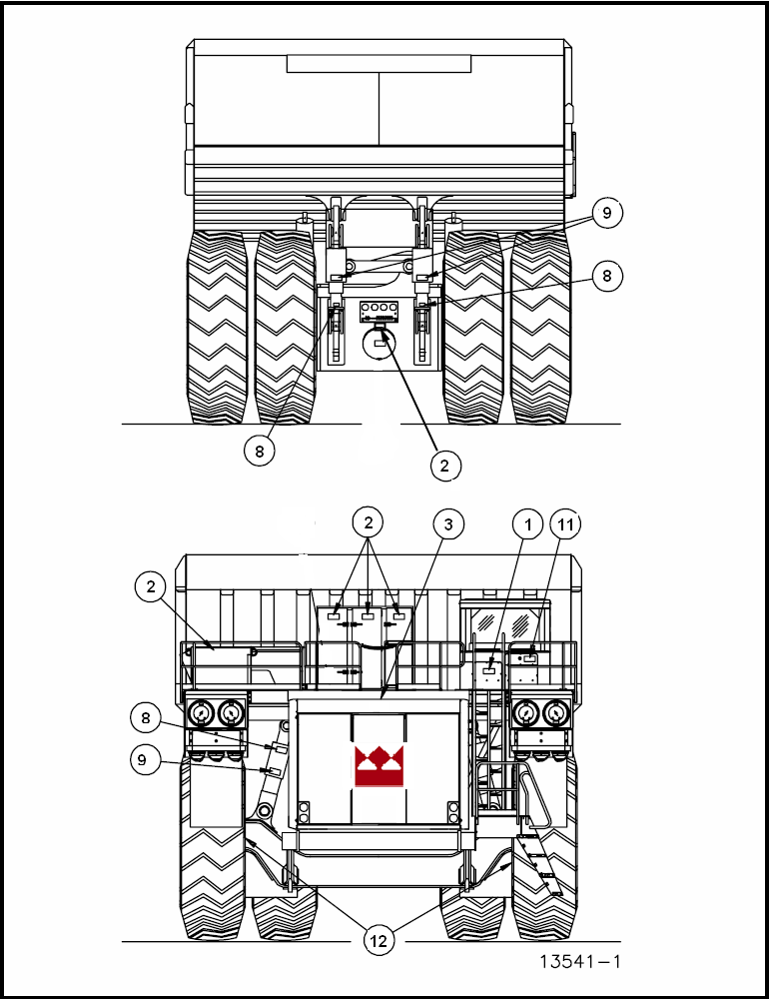
Рис. 1 - Типичный знак безопасности
На каждом грузовике есть много предупреждающих знаков опасности, указывающих на потенциальную опасность в этом районе. Если некоторые из знаков отсутствуют или неясны, их следует немедленно заменить. Расположение знаков безопасности приведено в рисунке 1.
Примечание: Точное значение знаков безопасности и указанные зоны могут варьироваться в зависимости от модели грузовика и настроенного оборудования. Если у вас есть какие-либо вопросы об этих знаков обратитесь к персоналу шахты или к NHL. .
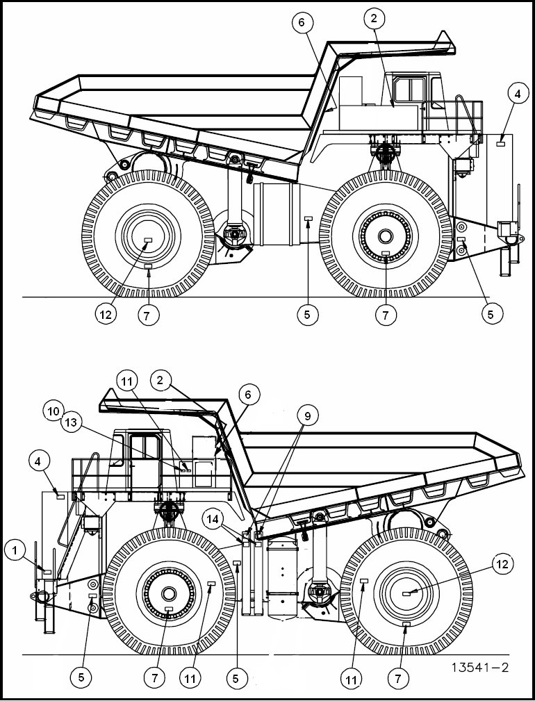
Рис. 1 - Продолжение
Важно, чтобы все операторы прочитали и поняли содержание руководства для оператора, прежде чем начать работу с грузовиком. Если есть какая-либо проблема, ее следует обсудить с персоналом шахты или послепродажным персоналом NHL.
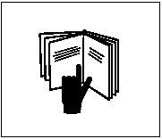
Серийный номер 1
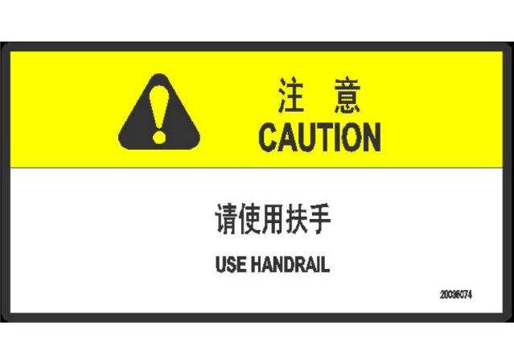
Используйте поручни.Внимание
Поручни используются для помощи вверх и вниз по лестнице. Поручни должны всегда использоваться на лестнице, чтобы снизить риск падения.
Серийный номер 2
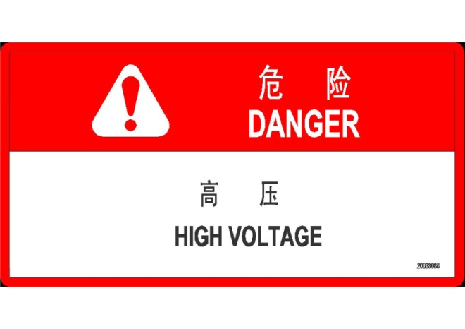
Высокое давлениеОпасно
Чтобы эффективно управлять электрическим колесом, в тяговой системе используется высокое напряжение и высокий ток. При работе в этой области, особенно при работе двигателя, обратите особое внимание на безопасность.
Серийный номер 3
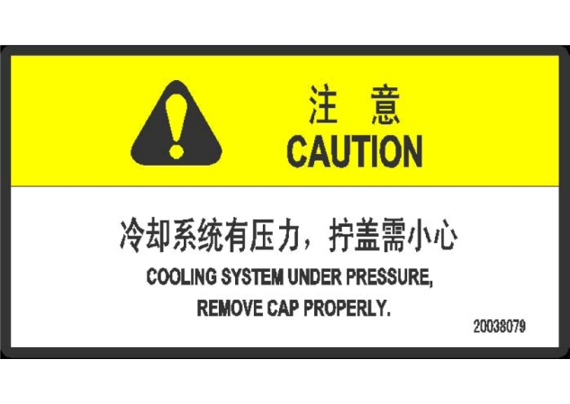
Система охлаждения находится под давлением, будьте осторожны при открытии крышки радиатора.Внимание
Система охлаждения автоматически начинает работать, когда рабочая температура двигателя повышается, и в этот момент система находится под давлением. Крышка радиатора и соответствующие контрольные компоненты используются для регулирования и поддержания этого давления. Необходимо осторожно при открывании или снятии крышки радиатора, чтобы предотвратить внезапное выпадение давления и перелив жидкости. Это может привести к травме людей, которые вступают в контакт с крышками или горячими жидкостями. Правильная процедура описана в настоящем руководстве.
Серийный номер 4
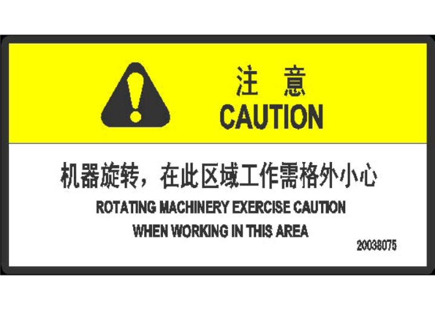
Машина вращается, будьте особенно осторожны при работе в данной зоне.Внимание
Вентилятор охлаждения двигателя также работает при большинстве времени работы двигателя. В большой части времени грузовиков (оснащенных вентилятором муфты) скорость вентилятора зависит от температуры окружающей среды, температуры двигателя, нагрузки и т. д. Будьте осторожны в этой области, чтобы избежать травм.
Серийный номер 5
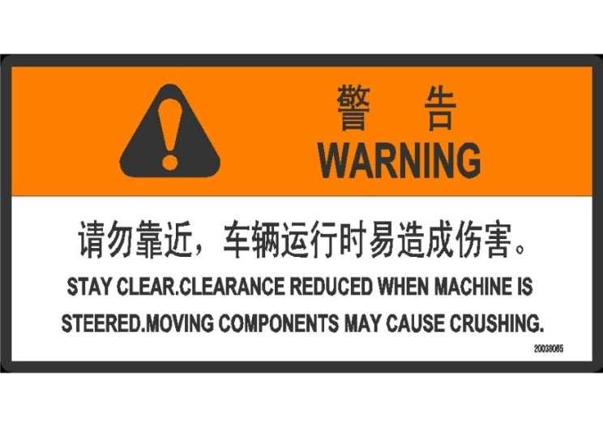
ПредупреждениеНе допускается приближение, существует вероятность получения травм во время работы автомобиля.
Когда рулевое колесо карьерного самосвала вращается, переднее колесо также вращается, а промежуток между рамой и шиной меняется. В это время люди, работающие в этой области, могут застревать или травмироваться. Поэтому, когда самосвал поворачивается, весь персонал и оборудование должны держаться подальше от этой области.
Серийный номер 6
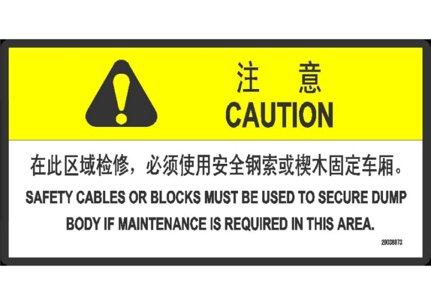
При проведении осмотра и ремонта в этой зоне необходимо зафиксировать кузов предохранительным канатом или упорными клиньями.Внимание
При подъеме кузова для обслуживания необходимо использовать безопасный трос или прокладку для крепления бункера. Когда бункер поднимается и не фиксируется, не работайте в этой области или рядом с грузовиком.
Серийный номер 7
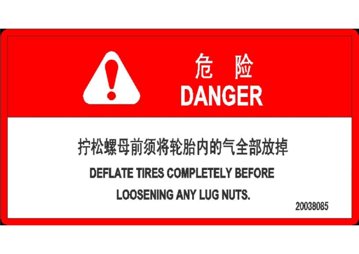
Перед откручиванием гаек следует полностью сбросить давление в шинах.Опасно
Если обод или шина неправильно зафиксированы, выпуск сжатого газа из шины может привести к взрыву. Поэтому газ в шине полностью освобождается до того, как гайка уплотнителя будет выпущена. Установите и закрепите узел шины и обода перед повторной установкой.
Серийный номер 8
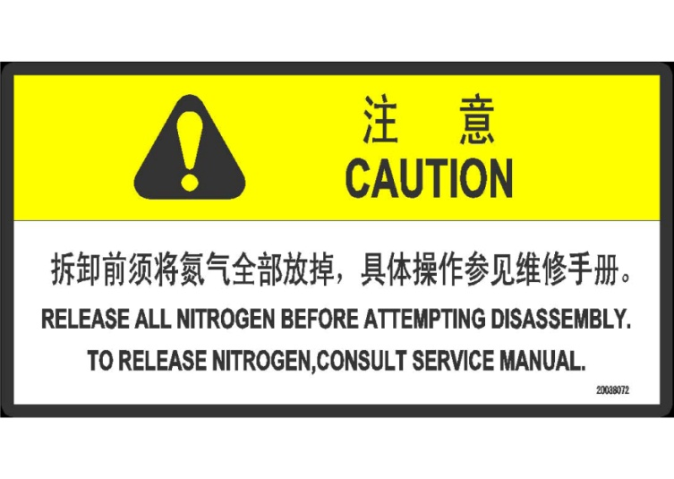
Перед снятием следует полностью сбросить азот, более подробный порядок выполнения действий приведен в инструкции по ремонту.Внимание
Аккумулятор заполнен сухим азотом. Азот - это инертный, невзрывчатый газ. Опасность может возникнуть, если газ в аккумуляторе не полностью освобожден до снятия деталей. Поэтому перед техническим обслуживанием азот должен быть полностью выпущен. Подробнее см. Руководство по обслуживанию NHL.
Если используются другие газы (например, кислород), это может привести к взрыву. Поэтому можно использовать только сухой азот.
Серийный номер 9
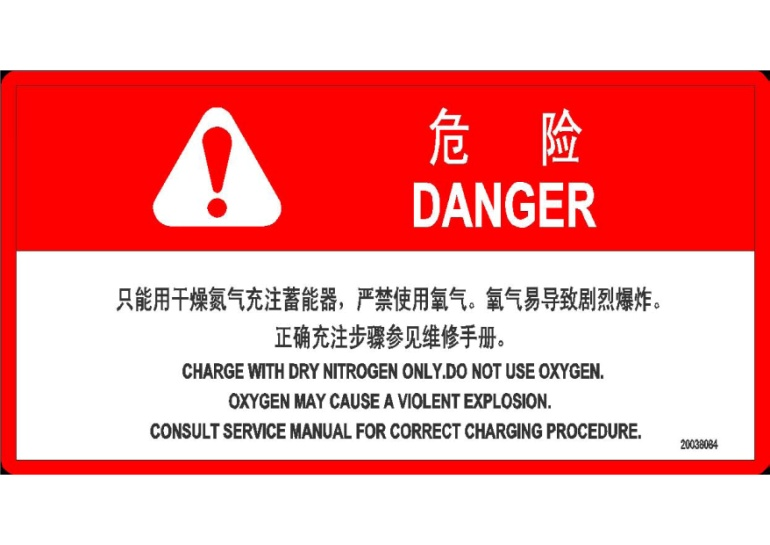
Следует наполнить энергоаккумулятор только сухим азотом, нельзя наполнить его кислородом. Кислород может привести к сильному взрыву.Подробный порядок наполнения приведен в инструкции по ремонту.Опасно
Цилиндр суспензии азотного масла заполнен сухим азотом. Азот - это инертный, невзрывчатый газ. Опасность может возникнуть, если газ в аккумуляторе не полностью освобожден до снятия деталей. Поэтому перед техническим обслуживанием азот должен быть полностью выпущен. Подробнее см. Руководство по обслуживанию NHL.
Если используются другие газы (например, кислород), это может привести к взрыву. Поэтому можно использовать только сухой азот.
Серийный номер 10
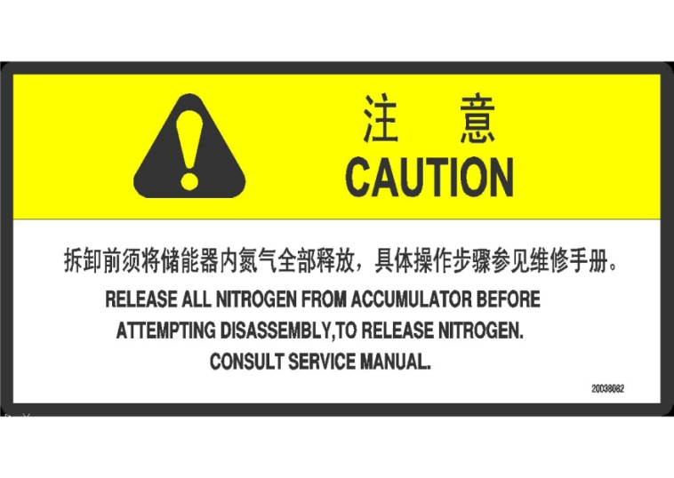
Перед снятием следует полностью сбросить азот в энергоаккумуляторе, подробный порядок выполнения действий приведен в инструкции по ремонту.Внимание
Аккумулятор заполнен сухим азотом. Азот - это инертный, невзрывчатый газ. Опасность может возникнуть, если газ в аккумуляторе не полностью освобожден до снятия деталей. Поэтому перед техническим обслуживанием азот должен быть полностью выпущен. Подробнее см. Руководство по обслуживанию NHL.
Если используются другие газы (например, кислород), это может привести к взрыву. Поэтому можно использовать только сухой азот.
Серийный номер 11
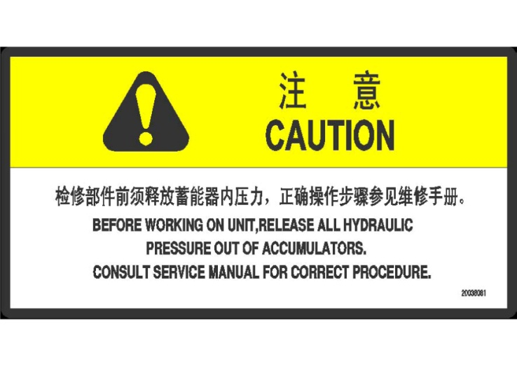
Перед осмотром и ремонтом компонентов следует сбросить давление в энергоаккумуляторе, подробный порядок выполнения действий приведен в инструкции по ремонту.Внимание
Аккумулятор имеет высокое давление во время работы карьерного самосвала, даже когда карьерный самосвал остановлен и двигатель выключен. Неправильная операция может привести к утечке масла под высоким давлением, что может привести к травмам персонала и загрязнению оборудования. Пожалуйста, ознакомьтесь с правильными инструкциями в руководстве по обслуживанию.
Серийный номер 12
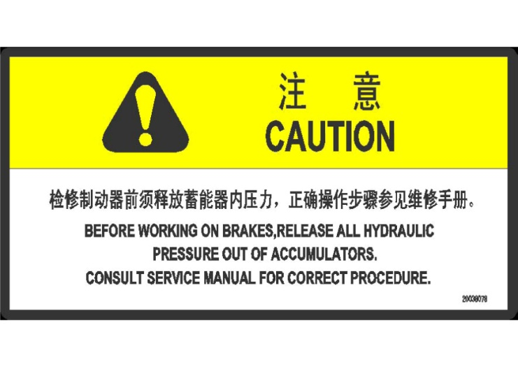
Перед осмотром и ремонтом тормоза следует сбросить давление в энергоаккумуляторе, подробный порядок выполнения действий приведен в инструкции по ремонту.Внимание
Аккумулятор имеет высокое давление во время работы карьерного самосвала, даже когда карьерный самосвал остановлен и двигатель выключен. Неправильная операция может привести к утечке масла под высоким давлением, что может привести к травмам персонала и загрязнению оборудования. Пожалуйста, ознакомьтесь с правильными инструкциями в руководстве по обслуживанию.
Серийный номер 13
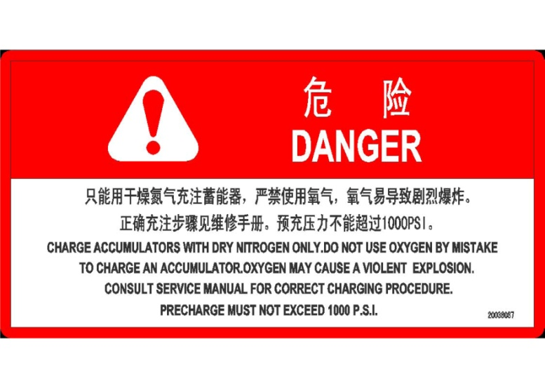
Следует наполнить энергоаккумулятор только сухим азотом, нельзя наполнить его кислородом. Кислород может привести к сильному взрыву.Подробный порядок наполнения приведен в инструкции по ремонту. Давление предварительного наполнения должно быть не более 1000 фунтов/кв. дюйм.Опасно
Аккумулятор заполнен сухим азотом. Азот - это инертный, невзрывчатый газ. Опасность может возникнуть, если газ в аккумуляторе не полностью освобожден до снятия деталей. Поэтому перед техническим обслуживанием азот должен быть полностью выпущен. Подробнее см. Руководство по обслуживанию NHL.
Если используются другие газы (например, кислород), это может привести к взрыву. Поэтому можно использовать только сухой азот.
Одежда
Во время эксплуатации или ремонта самосвала рекомендуется, чтобы весь персонал носил защитные средства, такие как защитные шлемы, защитные очки и защитную обувь и следовал конкретным требованиям и рекомендациям шахты.
Ремень безопасности
Оператор и любой человек в положении второго пилота должны носить ремень безопасности перед тем, как работает карьерный самосвал.
Знакомство с рабочей зоной
Оператор должен быть знаком с рабочей зоной грузовика, чтобы понять дорожные условия и потенциальные опасности.
Соблюдайте всю рабочую среду. Обратите внимание на расположение кабелей, мостов, лопаты или другого загрузочного оборудования и других важных деталей.
Опасно
Не поднимайте кузова рядом с зоной подвесных кабелей
Оператор должен знать и понимать сигналы жестов и инструкции сигнальщиков.
Познакомиться с правилами и правилами всех местоположений и понять их. Всегда соблюдайте правила техники безопасности и рабочие процедуры.
Видимость
Хорошая видимость очень важна для безопасной эксплуатации карьерного самосвала. Перед началом работы карьерного самосвала очистите лобовое стекло, зеркало и фары, проверьте стеклоочиститель, чтобы обеспечить безопасную работу.
Скорость карьерного самосвала
Безопасная скорость карьерного самосвала определяется дорожным и погодным условиями, а также ограничена нагрузкой карьерного самосвала. Будьте особенно осторожны при движении в неблагоприятных погодных условиях, медленно двигаться с медленным вождением. Соблюдайте ограничение скорости шахты, отмеченной в определенной области.
Обычно скорость при спуске не должна превышать 15 mph (24km/hr). Во время восходящего процесса, когда карьерный самосвал идет на вершину склона, тормозная педаль предварительно запущена для управления скоростью карьерного самосвала. Не надо вкладывать всю способность к замедлению при сохранении безопасной скорости, чтобы иметь достаточную способность к замедлению в чрезвычайной ситуации.
Для обеспечения достаточной способности к замедлению транспортного средства в аварийной ситуации транспортное средство должно проходить в безопасном диапазоне скоростей.
Парковка
Есть два способа парковки: кратковременная парковка (оператор остается в кабине) и длительная парковка (оператор покидает самосвал).
Торможение трением должно использоваться для кратковременной парковки. Поскольку оператор остается в кабине, и двигатель продолжает работать, даже если какое - то устройство выходит из строя, можно управлять самосвалом.
Тем не менее, долгосрочная парковка включает в себя больше проблем, потому что карьерный самосвал будет оставлен без присмотра, поэтому транспортное средство должно быть припарковано в безопасном месте, и транспортное средство не будет двигаться, даже если тормоз будет выпущен. Может использоваться любой объект, который может предотвратить случайное перемещение карьерного самосвала, например, клиновидные деревянные блоки, канавки или бровка, и должны быть установлены стояночные тормоза.
Подробное описание двух способов парковки см. в разделе VI руководства.
Предотвращение электрических аварий
Курение и открытое пламя или искры строго запрещены вблизи аккумулятора.
При ремонте электрической системы отсоедините кабель аккумулятора, чтобы предотвратить пожар. Сначала отсоедините провод заземления и снова подключите его к концу работы.
Перед выполнением любых сварочных работ на транспортном средстве отсоедините соединительные провода между аккумулятором и генератором переменного тока, а также соединительный жгут проводов двигателя ECM и контрольный жгут, убедитесь, что провод заземления находится близко к месту сварки как можно больше.
Предотвращение взрыва шины
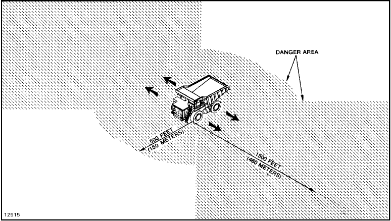
Рис. 2 - Типичная зона опасности взрыва шины (затененная часть, 150 м спереди и сзади, 460 м влево и вправо)
| Опасно |
Огонь или высокие температуры вблизи шины могут привести к взрыву шины.
В любое время перегрев тормоза и сжигание шины могут привести к взрыву шины. Когда загорается самосвал и распространяется на колесо, это также может привести к взрыву шины. Не приближайтесь к самосвалу или не входите в опасную зону, когда это произойдет (как показано на рисунке 2). Если возможно, переместите самосвал от опасной зоны, не подвергая опасности оператора или другого персонала.
Поддерживайте расстояние не менее 500 футов (150 метров) от передней и задней части шины и на расстоянии 1500 футов (460 метров) от боковой стенки шины. Если нужно приблизиться к опасной шине, используйте большой бульдозер в качестве барьера, приближайтесь с передней или задней части самосвала. Если тормоз загорается или пахнут резины шин, не приближайтесь к самосвалу и старайтесь тушить огонь на отдаленном расстоянии. Не используйте огнетушитель, чтобы спешить на самосвал и погасить огонь. Подождите, по крайней мере, после охлаждения шин 8 часов приближаться к самосвалу.
Часть III Инструменты, индикаторы и контроллеры
Кабина электрических колес NTE240 оснащена инструментами, индикаторами и контроллерами, чтобы оператор мог контролировать рабочие условия грузовика и обеспечивать безопасное вождение.
Примечание: описано как стандартное, так и дополнительное оборудование. Игнорировать не применимые пункты.
Перед эксплуатацией грузовика оператор должен уметь идентифицировать каждый инструмент, индикатор и контроллер, освоить их функциями.
Модуль индикатора предупреждает о серьезной проблеме, которая может повлиять на работу грузовика. Если критический системный модуль выходит из строя, транспортное средство должно быть немедленно припарковано в безопасном месте, и двигатель (как указано произоператором двигателя) гаснет, а затем запрашивается помощь. После определения причины аварийного сигнала и устранения неисправности попробуйте снова перемещать самосвал.
3.1Индикатор – прибор
| 1 | Тахометр | 7 | Кнопка выбора основного меню |
| 2 | Спидометр | 8 | Кнопка выбора вверх |
| 3 | Вольтметр | 9 | Кнопка выбора вниз |
| 4 | Масляный манометр | 10 | Кнопка выбора влево |
| 5 | Датчик температуры воды в двигателе | 11 | Кнопка выбора вправо |
| 6 | Прибор положения топлива | 12 | Кнопка переключателя видео |
Рис. 1 -Схема комбинационных приборов кабины
Тахометр (1) - указывает на скорость вращения двигателя в реальном времени. Двигатель NTE240 имеет скорость холостого хода 750rpm, номинальную скорость 1900 rpm и максимальную скорость 1930 rpm.
Спидометр (2) - указывает текущее значение скорости грузовика.
Вольтметр (3) - указывает на текущее напряжение аккумулятора грузовика. С помощью настоящего прибора видно, заряжена ли батарея. недостаток напряжения ли.
Масляный манометр (4) - указывает значение давления масла в двигателе. Нормальный диапазон давления масла составляет 20 PSI-70 PSI (138Kpa-480KPa).
Датчик температуры воды в двигателе (5) - указывает значение температуры охлаждающей жидкости двигателя. Максимально допустимая температура охлаждающей жидкости двигателя составляет 102 ° C.
Прибор положения топлива (6) - указывает текущее количество топлива в грузовике. Сигнальная лампа загорается, если количество топлива ниже заданного значения. В это время, пожалуйста, не запускайте самосвала, нужно сначала добавить топливо.
Кнопка выбора основного меню (7) - короткое нажатие для отображения главного меню измерителя.
Кнопка выбора вверх (8) - короткое нажатие, выберите вверх.
Кнопка выбора вниз (9) - короткое нажатие, выберите вниз.
Кнопка выбора влево (10) - короткое нажатие, выберите влево.
Кнопка выбора вправо (11) - короткое нажатие, выберите вправо.
Кнопка переключателя видео (12) - NTE240 не использует эту кнопку.
3.2Индикатор - сигнальная лампа
Сигнальная лампа на панели показана на рисунке 2:
Рис. 2 - Схема сигнальной лампы комбинации приборов
Индикатор левого/правого рулевого управления (1, 2) - индикатор левого/правого рулевого управления, указывающий соответствующий сигнал поворота при мигании, при нажатии переключателя аварийной сигнализации одновременно мигает сигнал левого/правого рулевого управления. Регулярно проверяйте рулевое освещение на наличие повреждений. Если он поврежден, остановите самосвал и проверьте детали.
Индикатор ближнего света (3) - используется для индикации ближнего света, что указывает на включение ближнего света. Если индикаторная лампа не загорается при включении ближнего света, необходимо немедленно остановить грузовик и припарковать в безопасном месте для помощи.
Индикатор дальнего света (4) - используется для индикации ближнего света, что указывает на включение дальнего света. Если индикаторная лампа не загорается при включении дальнего света, необходимо немедленно остановить грузовик и припарковать в безопасном месте для помощи.
Индикатор противотуманной фары (5) - используется для индикации противотуманной фары, что указывает на включение противотуманной фары. Если индикаторная лампа не загорается при включении противотуманной фары, необходимо немедленно остановить грузовик и припарковать в безопасном месте для помощи.
Индикатор неисправности (6) - NTE240 не использует этот индикатор.
Индикатор низкого тормозного давления (7) - используется для сигнализации при низком тормозном давлении. Этот индикатор загорается, когда тормозное давление ниже 2100PSI. Должно быть гарантировано, что индикатор выключен во время вождения. Если он загорается, раздастся зуммер.
Если индикатор загорается во время нормальной езды, немедленно остановитесь самосвал и припаркуйтесь в безопасном месте для помощи. Не перемещайте грузовик до тех пор, пока не определите и не разрешите проблему. проблему
Индикатор низкого давления рулевого управления (8) - используется для сигнализации при низком давлении рулевого управления. Этот индикатор загорается, когда давление рулевого управления ниже 2100PSI. Должно быть гарантировано, что индикатор выключен во время вождения. Если он загорается, раздастся зуммер.
Если индикатор загорается во время нормальной езды, немедленно остановитесь самосвал и припаркуйтесь в безопасном месте для помощи. Не перемещайте грузовик до тех пор, пока не определите и не разрешите проблему. проблему
Индикатор низкого уровня масла гидравлического масла (9) - используется для сигнализации при низком уровне гидравлического масла. Этот индикатор загорается, когда уровень гидравлического масла ниже минимального уровня масла. Должно быть гарантировано, что индикатор выключен во время вождения. Если он загорается, раздастся зуммер.
Если индикатор загорается во время нормальной езды, немедленно остановитесь самосвал и припаркуйтесь в безопасном месте для помощи. Не перемещайте грузовик до тех пор, пока не определите и не разрешите проблему. проблему.
Индикатор высокой температуры гидравлического масла (10) -используется для сигнализации при высокой температуры гидравлического масла. Этот индикатор загорается, когда температура гидравлического масла превышает 80 ° C. Если он загорается, раздастся зуммер.
Если индикатор загорается во время нормальной езды, немедленно остановитесь самосвал и припаркуйтесь в безопасном месте для помощи. Не перемещайте грузовик до тех пор, пока не определите и не разрешите проблему.
Внимание
Непрерывная работа с высокими температурами гидравлического масла может привести к повреждению деталей и связанных с ними систем.
Индикатор остановки двигателя, свет защиты двигателя, сигнал тревоги двигателя (11, 12, 13) - используется для отображения неисправностей двигателя и рекомендаций по техническому обслуживанию. Если эти сигнальные огни загораются, запрещено запускать самосвал, а затем работать после устранения неисправностей. Для получения дополнительной информации см. руководство по обслуживанию, предоставленное произоператором двигателя. Где:
Индикатор остановки двигателя (11) - когда ECU двигателя обнаруживает серьезную неисправность, требующую немедленного устранения, загорается данный индикатор, и оператор должен немедленно выключить двигатель, чтобы избежать более серьезных повреждений.
Свет защиты двигателя (12) - когда ECU двигателя обнаруживает, что двигатель нуждается в техническом обслуживании. Оператор должен выполнить соответствующее обслуживание как можно скорее. Несвоевременное обслуживание может привести к снижению мощности или скорости двигателя или даже к выходу из строя.
Сигнал тревоги двигателя (13) - когда ECU двигателя обнаруживает неисправность, сигнал тревоги двигателя продолжает загораться, и проблема не требует немедленного разрешения. Если данный сигнал мигает, оператор должен как можно скорее обнаружить и устранить неисправности, чтобы избежать дальнейшего повреждения двигателя.
Индикатор стояночного тормоза (14) - используется для индикации парковки. Этот индикатор загорается после включения стояночного тормоза. Перед вождением необходимо отпустить стояночный тормоз, чтобы индикатор не загорелся. При парковке должен загореться индикатор.
При нормальном движении этот индикатор загорается, необходимо остановить автомобиль в первую очередь и припарковаться в безопасном месте, затем искать помощь. Не двигайте грузовик, пока проблема не будет устранена.
Индикатор тормоза загрузки (15) - используется для индикации нагрузки, этот индикатор загорается, когда применяется нагрузочный тормоз. Должно быть гарантировано, что индикатор выключен во время вождения.
Если индикатор загорается во время нормальной езды, немедленно остановитесь самосвал и припаркуйтесь в безопасном месте для помощи. Не перемещайте грузовик до тех пор, пока не определите и не разрешите проблему проблему.
Индикатор подъема кузова (16) - используется для индикации подъема кузова, когда кузов поднимается с плавающего положения на раме, загорается индикатор подъема кузова. Если индикатор не загорается при поднятом кузове или индикатор горит, когда кузов не поднимается, немедленно остановите автомобиль, припаркуйтесь в безопасном месте и ищите помощь.
Индикатор высокой температуры охлаждающей жидкости двигателя (17) - используется для сигнализации высокого уровня температуры охлаждающей жидкости двигателя. Если индикатор загорается, должно немедленно остановить самосвал и провести техническое обслуживание. Если он загорается, раздастся зуммер.
Индикатор низкого уровня охлаждающей жидкости двигателя (18) - NTE240 не использует этот индикатор.
Индикатор низкого давления масла двигателя (19) - используется для индикации низкого давления масла двигателя. Этот индикатор загорается при парковке. Индикатор должен погаснуть после запуска двигателя. Если он загорается, раздастся зуммер. Если индикатор загорается после запуска двигателя, немедленно выключить двигатель для получения помощи и устранения неполадок. Не перемещайте грузовик до тех пор, пока не определите и не разрешите проблему.
Индикатор блокировки воздушного фильтра (20) - используется для индикации блокировки воздушного фильтра. Когда воздушный фильтр заблокирован, загорается соответствующий индикатор. Индикатор обслуживания воздушного фильтра используется для указания необходимости технического обслуживания воздушного фильтра. Если он загорается, раздастся зуммер.
Когда индикатор загорается, немедленно остановите и припаркуйте самосвал в безопасном месте, чтобы проверить фильтр на наличие пробки. Если индикатор не загорается в течение длительного времени, проверьте линию на наличие повреждений или короткого замыкания системы.
Индикатор неисправности централизованной смазки (21) - используется для индикации неисправности централизованной смазки, индикатор загорается, указывая на то, что имеется неисправность централизованной смазки. Когда индикатор загорается, зуммер раздастся и немедленно остановите и припаркуйте самосвал в безопасном месте для помощи. Не перемещайте грузовик до тех пор, пока не определите и не разрешите проблему.
Индикатор низкого уровня положения топлива (22) - используется для индикации низкого уровня сигнала уровня топлива двигателя. Если этот индикатор загорается, должно залить топливом перед использованием грузовика.
Индикатор зарядки (23) - используется для индикации зарядки. При парковке индикатор загорается. Если напряжение ниже предела системы, загорается индикатор напряжения аккумулятора, и зуммер раздастся.
Этот индикатор должен быть погаснут, когда двигатель работает. Если он не погаснет, немедленно остановите и припаркуйте самосвал в безопасном месте для помощи. Не перемещайте грузовик до тех пор, пока не определите и не разрешите проблему.
Предупреждение
Слишком низкое напряжение аккумулятора может привести к неправильной работе тяговой системы грузовика в виде отказа привода и/или электрического замедления.
Индикатор давления ветра в коробке моста (24) - используется для индикации давления ветра в коробке моста. Если индикатор загорается после запуска двигателя, указывает давление ветра низкое, а индикатор не загорается, указывает давление ветра нормальное. Если индикатор загорается в поезде, система GE сообщит о неисправности 630 и немедленно остановите и припаркуйте самосвал в безопасном месте для помощи. Не перемещайте грузовик до тех пор, пока не определите и не разрешите проблему.
Индикатор неисправности системы привода (25) - используется для управления индикацией неисправности системы. Когда индикатор загорается, указывает то, что система привода неисправна и сопровождается аварийным сигналом зуммера. При возникновении неисправности в электрической/контрольной системе индикатор загорается и раздастся зуммер. Для восстановления мощности требуется ручной сброс, нажмите переключатель сброса системы в кабине или кнопку сброса в электрическом блоке управления.
Если индикатор загорается, немедленно остановите и припаркуйте самосвал в безопасном месте для помощи. Не перемещайте грузовик до тех пор, пока не определите и не разрешите проблему.
3.3Индикатор - сигнальная лампа (индикация на ЖК-дисплее)
Рис. 3 - Схема сигнальных ламп комбинированных приборов на ЖК-дисплее
Индикатор отказа замедления (1) - используется для индикации отказа замедления системы привода, этот индикатор загорается, указывает на то, что у грузовика нет способности к замедлению. Если индикатор загорается во время движения, оператор должен обратить на себя большое внимание.
Индикатор замедления (2) - Этот индикатор загорается, когда самосвал работает медленно.
Индикатор непрерывного замедления (3) -индикатор мигает, указывает на то, что система достигает теплового баланса во время медленного торможения. Если он мигает 15 секунд, это означает, что система будет войти в режим непрерывного замедления. Если индикатор всегда загорается, это означает самосвал вошел в режим непрерывного замедления.
Гидравлический масляный фильтр (4) - NTE240 не использует этот индикатор.
Сбой ремня безопасности (5) - NTE240 не использует этот свет.
Блок тормозного давления переднего колеса (6) - используется для указания того, что давление тормоза переднего колеса отпущено ли после того, как тормоз закончился. Если индикатор загорается, это указывает на то, что переднее колесо имеет остаточное тормозное давление, а тормоз все еще существует, немедленно остановите и припаркуйте самосвал в безопасном месте.
Блок тормозного давления заднего колеса (7) - используется для указания того, что давление тормоза заднего колеса отпущено ли после того, как тормоз закончился. Если индикатор загорается, это указывает на то, что заднее колесо имеет остаточное тормозное давление, а тормоз все еще существует, немедленно остановите и припаркуйте самосвал в безопасном месте.
Неисправность диода (8) - NTE240 не использует этот индикатор.
Температура колесного двигателя высокая (9) - NTE240 не использует этот индикатор.
Неисправность заземления (10) - NTE240 не использует этот индикатор.
Индикатор скорости 1 (11) - используется, когда скорость NTE240 достигает установленного значения скорости 1, этот индикатор даст оператору напоминание. Скорость 1 может быть установлена заводом основной машины в соответствии с потребностями шахт.
Индикатор скорости 2 (12) - используется, когда скорость NTE240 достигает установленного значения скорости 2, этот индикатор даст оператору напоминание. Скорость 2 может быть установлена заводом основной машины в соответствии с потребностями шахт.
Индикатор без тяги (13) - этот индикатор загорается, если система привода NTE240 имеет фатальную ошибку и не может буксироваться нормально.
Если индикатор загорается, немедленно остановите и припаркуйте самосвал в безопасном месте для помощи. Не перемещайте грузовик до тех пор, пока не определите и не разрешите проблему.
Содержание воды в топливе (14) - используется для указания того, что сепаратор для разделения нефти. воды и топлива спускает воду. Если индикатор загорается, это указывает на то, что вода в стакане для воды сепаратора для разделения нефти. воды и топлива достиг предельного положения, должно немедленно спускать воду в стакане для воды.
Двигатель ожидает запуска (15) - NTE240 не использует этот индикатор.
3.4Контроллер -кулисный переключатель (в середине консоли)
| 1 | Кнопка тормоза загрузки | 6 | Переключатель обнаружения |
| 2 | Переключатель режима отдыха | 7 | Световой выключатель |
| 3 | Переключатель запроса прогрева двигателя | 8 | Переключатель стояночного тормоза |
| 4 | Переключатель сброса сбоя | 9 | Переключатель аварийного останова |
| 5 | Переключатель аварийной сигнализации | 10 |
Рис. 4 - Панельный кулисный переключатель
Кнопка тормоза загрузки (1) - используется для загрузки материалов, в короткое время стоянки (временно остановить самосвал при загрузке и выгрузке т.д, когда оператор в кабине), только управляется тормозная система для тормоза заднего колеса. Нажать вверх, чтобы реализовать, повернуть и вытащить, чтобы отпустить.
Переключатель режима отдыха (2) - используется для переключения между режимом отдыха и режимом подготовки. В режиме отдыха основной генератор NTE240 не генерирует электричество, а основной генератор генерирует электричество в режиме подготовки.
Переключатель запроса прогрева двигателя (3) - используется для функции прогрева двигателя. Когда этот переключатель будет нажат, система управления автоматически потребляет энергию 300hp в резисторную сетку, что эквивалентно двигатель с нагрузкой 300hp работает, ускоряя прогрев двигателя. Эта функция подходит для рабочих условий запуска грузовика в зимний период.
Нажатие этого переключателя увеличит скорость вращения двигателя до 900rpm, и скорость автоматически вернется в диапазон системных требований по мере движения самосвала.
Переключатель сброса системы привода (4) - для функции сброса сбоя системы привода. Использовать этот переключатель для сброса системы привода, когда система неисправна. Другая функция: если вентилятор не запускается нормально при запуске, можно нажать этот переключатель, после 2 минуты вентилятор начнет нормально работать.
Переключатель аварийной сигнализации (5) - широко известный как «двойная вспышка», после нажатия левый и правый поворотные огни самосвала одновременно мигают, чтобы напомнить другим транспортным средствам и людям обратить внимание. Обычно используется в ситуациях, которые требуют аварийной парковки, или в плохую погоду, например, туманная погода.
Переключатель обнаружения (6) - этот переключатель используется, чтобы проверить, является ли сигнальная лампа нормальной.
Световой выключатель (7) - этот переключатель используется для управления огнями. Первая передача включает ночной фонарь карьерного самосвала, подходит для ночного вождения самосвала, а вторая передача включает переключатель с низкой освещенностью самосвала, при этом комбинированный переключатель управляет фарами.
Переключатель стояночного тормоза (8) - Используется для активации и отключения стояночного тормоза. Направо для активации стояночного тормоза, налево для его отключения. Перед активацией стояночного тормоза необходимо нажать этот переключатель, затем использовать кнопку. Для отключения стояночного тормоза операции выполняются в обратном порядке.
Переключатель аварийного останова (9) - для принудительного останова самосвала в чрезвычайной ситуации. При нажатии включается тормоз, отпускать тормоз по направлению стрелы, как показанному на рисунке. Парковка таким образом имеет определенный ущерб для самосвала и только использоваться в чрезвычайных ситуациях.
Внимание: регулярно проверяйте функцию аварийного торможения, чтобы убедиться, что она работает нормально и во избежание повреждения персонала или самосвала в случае аварии.
3.5Контроллер -кулисный переключатель (на верхней части)
| 1 | Переключатель хранения данных | 5 | |
| 2 | Переключатель передних фар | 6 | |
| 3 | Перелючатель противотуманной фары | 7 | |
| 4 | Переключатель лестничной лампы |
Рис. 5 -Кулисный переключатель
Переключатель хранения данных (1) - используется для записи системной информации в пределах ошибки 5S для диагностики неисправностей.
Переключатель передних фар (2) - используется для управления включением/выключением передних фар.
Перелючатель противотуманной фары (3) - используется для управления включением/выключением противотуманной фары.
Переключатель лестничной лампы (4) - используется для управления включением/выключением лестничной лампы.
3.6Контроллер -кулисный переключатель (в шкафу управления)
| 1234 | |||
| 1. | Переключатель питания системы управления | 5. | |
| 2. | Переключатель отключения возбуждения | 6. | |
| 3. | Переключатель переключения режима двигателя | 7. | |
| 4. | Индикатор безопасности системы | 8. |
Рис. 6 - Панель управления системы управления (расположена в шкафу управления GE)
Переключатель питания системы управления (1) - используется для включения/выключения питания системы управления GE, обычно используется для отладки и обслуживания.
Переключатель отключения возбуждения (2) - используется для отключения возбуждения системы привода. После отключения возбуждения NTE240 не будет генерировать электричество, используется для отладки и обслуживания.
Переключатель переключения режима двигателя (3) - используется для переключения режима работы двигателя.
Индикатор безопасности системы (4) - загорается, это указывает на то, что системный конденсатор заряжается, не загорается, это указывает на то, что система безопасная.
Внимание: При нормальном вождении запрещено использовать переключатель питания системы управления и переключатель отключения возбуждения.
3.7Контроллер - комбинированный переключатель
| 1 | |||
| 1. | Комбинированный переключатель | 5. | |
| 2. | 6. | ||
| 3. | 7. | ||
| 4. | 8. |
Рис. 8 - Комбинированный переключатель
Комбинированный переключатель - для управления освещением, гудком и стеклоочистителем, это интегрированный многофункциональный комбинированный переключатель. Описывается отдельно ниже:
| Управление освещением расположено на левой ручке комбинированного переключателя Как показано: Близкий свет: среднее положение - ближний свет Дальний свет: вниз давить - дальнего света Вспышка: поднять наверх – вспышка | |
| Управление сигналом поворота расположено на левой ручке комбинированного переключателя Как показано: Правый поворот: вперед - правый указатель поворота Левый поворот: задний левый указатель поворота | |
| Регулятор гудка расположен в верхней части левой стороны комбинированного переключателя и является поднятой кнопкой. Нажмите верхнюю кнопку на левом ручке комбинированного переключателя для управления работой гудка. | |
| Управление стеклоочистителем расположено на левой ручке комбинированного переключателя и является поворотным переключателем. Для управления работой стеклоочистителя включите поворотный переключатель на комбинированном переключателе. 0: стеклоочиститель останавливается; I: медленная передача стеклоочистителя; II: быстрая передача стеклоочистителя; J: передача прерыва стеклоочистителя Работу очистителя ветрового стекла можно контролировать, нажав кнопку диска в верхней части левой ручки комбинированного переключателя. |
3.8Контроллер - педаль
| 321 | |||
| 1. | Педаль тормоза | 5. | |
| 2. | Педаль замедления | 6. | |
| 3. | Педаль дроссельной заслонки | 7. | |
| 4. | 8. |
Рис. 9 - Комбинированный переключатель
Педаль тормоза (1) - используется для управления механическим тормозом для замедления грузовика и остановки.
Педаль замедления (2) - используется для электрического медленного торможения, что является основной мерой торможения грузовика.
Педаль дроссельной заслонки (3) - используется для управления дроссельной заслонкой для ускорения грузовика.
Ниже описываются следующие функции:
| Педаль тормоза A.Описание и расположение Педаль тормоза расположена на передней стороне кабины и слева от рулевой колонки. B.Операция Педаль тормоза пропорционально управляет выходом тормозной системы в соответствии с углом педали, чтобы вывести тормозное усилие в грузовик. C.Обычно, поскольку самосвал оборудован гибридной тормозной системой, не надо управлять педалью тормоза при парковке. D.Используйте педаль тормоза только в чрезвычайной ситуации. | |
| Педаль замедления A.Также называется «педаль электрического тормоза», B.Описание и расположение Педаль замедления расположена на передней стороне кабины между педалью рабочего тормоза и педалью электронной дроссельной заслонки. C.Операция Педаль замедления также называют педалью электрического тормоза, а легкое нажатие педали используется для переключения NTE240 на режим замедления, чтобы реализовать замедление грузовика. D.Ход педали замедления состоит из потенциометра, поэтому при использовании педали замедления легко постучать и осторожно поставить. | |
| Педаль электронной дроссельной заслонки A.Описание и расположение Педаль электронной дроссельной заслонки прикреплена к передней приборной панели кабины и расположена в крайней правой части трех педалей. B.Операция Педаль электронной дроссельной заслонки дает электронный сигнал топливной системе двигателя пропорционально углу педали электронной дроссельной заслонки. Внимание: не пускать педаль электронной дроссельной заслонки при запуске двигателя. Никогда не запускайте двигатель с высокой скоростью и полной нагрузкой сразу после запуска двигателя. Перед эксплуатацией при высокой скорости полной нагрузки двигатель следует прогревать и полностью смазывать. Никогда не отпускайте двигатель на холостом ходу более 5 минут. Если больше 5 минут, выключите двигатель. |
3.9Контроллер - переключатель диспетчерской вышки
| 1. | Ручка переключения | 5. | Селекторный переключатель RSC |
| 2. | Ручка для управления подъемом | 6. | Ключевой переключатель |
| 3. | Разъем питания | 7. | |
| 4. | Переключатель подтверждения RSC | 8. |
Рис. 10 - Переключатель диспетчерской вышки
Ручка переключения (1) - используется для управления ходом и задним ходом самосвала. D - передача вперед, N - нейтральная передача, R - задняя передача.
Ручка для управления подъемом (2) - используется для подъема, спуска, колебания и сохранения кузова; при подъеме кузова перемещать ручку для управления подъемом назад, кузов поднят; при спуске кузова перемещать ручку для управления подъемом вперед, кузов спущен; при сохранении действий грузовика ручка для управления подъемом возвращается в нейтральное положение, кузов держится; при колебании кузова нажать ручку на верхней части ручки для управления подъемом, кузов колеблется. При контакте с рамой бесконтактный переключатель запускает гидравлическую систему и автоматически выполняет плавучую функцию, чтобы замедлить спуск и уменьшить воздействие кузова на раму.
Разъем питания (3) - используется в кабине для «подачи питания», часто используется для питания прикуривателя, MP3 и т. д.
Селекторный переключатель/переключатель подтверждения RSC (4/5) - используется для управления NTE240 RSC, только после нажатия переключателя подтверждения RSC (5) нажата, селекторный переключатель RSC (4) функционирует. RSC = Speed Speed Control, что означает подтверждение медленной скорости. Когда NTE240 медленно спускается вниз, нажать переключатель подтверждения RSC, скорость NTE240 непосредственно используется для управления селекторного переключателя RSC, до повторного нажатия оператором на педаль дроссельной заслонки.
Ключевой переключатель (6) - для управления пуском и остановкой двигателя и привода. При включении ключа сигнал поступает в контроллер, который отправляет сигнал на запуск двигателя. Запуск двигателя запрещен, если температура воды ниже -4°C, температура масла ниже -4°C и коробка передач находится не на нейтрали.
3.10Контроллер -главный выключатель аккумулятора 🔧 Электрооборудование в каталоге →
| 1 | |||
| 1. | Выключатель аккумулятора | 5. | |
| 2. | 6. | ||
| 3. | 7. | ||
| 4. | 8. |
Рис. 11 - Главный выключатель аккумулятора
Выключатель аккумулятора (1) - действие: отключить систему питания 24 V всего автомобиля.
Внимание. Этот переключатель необходимо отключить для долгосрочной парковки.
3.11Автоматический выключатель
| 1. | B1 | 6. | B6 |
| 2. | B2 | 7. | B7 |
| 3. | B3 | 8. | B8 |
| 4. | B4 | 9. | B9 |
| 5. | B5 |
Рис. 13 - Автоматический выключатель
Соответствующее описание каждого автоматического выключателя:
B1 - ключевой переключатель, верхний свет, двигатель SAM, централизованная смазка, лестничный свет, комбинированный переключатель, переключатель служебного освещения
B2 - питание двигателя, служебный светильник, реле зажигания, питание CBU
B3 - мотор дворника, свет мостового ящика, переключатель подъема, радио, аварийная остановка тормозной системы, взвешивание
B4 - противотуманные фары, поднять, задний фонарь, гудок, прикуриватель, переключатель света лестницы
B5 - передние фары, датчик давления мостового ящика, датчик давления переднего подвесного цилиндра
B6 - взвешивающая система, двигатель глохнет, переключатель режима отдыха,
B7 - видео, пожарное тушение, воздушное кресло, питание приборной панели, система управления
B8 - механизм подачи и отбора, сброс дворника, электроокна, кондиционер
B9 -Резерв
3.12Реле 🔧 Электрооборудование в каталоге →
Рис. 14–Реле
Соответствующее описание реле в рисунке показано в следующей таблице:
| 1 | 2 | 3 | 4 | 5 | 6 | 7 | 8 | 9 | 10 |
| Реле дальнего света | Реле ближнего света | Реле сигнала | Реле заднего хода | Реле задних фонарей | Реле противотуманных фар | Реле рабочего света | Реле стеклоочистителя на низкой скорости. | Реле с задержкой | Реле работы или реле режима работы |
3.13Реле изоляции 🔧 Электрооборудование в каталоге →
Реле изоляции — управление питанием автоматического вылючателя B3-B8.
3.14Диагностическая плата
a. Диагностическая плата правой передней части кабины.
| ВзвешиваниеТестирование двигателя | |||
| 1 | DSC интерфейс | 2 | K-LIN интерфейс |
| 3 | PAYLOAD интерфейс | 4 | ENGINE TEST интерфейс |
| 5 | USB интерфейс |
Рис. 15.1 Диагностическая плата пульта управления
DSC-интерфейс (1) — загрузка программы системы управления информацией.
K-LINE-интерфейс (2) — загрузка программы контроллера CBCU для всего транспортного средства.
PAYLOD-интерфейс (3) — NTE240 не используется.
ENGINE TEST-интерфейс (4) — диагностический интерфейс данных двигателя.
USB-интерфейс (5) — система взвешивания ACCA, загрузка программы дисплея IDCU.
b. Управляющая башня диагностическая плата
| 1 | 24V электрическая розетка | 6 | IDCU интерфейс по данным |
| 2 | 12V электрическая розетка | 7 | LCU интерфейс по данным |
| 3 | USB интерфейс по данным (заглушка) | 8 | интерфейс шины двигателя CAN |
| 4 | ACCA интерфейс программы взвешивания | 9 | LUC CAN1 интерфейс по данным |
| 5 | RJ45 интерфейс по данным | 10 | ICAN интерфейс по данным |
Рис. 15.2 Управляющая башня диагностическая плата
24V электрическая розетка (1) — для подключения устройств с напряжением 24V.
12V электрическая розетка (2) — для подключения устройств с напряжением 12V.
USB (3) — NTE240 не используется.
Интерфейс для перемычек программирования (4) — система взвешивания ACCA, перед загрузкой программы LCU, необходимо коротко замкнуть с помощью перемычки.
RJ45 интерфейс (5) — система взвешивания ACCA, для загрузки данных взвешивания.
IDCU R232 интерфейс (6) — система взвешивания ACCA, для отладки программы дисплея.
LCU R232 интерфейс (7) — система взвешивания ACCA, для отладки программы контроллера.
ENGINE R232 интерфейс (8) — интерфейс для загрузки данных CAN двигателя.
LCU CAN1 интерфейс (9) — система взвешивания ACCA, для загрузки программы контроллера LCU.
I CAN интерфейс (10) — для загрузки данных ICAN всего транспортного средства.
3.15Индикация заднего света 🔧 Электрооборудование в каталоге →
| 1234 | |||
| 1. | Сигнал левого поворота | 3. | Тормозной свет/Ночные огни |
| 2. | Тормозной свет/Ночные огни | 4. | Сигнал правого поворота |
Рис. 15 - Индикация заднего света
Сигнал левого поворота (1) - указывает, что карьерный самосвал повернется влево. Когда частота вспышки меньше 1 раза/сек или более 2 раз/сек, это указывает на то, что сигнал поворота неисправен, и неисправность должна быть устранена вовремя.
Тормозной свет (2 и 3) - предупреждает заднее транспортное средство, в настоящее время замедляется.
Ночные огни (2 и 3) - используется для предупреждения заднего транспортного средства при движении в ночь.
Сигнал правого поворота (4) - указывает, что карьерный самосвал повернется направо. Когда частота вспышки меньше 1 раза/сек или более 2 раз/сек, это указывает на то, что сигнал поворота неисправен, и неисправность должна быть устранена вовремя.
Сигнал предупреждения об опасности - Все сигналы поворота на самосвале одновременно мигают, чтобы предупредить пешеходов или транспортных средств вокруг.
3.16Система управления информацией.
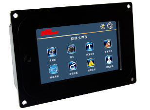
Бортовой терминал
Вид бортового терминала спереди Вид бортового терминала сзади
Последовательность проводов авиационного разъёма
Электрический разъёма питания
| Номер по порядку | 1 | 2 | 3 | 4 | 5 | 6 |
| функции | VDD | GND | ACC | RXD7 | TXD7 | GND |
4-20mA, 485 разъём:
| Номер по порядку | 1 | 2 | 3 | 4 | 5 | 6 | 7 | 8 | 9 | 10 |
| функции | NC | 485-B | 485-A | GND | 4-20，1A | 4-20，1B | 4-20，2A | 4-20，2B | 4-20，3A | 4-20，3B |
Разъемы для последовательного порта, сетевого кабеля, USB-кабеля.
| Номер по порядку | 1 | 2 | 3 | 4 | 5 | 6 | 7 | 8 |
| функции | TX+ | TX- | RX+ | RX- |
| Номер по порядку | 9 | 10 | 11 | 12 | 13 | 14 | 15 | 16 |
| функции | 5V | D- | D+ | GND | NC | RXD1 | TXD1 | GND |
Главный разъём CAN:
| Номер по порядку | 1 | 2 | 3 | 4 | 5 | 6 | 7 | 8 | 9 | 10 | 11 | 12 |
| функции | NC | CAN-LO | CAN-HO | GND | NC | CAN-L1 | CAN-H1 | GND | NC | CAN-L2 | CAN-H2 | GND |
I/O разъём:
| Номер по порядку | 1 | 2 | 3 | 4 | 5 | 6 | 7 | 8 | 9 | 10 |
| функции | IO-1 | IO-2 | IO-3 | IO-4 | IO-5 | IO-6 | IO-7 | IO-8 | IO-9 | IO-10 |
| Номер по порядку | 11 | 12 | 13 | 14 | 15 | 16 | 17 | 18 | 19 |
| функции | IO-11 | IO-12 | IO-13 | IO-14 | IO-15 | IO-16 | GPIO-Общественный |
Характеристики бортового терминала
Питание постоянным током 9-30V
Встроенная ARM-плата, основная частота 400МГц
Точность позиционирования: 2,5 метра (дифференциальный метод может обеспечить позиционирование 50см)
Вертикальная точность позиционирования менее 5 метров
Предел скорости: 515 м/с
Рабочая температура: от -30℃ до 70℃
Время позиционирования при включении: ≤1 минута
Влажность: 10%–90% относительной влажности, без конденсации
Пылезащита, устойчивость к вибрации, низкая тепловая эмиссия, обеспечивает 24-часовую работу в течение дня
7-дюймовый ЖК-дисплей, разрешение экрана 800×480
Полноцветный, яркость 300nits, яркость можно регулировать кнопками
Угол обзора 70/70/50/70 (верхний, нижний, левый, правый), оптимальный угол обзора 60
Коэффициент устойчивости к вибрации: 5-300Гц, ударное ускорение 5G
Инструкции по эксплуатации:
1 Главный экран при включении
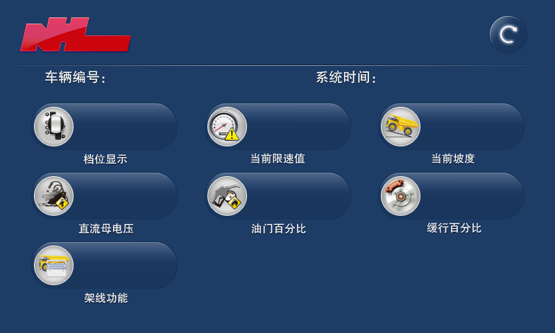
Процент холостого ходаПроцент газаФункция троллейной линииМатеринское напряжение постоянного токаТекущий уклонТекущее ограничение скоростиОтображение передачиСистемное время:Номер автомобиля:
1.1 Отображение передач: нейтраль, задняя, вперед
1.2 Текущее ограничение скорости: единица измерения KPH
1.3 Давление масла в двигателе: единица измерения bar
1.4 Функция троллейной линии: да/нет
2 Интерфейс управления
Нажмите на кнопку выхода в правом верхнем углу главного экрана, чтобы перейти в интерфейс управления.
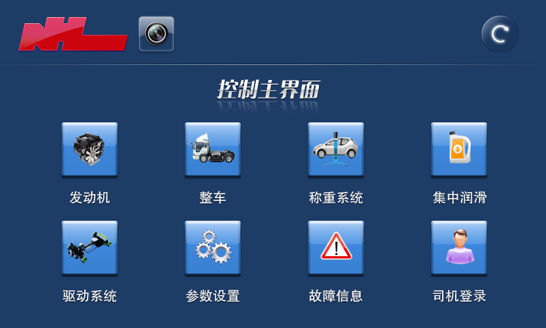
Вход в систему водителяЦентрализованная смазкаИнформация о неисправностяхВесовая системаНастройка параметровЦелый автомобильПриводная системаДвигательГлавный интерфейс управления
2.1 Нажмите на кнопку двигателя, чтобы открыть экран параметров двигателя, где отображаются: температура воды, давление масла, обороты и общее рабочее время. Нажмите кнопку выхода для возврата.
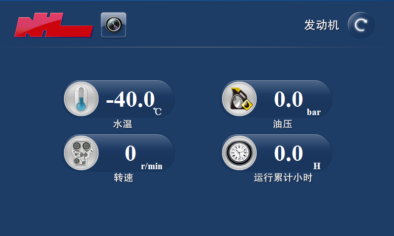
ДвигательТемпература водыЧастота вращения об/мин
2.2 Нажмите на кнопку "Общая информация о транспортном средстве", чтобы увидеть такие параметры, как скорость, выходное напряжение генератора, напряжение аккумулятора и мощность колесного мотора. Нажмите кнопку выхода для возврата.
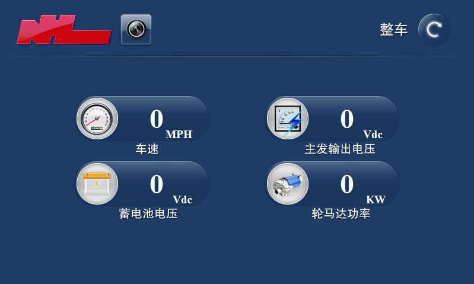
Целый автомобильДавление масла /барОбщее рабочее время /часСкорость Напряжение аккумулятораВыходное напряжение генератора Мощность колесного мотора
2.3 Нажмите на кнопку весовой системы и просмотрите информацию. Нажмите кнопку выхода для возврата.
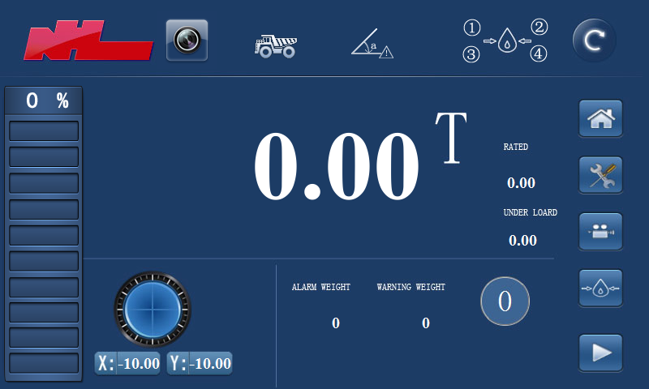
2.4 Нажмите на кнопку централизованной смазки. Нажмите кнопку выхода для возврата.
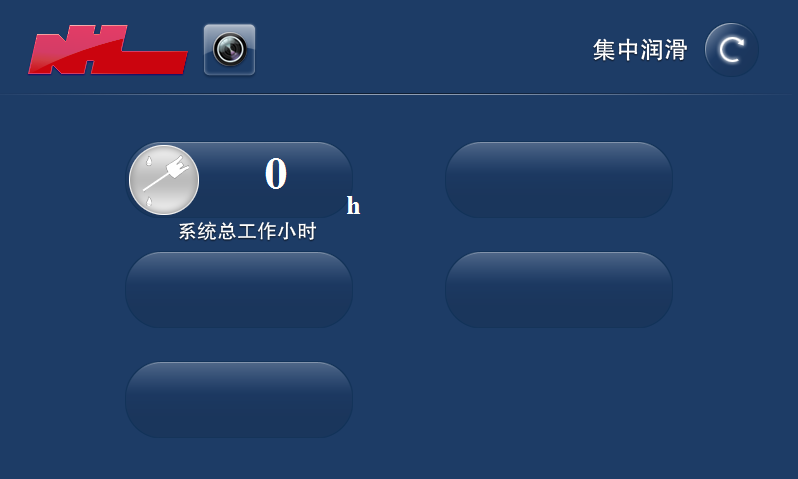
Общее рабочее время системыЦентрализованная смазка
2.5 Нажмите на кнопку приводной системы, просмотрите информацию и используйте кнопки перелистывания для просмотра дополнительных страниц. Нажмите кнопку выхода для возврата.
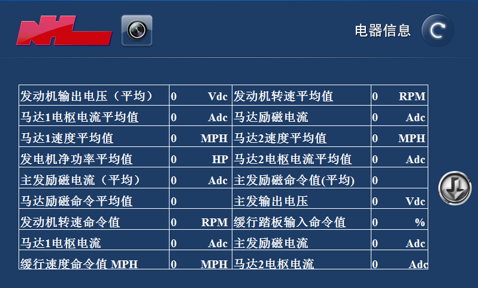
Информация об электроприборахВыходное напряжение двигателя (среднее)0 VdcСреднее значение оборотов двигателя0 RPMСреднее значение тока якоря мотора 10 AdcТок возбуждения мотора0 AdcСредняя скорость мотора 10 MPHСредняя скорость мотора 20 MPHСредняя чистая мощность генератора0 HPСреднее значение тока якоря мотора 20 AdcСредний ток возбуждения главного двигателя 0 AdcСреднее командное значение возбуждения главного двигателя0Среднее значение команды возбуждения мотора0Выходное напряжение главного двигателя0 VdcКомандное значение оборотов двигателя0 RPMКомандное значение ввода педали холостого хода0 %Ток якоря мотора 10 AdcТок возбуждения главного двигателя0 AdcКомандное значение скорости холостого хода MPH0 MPHТок якоря мотора 20 Adc
2.6 Нажмите на "Параметры", чтобы войти в меню настроек. Нажмите кнопку выхода для возврата.
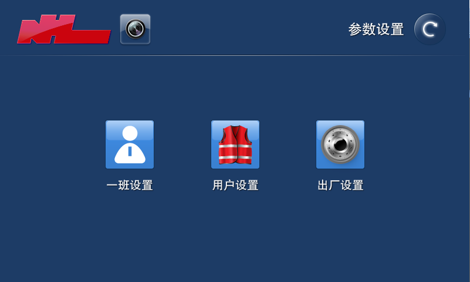
Настройка параметровЗаводские настройкиНастройки пользователяОбщие настройки
Нажмите "Общие настройки", чтобы войти в меню общих настроек. Здесь можно настроить яркость экрана, громкость звука, просмотреть информацию о тревогах и т. д. Нажмите кнопку выхода для возврата.
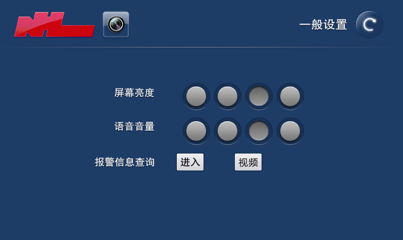
Общие настройкиВойтиВидео
Нажмите "Настройки пользователя", чтобы войти в соответствующее меню.
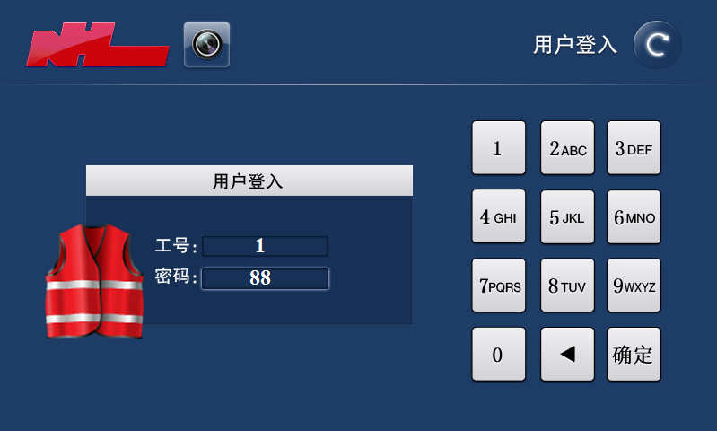
Яркость экранаГромкость звукаЗапрос информации о тревогеНомер работы:Пароль:Вход для пользователяВход для пользователяПодтвердить
Введите рабочий номер 1, пароль 88 и нажмите кнопку "ОК", чтобы войти в меню настроек пользователя. Здесь можно изменить код автомобиля, системное время, предупреждающую скорость, пароль водителя, язык системы, единицы измерения, настройки интерфейса и т. д.
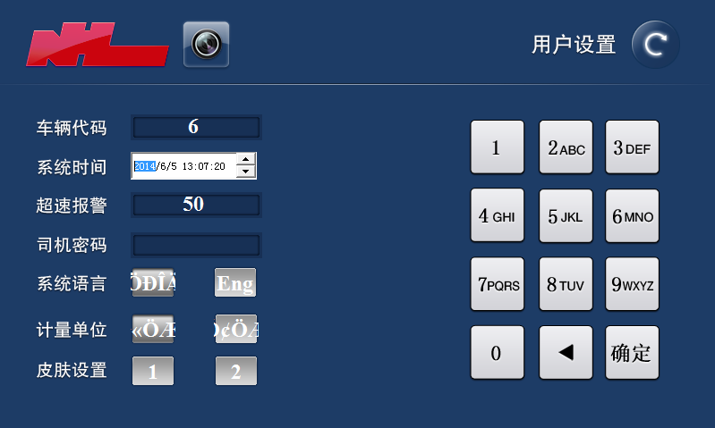
ПодтвердитьКод автомобиляСистемное времяПредупреждение о превышении скоростиПароль водителяСистемный языкЕдиницы измеренияНастройки интерфейсаНастройки пользователя
Нажмите "Заводские настройки", чтобы войти в меню завода-изготовителя.
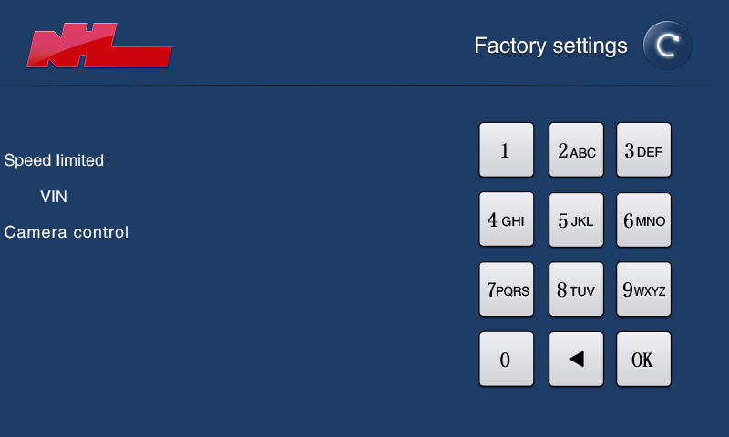
Введите рабочий номер xs, пароль 123 и нажмите кнопку "ОК". Здесь можно настроить ограничение скорости, код шасси, управление камерой, модель автомобиля.
2.7 Нажмите на информацию о неисправности, чтобы перейти на экран с информацией о неисправности. Вы можете отдельно нажать на ошибки двигателя, ошибки приводной системы и предупреждения для просмотра информации о каждой из неисправностей и предупреждающих сообщений. Нажмите на клавишу "выход", чтобы вернуться назад.
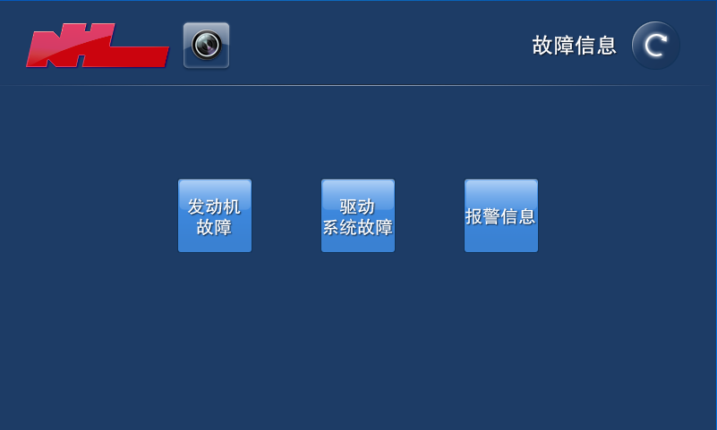
Информация о тревогеНеисправности приводной системыНеисправности двигателяИнформация о неисправностяхНеисправности двигателя
Нажмите на ошибку двигателя, чтобы увидеть экран ошибки двигателя. Нажмите на клавишу "выход", чтобы вернуться назад.
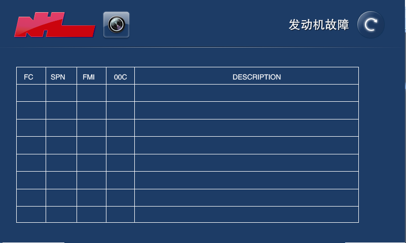
Нажмите на ошибку приводной системы, чтобы увидеть экран ошибки приводной системы. Нажмите на клавишу "выход", чтобы вернуться назад.
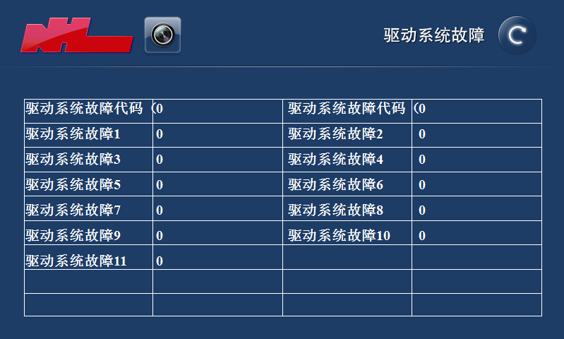
Коды неисправностей приводной системы(0Коды неисправностей приводной системы(0Неисправности приводной системы 10Неисправности приводной системы 20Неисправности приводной системы 30Неисправности приводной системы 40Неисправности приводной системы 50Неисправности приводной системы 60Неисправности приводной системы 70Неисправности приводной системы 80Неисправности приводной системы 90Неисправности приводной системы 100Неисправности приводной системы 110Неисправности приводной системы
Нажмите на предупреждение, чтобы увидеть экран предупреждения. Нажмите на клавишу "выход", чтобы вернуться назад.
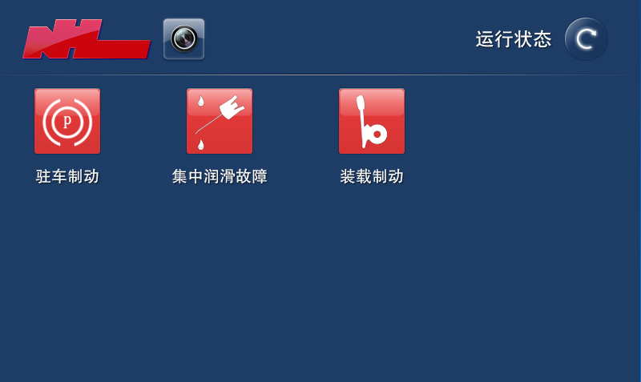
Рабочее состояниеТормоз при загрузкеНеисправность централизованной смазкиПарковочный тормоз
2.8 Нажмите кнопку помощи в правом верхнем углу, чтобы открыть соответствующий раздел. Здесь вы найдете руководства по эксплуатации, руководства по ремонту, каталоги запчастей. Нажмите кнопку выхода для возврата.
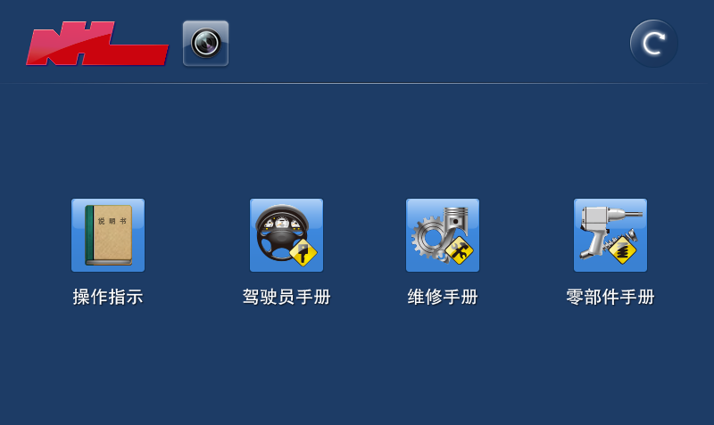
Инструкции по эксплуатацииРуководство водителяРуководство по ремонтуКаталог запчастей.
Предостережения:
1. После завершения производственных работ сначала выключите питание терминала, затем отключите автомобильный выключатель. При включении сначала подключите автомобильный выключатель, затем включите питание терминала.
2. У электрошара установлен источник питания UPS. При отключении питания для ремонта электрошара сначала выключите питание терминала, затем отключите резервное питание терминала (Примечание: необходимо отключить оба выключателя на UPS). После завершения ремонта электрошара и восстановления питания сначала включите UPS (Примечание: необходимо включить оба выключателя на UPS), а затем запустите терминал.
3. Терминал GPS-диспетчера автомобиля является высокоточным электронным устройством, и при мойке автомобиля следует избегать прямого попадания воды из высокодавленческой струи на терминал. Лучше использовать пластиковый пакет для защиты терминала во время мойки автомобиля.
3.17Централизованное управление смазкой 🔧 Смазка / вспомогательные в каталоге →
| Важные указания по безопасности Прочитайте все предупреждения и указания, приведенные в настоящей инструкции. Сохраните эти указания должным образом. |
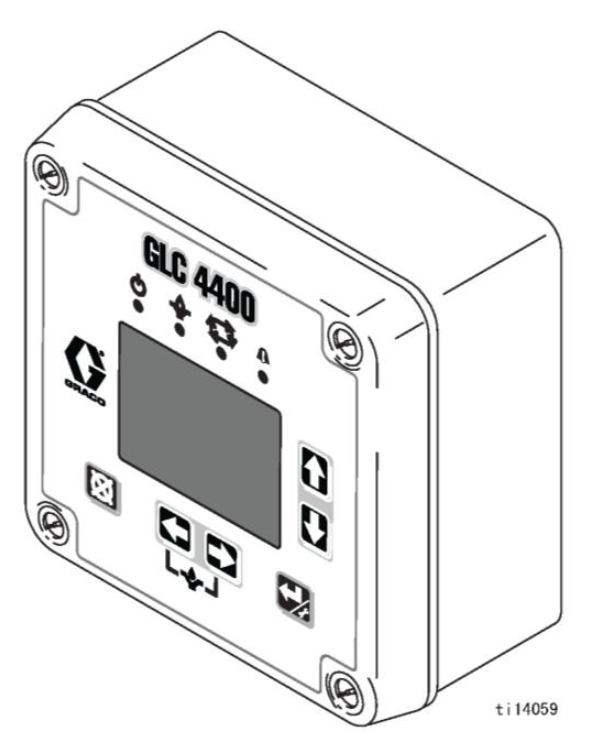
ПРЕДУПРЕЖДЕНИЕ
Ниже приведены предупреждения о настройке, использовании, заземлении, техническом обслуживании и ремонте данного оборудования. Восклицательные знаки указывают на общие предупреждения, а различные знаки опасности указывают на опасности, связанные с конкретными рабочими процедурами. Следуйте этим предупреждениям. В других определенных частях настоящей инструкции также содержатся дополнительные предупреждения, касающиеся конкретной продукции.
| ПРЕДУПРЕЖДЕНИЕ | |
| Опасность поражения электрическим током Данное оборудование должно быть соединено с массой. Ненадлежащее соединение с массой, неправильные настройки или неправильное использование системы могут привести к поражению электрическим током. •Перед отсоединением любых кабелей или ремонтом оборудования следует выключить главный выключатель и отключить источник питания. •Только можно подключить к источнику питания, который соединен с массой. •Все электропроводки должны выполняться квалифицированными электриками и соответствовать всем местным правилами и нормативам. | |
| Опасность неправильного использования оборудования Неправильное использование оборудования может привести к серьезным травмам или смертельному исходу. •Не используйте данное устройство при утомлении или после употребления наркотиков или алкоголя. •Не допускайте превышения максимального рабочего давления или номинального значения температуры системного компонента с наименьшим номинальным значением. Обратитесь к всем техническим данным, указанным в инструкции на оборудование. •Необходимо ежедневно проверять оборудование. Следует своевременно отремонтировать или заменить изношенные или поврежденные запасные части, при ремонте или замене только можно использовать оригинальные запасные части от производителя. •Не вносите никаких изменений или модификаций в оборудование. •Допускается использование оборудования только по указанному назначению. Для получения более подробной информации обратитесь к дилеру. •Держите шланги и кабели подальше от мест общего пользования, острых краев, движущихся частей и горячих поверхностей. •Не допускайте скручивания и перегиба шланга и протаскивания оборудования с использованием шланга. •Держите детей и животных подальше от рабочей зоны. •Соблюдайте все применимые правила техники безопасности. |
Обозначение компонентов
Клавиатура, экран и значки
Рис. 1
Режимы работы и функции
Стрелки направления
AКлавиши со стрелками вверх и вниз: регулировка контрастности.
BКлавиши со стрелками влево и вправо: регулировка яркости.
Одновременным нажатием клавиш со стрелками влево и вправо осуществляется ручной запуск рабочего цикла насоса.
Значки на клавиатуре
ПРИМЕЧАНИЕ: Описание клавиатуры приведено в разд. «Значки» на стр. 4.
CНажатием и удержанием клавиши «Ввод» нажатой в течение 3 секунд осуществляется доступ к настройкам.
DКлавиша «Сброс»: нажатием и удержанием клавиши нажатой в течение 3 секунд осуществляется сброс оборудования к нормальному выключенному состоянию насоса. Она также используется для сброс настроек сигнализации.
EФункциональные LED: см. стр. 4, ознакомьтесь с описание этих значков.
FЭкран
Примечание: подробную информацию смотрите в руководстве Guruike.
Обозначение значков
Следующие значки используются во всей инструкции и на экране в режиме работы/настройки контроллера. Если невозможно точное определение значения значков обратитесь к настоящей таблице.
| Индикатор включения питания*. LED под функциональным значком на экране светится зеленым цветом при включении питания контроллера смазки. | |
| Индикатор включения насоса*. LED под функциональным значком на экране светится желтым цветом при включении насоса, значок также отображается в левой верхней части экрана в режиме работы «Prelube» (см. стр. 37). | |
| Индикатор выключения насоса*. Значок отображается в левой верхней части экрана в режиме работы при выключении насоса (см. стр. 38). | |
| Срабатывание сигнализации. В случае возникновения аварийной ситуации, LED светится, значок также отображается в правой верхней части экрана для предупреждения (см. стр. 40). | |
| Регулировка яркости. Регулировка яркости подсветки экрана (ярче или темнее) производится с использованием клавиш со стрелками влево и вправо (см. стр. 20). | |
| Регулировка контрастности. Регулировка контрастности экрана производится с использованием клавиш со стрелками вверх и вниз (см. стр.20). | |
| Сигнализация низкого уровня жидкости. Значок отображается на экране, указывает на низкий уровень смазочной жидкости. | |
| Значок изменения. Когда этой значок отображается на экране в режиме настройки PIN, он указывает на возможность изменении PIN-кода или добавления нового PIN-кода. | |
| Значок блокировки. Это указывает на защиту экрана в режиме настройки паролем, доступ к данной функции требует ввода пользователем правильного PIN-кода. | |
| Активация режима настройки. Когда пользователь переходит в основной интерфейс «Настройки» в режиме настройки, значок отображается в правом верхнем углу экрана. | |
| Активация режима таймера. Когда появляется экран в режиме настройки таймера или в режиме работы, значок также отображается в правой части экрана (стр. 24, 27, 37 и 38). | |
| Активация режима настройки давления. Когда появляется экран в режиме настройки давления или в режиме работы, значок также отображается в правой части экрана (стр. 25 и 37). | |
| Проблема с режимом настройки давления. Значок отображается на экране для предупреждения, указывает на истечение допустимого времени до отключения выключателя. | |
| Активация режима расчета циклов*. LED под функциональным значком на экране светится желтым цветом. Когда появляется экран в режиме настройки циклов или в режиме работы, значок также отображается в правой части экрана (стр. 25 и 38). | |
| Активация расчета машинного времени. Когда появляется экран для расчета машинного времени, значок отображается в правой части экрана в режиме настройки или в режиме работы (стр. 27 и 39). | |
| Проблема с расчетом машинного времени. Когда значок отображается на экране для предупреждения, указывает на то, что не получено установочное значение от считчика машинного времени до истечения допустимого времени (стр. 39). Это может заставлять активировать функции сигнализации. | |
| Проблема с вводом переключателя цикла. Значок отображается в центре экрана для предупреждения, указывает на истечение допустимого времени до получения установочного значения активации переключателя цикла (см. разд. «Экран для предупреждения», на стр. 40). | |
| Тревога*. LED под функциональным значком на экране светится красным цветом. Этот значок также отображается на экране при вводе недействительного рабочего значения. |
* См. поле «E» (стр. 3), ознакомьтесь в расположением этих функциональных значков.
Устранение неисправности
| Описание | Вопросы | Метод устранения |
| Неисправность пускового электромагнитного клапана таймера | Не подается ток на электромагнитный клапан | Индикатор питания гаснет: таймер не подключен к источнику питания, проверить соединение и источник питания |
| Индикатор питания горит: проверить соединение электромагнитный клапан | ||
| Неисправность электромагнитного клапана | Замена электромагнитного клапана | |
| Неисправность таймера | Замена таймера | |
| Низкий уровень жидкости или другие проблемы | Повторная заправка бака | |
| Размыкание переключателя давления, неисправность системы | Неправильное присоединение проводов переключателя давления | Проверка правильности соединения |
| Неисправность переключателя давления | Замена переключателя давления | |
| Неисправность таймера | Замена таймера |
Настройка программы
| Описание | Режим работы Максимум/минимум и прочие |
| Настройка таймера, на стр. 24 | HH:MM:SS (00:00:01 - 99:59:59) |
| Настройка давления, на стр. 25 | HH:MM:SS (00:00:01 - 99:59:59) |
| Настройка завершения цикла, на стр. 25 | HH:MM:SS (00:00:01 - 99:59:59) |
| Выбор циклического режима, на стр. 26 | Цикл = 01-99 |
| Настройка включения насоса, на стр. 24 | Время, давление или цикл Время включения насоса: HH:MM:SS (00:00:01- 99:59:59) Цикл: 01- 99 (только для режима работы = циклического режима) |
| Настройка выключения насоса, на стр. 26 | Время, расчет или оба варианта Время выключения насоса: HH:MM:SS. (00:00:01- 99:59:59) Диапазон чисел: 01-9999 |
| Настройка включения питания, на стр. 28 | MM:SS (00:01 - 59:59) |
| Импульсный выход (насоса), на стр. 30 | Максимальное время выключения и время включения: SS (01-99) |
| Настройка PIN-кода, на стр. 31 | ВКЛ/ВЫКЛ 0000 - 9999 |
| Настройка экрана в режиме быстрой циркуляции, на стр. 33 | Цикл = 01-99 Время включения и время выключения: SS (01-99) Выполнение: Да/Нет |
| PRELUBE или включение питания, на стр. 37 | Да/Нет Задержка: Да/Нет Время: MM:SS (00:01- 59:59) |
3.18Автоматический контроллер огнетушителя 🔧 Вспомогательные системы в каталоге →
CHECKFIRE 210 дисплей автоматического огнетушителя
Индикатор низкого напряженияИндикаторы контрольных цепей №1 и №2Индикатор изоляцииИндикатор питанияЗащитная дверцаИндикатор выключенияИндикаторы "Задержка/Выключение/Тишина"Лампа индикации распыленияКнопка и индикатор "Зажгите при включении/Тревога"Визуальная герметизацияОбеспечивает связь и контроль других входных/выходных элементов, как показано на рисунке 3.17.1.
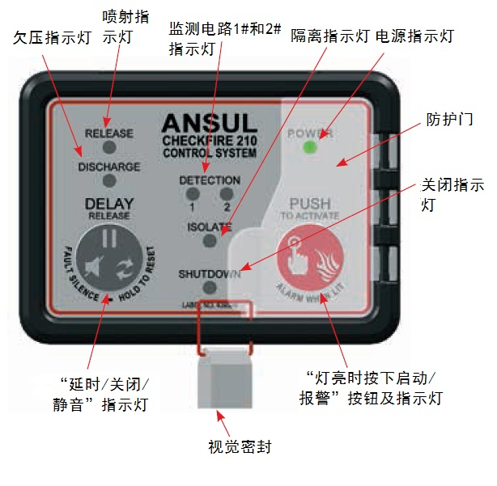
Рис. 3.17.1 – Панель автоматического пожаротушения в кабине водителя.
Кнопка "Задержка/Сброс/Без звука"
Эта кнопка используется для обработки следующих неисправностей и/или сигналов тревоги:
Отключение звуковой тревоги при неисправности
1. Когда сигнал неисправности длится два часа, нажатие на эту кнопку отключает зуммер. Индикатор неисправности продолжает мигать до устранения неисправности.
2. После активации распыления, нажмите кнопку, чтобы отключить звуковой сигнал.
3. Любая новая тревога или неисправность все равно будут сигнализироваться звуковым сигналом.
4. Если неисправность или тревога не обрабатываются в течение двух часов, звуковая
Перезапуск задержки
Для активации во время тревоги, она должна быть запущена после завершения задержки #1.
Ручной режим активации — первоначальный режим задержки пропускается, индикатор тревоги мигает четыре раза в секунду. После первой задержки продолжает мигать с той же частотой в течение тридцати секунд. Затем контроллер переходит в режим активации распыления, в этот момент индикатор тревоги и индикатор активации мигают один раз в десять секунд.
Режим активации с обратной связью от датчика давления — после активации этого режима индикатор тревоги мигает четыре раза в секунду в течение не менее тридцати секунд. Затем контроллер переходит в режим активации распыления, индикаторы тревоги и активации мигают один раз в десять секунд.
Неисправность в системе распыления (желтый):
Когда система распыления обнаруживает неисправность, желтый индикатор неисправности и зуммер работают с частотой один раз в десять секунд. После устранения неисправности режим контроллера возвращается к нормальному.
Комплексное распыление агента системой или получение контроллером сигнала от датчика давления также вызовет включение индикатора неисправности. Это указывает на то, что автоматическую пожарную систему нужно перезаполнить. Все индикаторы, вызванные этими неисправностями, можно сбросить только путем сброса контроллера.
Неисправность температурного мониторинга (желтый):
Когда обнаруживается неисправность в цепи мониторинга температуры, желтый индикатор и зуммер работают с частотой один раз в десять секунд. После устранения неисправности система автоматически возвращается к нормальному режиму.
Сброс системы зуммера:
Нажмите и удерживайте в течение 3 секунд, чтобы выполнить сброс системы.
Красная кнопка "Запустить/Тревога при включенном свете" и индикатор
Комбинированный индикатор и кнопка
Ручная активация - нажатие красной кнопки быстро активирует цепь распыления, и красный светодиод будет гореть 10 секунд.
Примечание: после нажатия красной кнопки задержка не активируется.
Через 10 секунд система переходит в режим "уже распылено".
Предварительное предупреждение (перед первой задержкой):
Когда имеется только предупреждающий сигнал или программируемый световой и звуковой сигнал предупреждения активируется первым, или в режиме изоляции активируется только предупреждение, светодиод становится красным и мигает один раз в секунду.
Задержка №1 (TD1)
Светодиод становится красным и мигает два раза в секунду до последних пяти секунд Задержки №1 (сопровождается частотой мигания зуммера).
В течение последних 5 секунд задержки #1, лампа мигает 4 раза в секунду в течение 4 секунд; в последнюю секунду Светодиод выключается (звуковая сигнализация также выключается).
Задержка №2 (TD2)
Cветодиод мигает четыре раза в секунду в течение 4 секунд; в последнюю секунду светодиод выключается (сигнал тревоги также выключается).
струйный запуск
Светодиод становится красным и горит 10 секунд (цепь распыления активируется) (звуковая тревога совпадает с тревого
Запущено струйным способом
Нет индикации светодиода (зуммер совпадает с другими светодиодами).
Показатель на передней панели дисплея:
Индикатор питания:
Внутренний статус питания - в нормальном режиме индикатор питания мигает зеленым светом каждые 3 секунды.
Внешний источник питания/двойной режим питания - в нормальном режиме индикатор питания постоянно горит зеленым.
Состояние сбоя питания:
1. Независимая внутренняя неисправность питания - индикатор питания становится желтым и мигает один раз каждые десять секунд с звуковым сигналом тревоги, что указывает на то, что питание от внутреннего источника питания упало до аномального уровня.
2. Независимая внешняя неисправность питания - индикатор питания становится желтым и мигает один раз каждые десять секунд с звуковым сигналом тревоги, что указывает на то, что питание от внешнего источника питания упало до аномального уровня.
3. Двойная неисправность внутреннего/внешнего питания - индикатор питания становится желтым и мигает один раз каждые 3 секунды, что указывает на то, что питание от внешнего источника питания упало до аномального уровня, и система перешла на внутренний источник питания.
4. Неисправность внутренней батареи - Желтый индикатор питания мигает каждые десять секунд в сопровождении звукового сигнала тревоги, указывая на исчерпание питания от внутренней батареи.
Частота работы звукового сигнала соответствует частоте соответствующего индикатора. См. следующее пояснение:
Тревога - Задержка 1 = два раза в секунду
Задержка 2 = четыре раза в секунду
Неисправность - раз в десять секунд
Потеря питания - раз в десять секунд
Обрыв цепи выпуска - каждую секунду четыре раза в течение тридцати секунд, затем переходит в режим мигания раз в десять секунд.
Низкий заряд батареи - раз в десять секунд.
Задержка:
Во время первого цикла задержки нажатие кнопки "Задержка" повторно запустит цикл задержки. Если уже был запущен второй цикл задержки, нажатие кнопки "Задержка" не будет иметь эффекта.
Кнопка задержки также может использоваться для диагностики неисправностей. При возникновении неисправности в системе нажмите кнопку "Задержка", и индикаторы будут мигать, образуя код неисправности.
При успешном нажатии кнопки "Задержка" звуковой сигнал и светодиоды будут работать одновременно три раза.
Если установлен реле сигнализации, при нажатии кнопки "Задержка" во время распыления средства можно отключить звуковой сигнал.
Сброс
Кнопка "Сброс" инициализирует контроллер. При ее нажатии все индикаторы и звуковой сигнал активируются. Кнопка "Сброс" не имеет эффекта, если неисправность не была устранена. При успешном нажатии кнопки "Сброс" звуковой сигнал и светодиоды будут работать одновременно три раза.
Неисправность возникает при падении питания до ненормального уровня.
Если неисправность не устранена или питание системы истощено, индикатор неисправности будет продолжать мигать желтым цветом.
Индикатор цепи распыления
В режиме неисправности этот индикатор мигает желтым цветом с интервалом в 10 секунд (соответствует частоте звукового сигнала тревоги).
После устранения неисправности индикатор возвращается в нормальное состояние (погашение).
Индикатор низкого давления
Этот индикатор загорается только при использовании обратной связи от давления на переключатель.
Когда давление на переключателе срабатывает, например, во время распыления, красный индикатор остается включенным.
После распыления красный индикатор мигает каждые 10 секунд.
Управляется внешним давленияющим выключателем и указывает на нехватку давления в приводной баллоне.
Индикатор мониторинговой цепи №1:
В режиме тревоги красный индикатор мигает.
При возникновении сбоя каждые 10 секунд сопровождается звуковым сигналом.
После устранения сбоя или тревоги индикатор возвращается в нормальное состояние (погашение).
Индикатор изоляции
Мигает каждые 30 секунд 2 раза, указывая, что система находится в режиме изоляции.
Этот режим используется во время технического обслуживания транспортного средства или оборудования, чтобы предотвратить случайное активирование.
Электронное ручное пусковое устройство
Предоставляется электронное пусковое устройство для системы пожаротушения, обычно расположенное в доступных местах, например, у выхода или коридора.
Электронный сигнал быстро передается на контроллер системы пожаротушения.
Диапазон температур: от -40°C до 85°C.
3.19Автоматическое взвешивание 🔧 Вспомогательные системы в каталоге →
I Основной интерфейс
Дисплей системы взвешивания предоставляет водителю и грузовику удобный интерактивный интерфейс, что позволяет водителю в реальном времени отслеживать состояние грузовика и помогает владельцам грузовиков следить за состоянием их техники. Главный экран системы взвешивания показан на рисунке ниже.
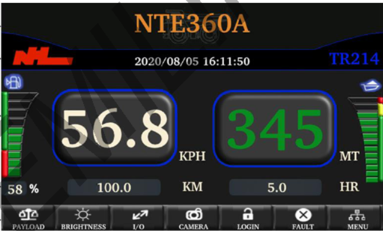
54321
Figure 1 Home Screen without Faults
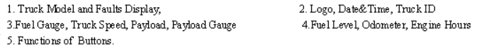
Рис. 19
1–5 обозначают разные области экрана, причем 3 показывает скорость движения и текущий вес груза. "MT" означает метрические тонны. Нажимая на кнопку PAYLOAD, вы попадаете на экран автоматического взвешивания (см. Рис. 20). Следуйте инструкциям на экране и кнопкам для выполнения соответствующих действий.
В системе взвешивания есть 5 страниц, показывающих реальные данные всех загрузочных циклов и информацию о перемещении. На нижней панели каждой страницы есть функциональные кнопки. Экран взвешивания, показанный на рисунке 20, содержит следующие функциональные кнопки (в порядке слева направо):
Кнопка BACK: вернуться к предыдущему экрану;
Кнопка FIRST: перейти на первую страницу;
Кнопка LAST: перейти на последнюю страницу;
Кнопка SHIFT: сбросить информацию о смене;
Кнопка PgUp: перейти на предыдущую страницу;
Кнопка PgDn: перейти на следующую страницу.
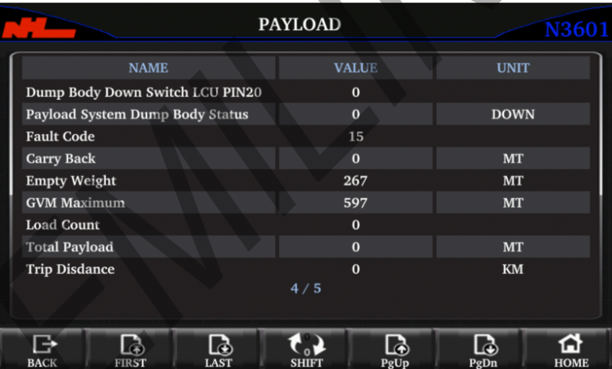
Рис. 20
II. Загрузка данных о взвешивании
При загрузке данных о взвешивании убедитесь, что у вас есть следующее:
1) Ноутбук с сетевым портом;
2) Сетевой кабель;
3) Обратитесь в службу поддержки NHL и запросите последнюю версию программного обеспечения NHL Service Tool. Распакуйте файл NHLServiceToolV102.zip (имя файла может немного отличаться). В распакованной папке найдите и нажмите на файл "Setup.msi". Когда начнется установка, появится приветственное окно. Нажмите "Далее".
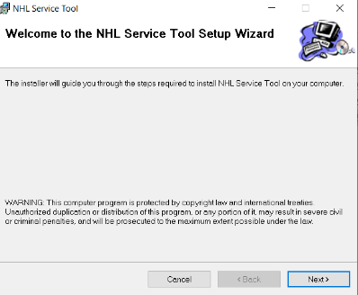
4) Установщик запросит путь для установки программы. Выберите значение по умолчанию и нажмите "Далее".
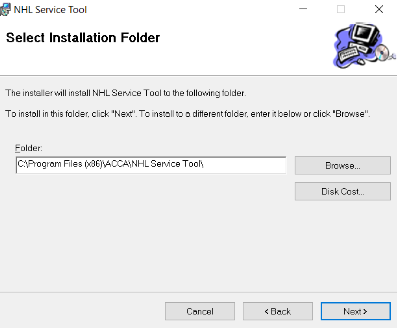
5) После успешной установки окно уведомит вас об этом, нажмите "Завершить", чтобы закрыть установщик.
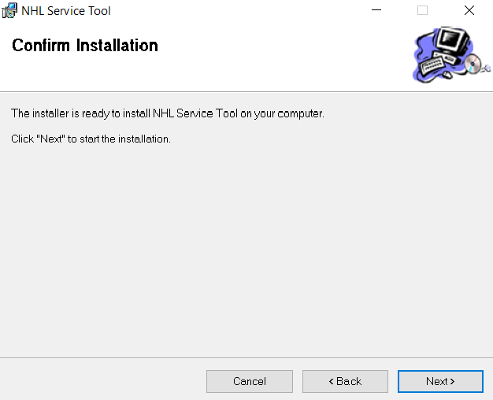
6) На рабочем столе появится ярлык "NHL Service Tool".
7) Подключите один конец сетевого кабеля к ноутбуку, а другой - к порту RJ45 на панели отладки транспортного средства, как ниже показано:
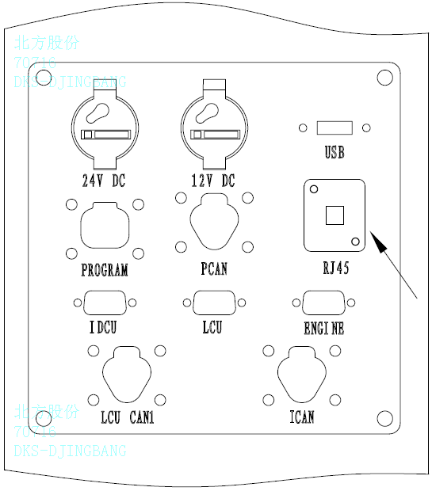
8) Включите дисплей, повернув ключ зажигания в кабине.
9) Дважды щелкните на ярлыке "NHL Service Tool" на вашем ноутбуке.
10) Как только программа "NHL Service Tool" запустится, вы увидите следующий интерфейс. В строке состояния программы внизу экрана должно быть написано "Подключено к дисплею", что означает, что кабель подключен правильно, и IP-адрес ноутбука настроен корректно.
11) Если в строке состояния это сообщение не отображается, перейдите в меню "Файл" и выберите пункт "Параметры подключения".
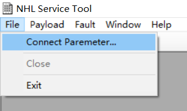
12) В открывшемся окне установите IP-адрес и нажмите кнопку "Подключить". Если все настроено правильно, появится сообщение о успешном подключении. Затем нажмите "Далее". Если сообщение о успешном подключении не появляется, проверьте сетевой порт, кабель и настройки IP-адреса, затем повторите этот шаг.
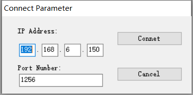
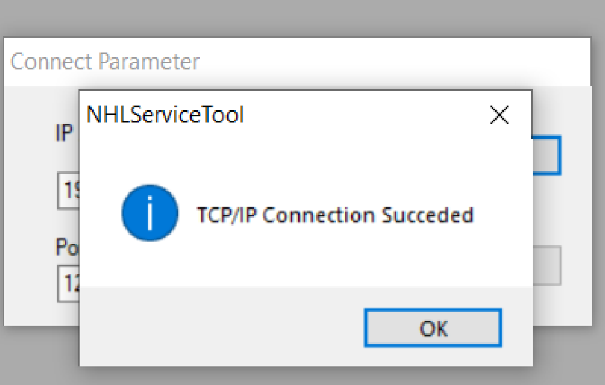
13) Вы можете выбрать следующие действия с данными веса с помощью выпадающего меню, показанного на рисунке ниже.
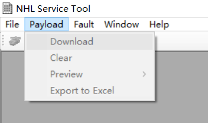
14) Нажмите Payload→Download, и как только в строке состояния появится сообщение "Передача данных о взвешивании завершена", окно с данными о взвешивании появится на экране. Если окно с данными не отображается или появляется какое-либо сообщение об ошибке, например "Повреждение диска базы данных", рекомендуется подождать несколько минут или перезагрузить монитор и попробовать загрузить данные снова.
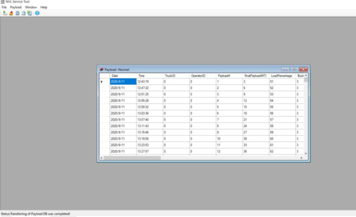
15) Как показано на рисунке ниже, нажмите "Payload→Export to Excel".
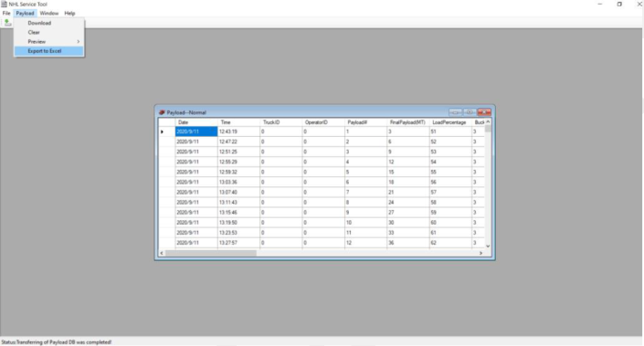
16) Затем во всплывающем окне программы введите имя файла для загрузки данных, например "Payload_2020_10_19", и выберите стандартную или указанную папку.
17) Подождите, пока файл Excel не появится.
18) После завершения загрузки рекомендуется очистить данные флэш-памяти дисплея, чтобы освободить место для последующего сохранения данных и ускорить следующую загрузку данных.
19) Введите пароль, предоставленный службой поддержки NHL. Если пароль неверный, появится всплывающее окно. Нажмите OK и заново введите правильный пароль.
20) После ввода правильного пароля вам будет предложено подтвердить ваше действие в следующем диалоговом окне. Если вы нажмете "Да", данные о полезной нагрузке на дисплее будут безвозвратно удалены. Если вы не хотите удалять данные о полезной нагрузке, нажмите "Нет".
21) Чтобы убедиться, что данные были удалены, снова нажмите Payload→Download, и на экране появится пустое окно с данными о полезной нагрузке, как показано на рисунке ниже.
3.20Круговое изображение
передняя панель:
Обладает функцией хранения видео, емкость карты памяти 256ГБ, при заполнении автоматически перезаписывается.
Для извлечения карты памяти откройте герметичную крышку SD-карты, как показано на рисунке выше.
Задняя панель:
AV1~4: коннекторы для кабелей камеры
DC8-36V: коннекторы для кабеля питания
AV OUT: выходной коннектор для видео
Часть IV Проверка перед эксплуатацией
Перед тем, как управлять карьерным самосвалом электрического колеса (после смены, ремонта или технического обслуживания), рекомендуется проверить карьерный самосвал электрического колеса для обеспечения безопасного и нормального вождения. Оператор/ обслуживающий персонал может начинать с лестницы в соответствии с требованиями чертежа и проверять карьерный самосвал электрического колеса следующим образом, чтобы убедиться, что при его вводе в эксплуатацию нет неисправности.
Примечание: карьерный самосвал электрического колеса должен быть припаркован в безопасном месте, осуществить стояночный тормоз и закрепить передние и задние колеса клиньями для обеспечения безопасности, а затем проверить.
1.Проверьте лестницу, чтобы убедиться, что она не повреждена, а соединение с рамой и платформой прочное и неповрежденное. После подтверждения, от лестницы до платформы карьерного самосвала электрического колеса, очистите и отрегулируйте зеркала заднего вида с двух сторон.
Используйте поручни при подъеме вверх и вниз по лестнице.
2.Проверьте площадь платформы карьерного самосвала электрического колеса, чтобы убедиться, что она не повреждена и не треснута. После уверенности войдите в кабину.
3.Включите все внешние огни, включая аварийные огни, чтобы убедиться, что свет нормальный и хорошо видимый, затем вернитесь к земле, чтобы продолжить проверку.
Примечание: при проверке проверьте моторное масло, гидравлическое масло, смазку, охлаждающую жидкость на наличие утечки топлива или потери, повреждения или разрыва деталей.
Рис. 4.1 - Типичная карта местоположения проверки
4.Убедитесь, что все фары и другие огни чисты и правильно освещены.
5.Проверьте левый воздушный фильтр и впускной коллектор двигателя на наличие повреждений или утечек.
Очистка воздушного фильтра: снимите замок пылесборника, поверните пылесборник и вылейте пыль в пылезащитном чехле, а затем установите его.
Внимание:
1.Для поддержания воздушного фильтра требуется лестница.
2.При снятии замка не непосредственно находится под воздушным фильтром.
6.Убедитесь, что сигнальная лампочка на левой передней стороне карьерного самосвала электрического колеса чиста и нормально горит.
7.Проверьте уровень масла в двигателе следующим образом:
a.Используйте лестницу с поручнями, чтобы осторожно подняться на ступеньки на щупе. Если у вас нет этого оборудования, вы можете использовать лестницу, чтобы подняться в нужное место.
b.Вытащите щуп из двигателя, протрите его чистой тканью и вставьте его в двигатель.
Примечание: если щуп двигателя имеет сальник, поверните сальник против часовой стрелки до момента его отпускания. Не забудьте повторно запечатать щуп после проверки уровня масла.
c.Повторно вытащите щуп и убедитесь, что уровень масла находится в безопасном нормальном диапазоне. Если нет, добавьте масло до нужного уровня масла, как требуется, перед тем, как запустить автомобиль.
d.Вновь вставьте щуп и осторожно вернитесь на землю.
8.Проверьте левую переднюю подвеску на наличие износа, повреждения или утечки, чтобы убедиться, что она находится на правильном уровне заполнения и надежно закреплена на корпусе автомобиля.
9.Проверьте левый передний тормоз и шкворень передней оси на наличие износа, повреждения, утечки или ослабления. Также проверьте зону уплотнения подшипника левого колеса и суппорт тормоза на наличие признаков утечки и повреждения.
10.Проверьте компоненты системы рулевого управления на передней левой части - монтажные штифты, стяжки, рулевые рычаги и цилиндры рулевого управления.
11.Проверьте левую переднюю шину и обод, шины на наличие глубоких царапин или повреждений, рисунок протектора покрышки на наличие износа, на равномерный износ на обеих сторонах, зажим для обода плотно ли установлен, потеряет ли гайка и есть ли подходящее давление в шинах.
Примечание: если имеется автоматическая система поддержания давления в шинах, убедитесь, что шланг не поврежден.
12.Проверьте гидравлический бак на левой части на наличие повреждения или утечки и проверьте объем масла через гайку окна.
13.Проверьте гидравлические компоненты и другие компоненты рядом с гидравлическим баком на левой стороне на наличие повреждений или утечек.
14.Проверьте левый подъемный цилиндр на наличие утечки, износа или повреждения, изношен или поврежден. Убедитесь, что подъемный цилиндр надежно закреплен и правильно смазан, и что труба не повреждена.
15. Проверьте каждый узел шины и обода на левой задней части, рисунок протектора покрышки на наличие износа, на равномерный износ на обеих сторонах, зажим для обода плотно ли установлен, потеряет ли гайка и есть ли подходящее давление в шинах. Убедитесь, что каменный обработчик свободен в движении, не сильно изношен или не поврежден.
Примечание: если имеется автоматическая система поддержания давления в шинах, убедитесь, что шланг не поврежден.
16.Проверьте внешний вид левого электрического колеса на наличие повреждения или утечки.
17.Проверьте шарнирный штифт на левой стороне кузова на наличие повреждений, износа, правильную установку и правильную смазку.
18.Проверьте левую заднюю подвеску на наличие износа, повреждений и утечек, убедитесь, что она находится на правильной высоте наполнения, что верхняя и нижняя точки соединения надежно закреплены, что смазка хороша и что пылезащитное кольцо в норме.
19.Убедитесь, что ночные фонари, огни предупреждения (рулевое управление), торможения и заднего хода на хвостовой части самосвала работают правильно и хорошо видны.
20.Проверьте левую заднюю подвеску на наличие износа, повреждений и утечек, убедитесь, что она находится на надлежащей высоте и что верхние и нижние точки соединения надежно и правильно смазаны.
21.Убедитесь, что все огни остановки, предупреждения (рулевое управление), тормоза и заднего хода грузовика работают правильно и хорошо видны.
22.Откройте дверь доступа к оси и убедитесь, что компоненты и фитинги хороши, и дверь закрыта.
Если дверь доступа к осевой коробке не может быть закрыта, в коробку будет подаваться воздух. Работа в этих условиях приведет к повреждению компонентов электрической тяговой системы.
23.Проверьте правую заднюю подвеску на наличие износа, повреждений и утечек, убедитесь, что она находится на надлежащей высоте и что верхние и нижние точки соединения надежно и правильно смазаны.
24.Проверьте шарнирный штифт правой стороны ковша на наличие повреждений, износа, правильной установки и надлежащей смазки.
25.Проверьте внешний вид правого электрического колеса на наличие повреждения или утечки.
Примечание: Если имеется автоматическая система поддержания давления в шинах, убедитесь, что шланг не поврежден.
26.Убедитесь, что правый задний габаритный огонь горит и хорошо видно.
27.Проверьте площадь кожуха на правой стороне электрического колеса на наличие утечки тормозной жидкости. Убедитесь, что крышка крепится к колесу и что крышка закреплена.
28.Проверьте каждую правую заднюю шину и обод, шины на наличие глубоких следов или дефектов, на подходящий рисунок протектора, на герметичность установки, потеряет ли гайка и есть ли подходящее давление в шинах. Если оснащен эжектором горных пород, проверьте его на плавное перемещение, на наличие износа или повреждения.
29.Если грузовик имеет пневматическую систему, проверьте на главный резервуар подачи газа и трубопроводы и слейте воду, используя дренажное отверстие, расположенное на передней части бака. Если грузовик оснащен автоматическим выхлопным устройством, проверьте его на наличие повреждений и правильную работу.
30.Проверьте все гидравлические, пневматические и другие компоненты системы на наличие повреждений или утечек.
31.Проверьте головной обтекатель задней оси и его принадлежности на наличие повреждений или износа, правильную установку и правильную смазку.
32.Проверьте нижнюю часть автомобиля на наличие повреждений и утечек, вязки узлов или разрыв шланга, чтобы он оставил движущиеся части. Убедитесь, что все детали и узлы установлены правильно и находятся в хорошем состоянии.
33.Убедитесь, что лифтовый цилиндр на правой стороне на наличие утечки, износа или повреждения, подъемный цилиндр надежно закреплен и правильно смазан, и что трубка не повреждена.
34.Проверьте гидравлический насос, привод насоса и соответствующий шланг на наличие утечек, повреждений или износа.
35.Проверьте корпус вентилятора на наличие повреждений и проверьте наличие повреждений, если оснащены фильтром для охлаждающего воздуха.
36.Проверьте топливный бак на правой стороне на наличие повреждений или утечки, проверьте объем масла с помощью окна и использование ручного выключателя давления.
37.Проверьте гидравлические и другие детали рядом с правильным топливным баком на правой стороне на наличие повреждения или утечки.
38.Проверьте правую переднюю шину и обод, шины на наличие глубоких следов или дефектов, на подходящий рисунок протектора, на герметичность установки, потеряет ли гайка и есть ли подходящее давление в шинах.
Примечание: Если имеется автоматическая система поддержания давления в шинах, убедитесь, что шланг не поврежден.
39.Проверьте компоненты системы рулевого управления на передней левой части - монтажные штифты, стяжки, рулевые рычаги и цилиндры рулевого управления.
40.Проверьте правую переднюю подвеску на наличие износа, повреждения или утечки, убедитесь, что она прочно соединена с кузовом автомобиля.
41.Проверьте правый передний тормоз и шкворень передней оси на наличие износа, повреждения, утечки или ослабления. Также проверьте зону уплотнения подшипника левого колеса и суппорт тормоза на наличие признаков утечки и повреждения.
42.Проверьте нижнюю часть автомобиля на наличие повреждений и утечек, вязки узлов или разрыв шланга, чтобы он оставил движущиеся части. Убедитесь, что все детали и узлы установлены правильно и находятся в хорошем состоянии.
Примечание: манометр уровня масла установлен на правой стороне двигателя. Перед переходом к следующему шагу проверьте уровень масла с помощью щупа для моторного масла.
43.Убедитесь, что ремень привода двигателя, вентилятор, крышка вентилятора и защитные принадлежности не повреждены.
44.Проверьте воздушного фильтра на правой части и воздушную линию двигателя на наличие повреждения или утечки.
Если самоочищающийся эвакуатор установлен на дне бака воздушного фильтра, сжимайте каждую деталь, чтобы обеспечить правильную работу, и слейте пыль, накопленную на дне бака.
Если самоочищающийся эвакуатор не установлен, снимите замок бака, поверните бака, чтобы удалить пыль, а затем установите в баке.
Примечание:
1.Для поддержания воздушного фильтра требуется лестница.
2.Не вставайте прямо под карточку при извлечении карты.
45.Убедитесь, что правая передняя сигнальная лампа чистая и яркая.
46.Проверьте площадь радиатора и решетки на наличие мусора и повреждений. Проверьте уровень охлаждающей жидкости двигателя в радиаторе через визирное окно.
47.Поднимитесь по лестнице на верхний этаж автомобиля, чтобы убедиться, что коробка передач и блок управления не повреждены, дверь закрыта, и вентиляционные отверстия без гравий.
ПРИМЕЧАНИЕ: Если существует необходимость, определите работоспособность пускового органа автоматической системы пожаротушения.
48. Проверьте уровень охлаждающей жидкости в радиаторе двигателя через смотровое окошко.
Внимание
Будьте особенно осторожны при отвинчивании или снятии крышки радиатора и подождите, пока двигатель охлаждается. Внезапный сброс давления может вызвать нагрев хладагента из системы охлаждения, что может привести к травме.
49. Проверьте энергоаккумулятор тормозной системы и соответствующие компоненты на наличие утечек, повреждений.
50.Проверьте уровень смазочного масла в основном баке системы автоматической смазки, чтобы убедиться, что масло достаточно для поддержания одного периода работы.
51.Проверьте триггер системы автоматического пожаротушения, а также проверьте систему на наличие износа или повреждения и сообщите о любых проблемах.
Не допускается запуск двигателя при низком уровне масла в двигателе.
52.Вернитесь в кабину и выключите все выключатели.
Часть V Проверка запуска двигателя
Рекомендуется проверять грузовик перед запуском двигателя, процесс как описан в разделе IV «Проверка перед эксплуатацией». После завершения работ проверки перед операцией проверка только ограничивается в кабине.
1.Включите главный выключатель (расположен на наружной правой передней части кабины) и вернитесь на сиденье оператора.
2.Проверьте:
a.Работает ли сигнализатор нормально.
b.Выключатель запуска находится ли в левом положении.
c.Находится ли переключатель стояночного тормоза в нейтральном положении и загорается ли индикатор стояночного тормоза.
d.Нажимается ли выключатель тормоза загрузки и загорается ли индикатор тормоза загрузки.
e.Рычаг переключения передач находится ли в положении «N» (нейтральном).
f.Проверьте, находится ли кнопка аварийного тормоза в положении всплывающего окна.
3.Нажмите переключатель для проверки света или нажмите кнопку тестирования, и все индикаторы должны загореться.
4.Убедитесь, что все автоматические выключатели на распределительной плате находятся в рабочем положении (нажмите).
5.Напомните близким людям перед запуском грузовика, убедившись, что они знают движения грузовика. Дайте гудок, дайте гудок снова через несколько секунд, повторите три раза, и запускать грузовик.
6.Поверните выключатель остановки/пуска двигателя в исходное положение и удерживайте его до запуска двигателя. Отпустите выключатель сразу после запуска, он автоматически вернется в рабочее положение, когда давление масла в двигателе повысится, сигнализация остановится.
Примечание:
1. Когда двигатель запускается холодно, он будет работать на холостом ходу от 1000 до 1200 об/мин, что улучшит сгорание топлива в холодной камере сгорания. Когда температура двигателя повышается, его скорость плавно падает до нормального уровня холостого хода.
2. Когда двигатель работает холодно, двигатель не следует ускорять. Перед тем, как ускоряться или двигаться, дайте ему работать на холостом ходу до тех пор, пока температура воды не станет горячей (мобильность отображается на приборе). Если слишком холодно для запуска или информация о запуске двигателя в холодную погоду, прочитайте соответствующие инструкции двигателя.
3. Для грузовика электрического запуска рекомендуется запускать двигатель не более 30 секунд. Через 5 минут подождите, пока температура двигателя не упадет, и приступать к следующему запуску.
4. Когда двигатель запущен, напряжение батареи недостаточное. Необходимо подключить внешнее устройство для зарядки (зарядное устройство и т. д.).
7.После запуска двигателя проверьте, что все датчики и индикаторы нормальные.
8.Проверяйте двери и окна на наличие повреждений и чистоты.
9.Отрегулируйте сиденье оператора, чтобы обеспечить безопасное и комфортное вождение.
Примечание: методы регулировки сиденья доступны у поставщика или производителя сиденья. Могут также быть получены от соответствующего персонала шахты.
10.Отрегулируйте все вспомогательные очки для достижения максимального поля обзора.
11.Проверьте, нормально ли работает стеклоочиститель, и стиральная машина может ли обеспечить очищающий раствор.
12.Пристегивайте ремень безопасности. Когда грузовик работает, все в кабине должны сидеть и пристегивать ремень безопасности.
13.После того, как охлаждающая жидкость двигателя, давление масла и напряжение батареи достигнут нормального диапазона, запустите грузовик.
Часть VI Эксплуатация
Введение
Безопасность работы грузовика NHL является ответственностью оператора. Оператор с хорошей осведомленностью по безопасности может лучше управлять грузовиком и менее подвержен несчастным случаям. Не забывайте безопасно управлять автомобилем, чтобы избежать несчастных случаев.
Перед эксплуатацией грузовика вы должны понимать и осваивать все основные правила безопасности шахты и ключевые моменты этого руководства.
Запуск двигателя
Процедура запуска двигателя подробно описана в разделе V «Запуск двигателя». Перед запуском двигателя рекомендуется проверить грузовик (см. Раздел IV «Проверка перед эксплуатацией»).
Вперед
Нормальными шагами для продвижения вперед автомобиля являются:
1.Подождите, пока не загорится индикатор давления ветра.
2.Проверьте зону вокруг автомобиля, чтобы убедиться, что нет людей или препятствий.
3.Переместите рычаг переключения передач в положение F (вперед).
4.Дайте гудок и предупредить людей вокруг грузовика.
5.Выпуск:
a)Стояночный тормоз
b)Тормоз загрузки
c)Аварийный тормоз (если выполнен)
d)Педаль тормоза
6.Нажмите педаль дроссельной заслонки и используйте педаль, чтобы отрегулировать грузовика.
Примечание: система рулевого управления, система замедления мощности и система торможения должны быть проверены до того, как грузовик начнет нормальную работу. Если какая-либо из этих систем работает ненормально, остановите грузовик и сообщите соответствующему специалисту.
Примечание: чтобы замедлить работу, особенно в некоторых зонах с ограниченным доступом, может потребоваться использование педали тормоза, чтобы помочь управлять скоростью грузовика.
Назад
Управлять грузовиком назад следующим образом:
1.Подождите, пока не загорится индикатор давления ветра.
2.Убедитесь, что за транспортным средством нет людей или препятствий. Запомните, что вид сзади грузовика ограничен, особенно на задней стороне кузова, поэтому обратите особое внимание на то, чтобы по направлению движения место было пустым.
3.Переместите рычаг селектора в положение R (задний ход) , фары заднего хода и сирены будут автоматически активированы, и двигатель будет работать при низком холостом ходу.
4.Дайте гудок и предупредить людей вокруг грузовика.
5.Выпуск:
a)Стояночный тормоз
b)Тормоз загрузки
c)Аварийный тормоз (если выполнен)
d)Педаль тормоза
6.Нажмите педаль дроссельной заслонки и используйте педаль, чтобы отрегулировать грузовика, по требованиям управлять грузовиком.
Замедление мощности
Чтобы замедлить грузовик или при спуске вниз управлять скоростью грузовика, отпустите педаль дроссельной заслонки и нажать на педаль замедления. Роль замедления пропорционально степени нажатия педали.
Примечание: замедление мощности может контролировать скорость грузовика, замедлять грузовик до 5 миль/ч (8 км/ч) или меньше, а затем использовать педаль рабочего тормоза, чтобы плавно останавливать грузовик.
При подъеме по склону вверх, когда карьерный самосвал идет на вершину склона, тормозная педаль предварительно запущена, а затем нажмите педаль тормоза, если необходимо, чтобы поддерживать скорость при спуске. Это максимизирует эффективность системы замедления и уменьшает задержку между действием педалирования и началом замедления.
Грузовик NHL использует систему замедления мощности в качестве основного метода замедления для контроля скорости грузовика при спуске. Когда система замедления мощности активируется, электрическое колесо действует как генератор, преобразуя кинетическую энергию грузовика в электрическую энергию и превращая его в тепловую энергию через резисторную сетку с воздушным охлаждением.
Примечание: помните, что система замедления мощности до максимальной и постоянной в определенном диапазоне скоростей. Этот диапазон будет варьироваться в зависимости от веса грузовика, тяговой системы и рабочего градиента.
Замедление мощности может эффективно контролировать скорость грузовика в определенном диапазоне. В этом конкретном диапазоне скоростей эффект торможения увеличивается с увеличением скорости. Максимальная скорость вышеупомянутого замедления мощности составляет 13 миль/ч (21 км/ч), когда этот максимум будет превышен, замедление мощности будет уменьшаться по мере того, как скорость продолжает увеличиваться.
Тормоз
Нормальный тормоз
При нормальной работе полностью остановите грузовик следующим образом:
1.Отпустите педаль акселератора.
2.Нажмите на педаль замедлителя, чтобы замедлить грузовой автомобиль, совершите торможение с использованием педали тормоза с механическим приводом при скорости движения грузового автомобиля ниже 0,8 км/ч.
Примечание: Функция комбинированного торможения позволяет полностью остановить грузовой автомобиль при скорости движения ниже 0,8 км/ч. В это время, когда педаль замедления мощности нажата, система привода автоматически запускает рабочий тормоз заднего колеса, чтобы грузовик плавно остановиться.
3.Регулирование тормозного усилия осуществляется путем регулирования угла нажатия педали тормоза при использовании педали тормоза.
Не используйте тормозную систему с механическим приводом при нормальной работе ТС. Тормозную систему с механическим приводом можно использовать только во время экстренного торможения. Использование тормозной системы с механическим приводом при нормальной работе ТС может вызвать перегрев трущихся компонентов, привести к снижению эффективности торможения и повреждениям компонентов.
Аварийный тормоз
Предупреждение
Если для аварийного останова используется фрикционная тормозная система, не пытайтесь переместить грузовик до тех пор, пока не будет выявлена и не устранена причина аварийной ситуации и фрикционная тормозная система не будет проверена и не будет проведено испытание.
1.Если система замедления мощности не работает, систему фрикционного тормоза следует использовать немедленно, чтобы остановить грузовик и обеспечить безопасность. Степень тормозной способности контролируется путем контроля степени нажатия педали тормоза.
Предупреждение
Не используйте педаль тормоза, если не будет аварийная ситуация, так как это приведет к чрезмерному нагреву, и эффект тормоза будет уменьшен. Когда требуется аварийнного тормоза, как правило, необходимо как можно скорее нажать педаль тормоза, чтобы безопасно остановить грузовик и, насколько это возможно, припарковаться в безопасном месте. Если система замедления мощности не работает, не пытайтесь использовать только систему фрикционного тормоза, чтобы продолжить работу с грузовиком.
2.Если нормальный тормоз (управление педалью) не заметен, или если индикатор указывает на проблему с тормозной системой, используйте все тормозные и тормозные контроллеры грузовика (включая контроллеры тормоза загрузки и аварийного тормоза), чтобы безопасно припарковать грузовик.
Предупреждение
Не наступайте на педаль тормоза во время нормальной работы грузовика, так как это может повредить компоненты тормозной системы.
Парковка
Кратковременная парковка (оператор остается в кабине)
Примечание: эта процедура используется только для кратковременной парковки во время работы двигателя. Если грузовик должен быть припаркован в течение длительного периода времени, выключить двигатель или оператор покидает кабину, следует соблюдать процедуру длительной парковки.
Краткосрочная парковка по следующей процедуре:
1.Используйте системы замедления мощности и тормозную систему для полной остановки грузовика, как описано в разделе «Тормоз». Полностью нажмите педаль тормоза, когда автомобиль остановлен.
2.Переключите переключатель передач в положение N (нейтральное положение).
3.Нажмите кнопку тормоза загрузки.
4.Отпустите педаль тормоза, грузовик не будет двигаться.
Предупреждение
Во время кратковременной парковки оператор не должен выходить из кабины.
5.При повторном запуске грузовика выполните процедуры, выделенные в части "Вперед".
Примечание: не используйте стояночный тормоз в течение короткого времени (загрузка, разгрузка и т. д.) во время работы двигателя, а оператор находится в кабине. Если грузовик оставлен без присмотра или двигатель выключен, обязательно следуйте процедуре длительной парковки.
Долгосрочная парковка - безопасное место (кабина оставлена без присмотра)
Грузовик можно долго припарковать в безопасном месте следующим образом:
Примечание:
Безопасное положение определяется следующим образом:
(1)Припаркуйте переднее или заднее колесо грузовика в канаве;
(2)Когда грузовик припаркован на рампе, клинья располагаются впереди и позади колес, чтобы предотвратить скольжение.
Если грузовик находится в безопасном месте, как описано выше, грузовик не будет двигаться, даже если тормоз отпущен.
Примечание: эти процедуры должны соблюдаться, когда грузовик оставлен без присмотра, двигатель выключен или сбой системы фрикционного тормоза.
1.Используйте системы замедления мощности и тормозную систему для полной остановки грузовика, как описано в разделе «Тормоз». Полностью нажмите педаль тормоза, когда автомобиль остановлен.
2.Переключите переключатель передач в положение N (нейтральное положение).
3.Нажмите кнопку тормоза загрузки, выпустите педаль тормоза.
4.Переключите переключатель стояночного тормоза в положение реализации и удерживайте его, пока индикатор стояночного тормоза не загорится (около двух секунд), прежде чем перемещать переключатель стояночного тормоза в нейтральное положение.
Предупреждение
Не оставляйте грузовик только при выполнении тормоза загрузки. Грузовик обычно припаркован в безопасном месте, а стояночный тормоз выполняется перед выходом из грузовика.
5.Отпустите педаль рабочего тормоза, и грузовик должен оставаться неподвижным.
6.Выполните шаги, указанные в разделе «Отключение двигателя», чтобы выключить двигатель.
7.Вы можете уйти только после того, как вы определили, что грузовик безопасно припаркован и не будет внезапно двигаться.
8.Если возможно, используйте клинья для покрытия грузовика.
Примечание: обычно необходимо припарковать грузовик в месте, которое не препятствует прохождению других транспортных средств. Если по какой-то причине грузовик должен быть припаркован на транспортной полосе, рекомендуется использовать сигнал мигания или другой предупреждающий знак.
Загрузка
Несмотря на то, что оператору не надо фактически загружать грузовик, но оператор должен понять технику эффективного управления загрузкой. Важными этапами процесса загрузки являются следующие:
(1)Аккуратно войдите в зону загрузки. Припаркуйте грузовик в зоне погрузки и обратите внимание на то, что другие грузовики подальше от этой области.
(2)Наблюдайте всю площадь. Обратите внимание на расположение кабелей, мостов и экскаваторов или другого загрузочного оборудования и обратите внимание на другие важные детали.
Опасно
Никогда не пропускайте незащищенные кабели
(3)Припаркуйте грузовик в безопасном месте держите безопасное расстояние от груза, который должен быть загружен.
(4)Когда приказ выдается и готов войти в место загрузки груза, после его подготовки сигнал должен быть отправлен лицу, назначающему место стоянки груза или оператору экскаватора.
(5)После того, как остановитесь в правильном положении, используйте замедление мощности и/или педаль тормоза для остановки.
Предупреждение
Не используйте стояночный тормоз для остановки грузовика: во время погрузки. Падение загруженного груза может привести к перемещению грузовика, что приведет к повреждению стояночного тормоза грузовика. Не паркуйте автомобиль в стеке во время процесса загрузки, так как это повредит шину, раму или другие детали.
(6)Реализация тормозов загрузки.
(7)Переместите кнопку в положение N (среднее).
(8)Отпустите педаль тормоза, грузовик остается неподвижным.
(9)Оператор должен оставаться в кабине грузовика на протяжении всего процесса загрузки.
(10)Как только погрузка будет завершена и указывается продолжение,, подготовьтесь к выходу.
(11)Убедитесь, что в зоне загрузки зоны движения нет людей или препятствий, и никто не находится на грузовике или вокруг него.
(12)Переключите переключатель в положение F (вперед).
(13)Нажмите на гудок, чтобы предупредить грузовик, что он будет запускаться.
(14)Отпустите кнопку тормозного тормоза, нажмите на педаль дроссельной заслонки и двигайтесь вперед.
(15)Выполните правильные шаги по управлению грузовиком.
Перевозка
Обратите внимание на процесс перевозку:
1.Перевозить по направлению дороги. Держитесь на достаточном расстоянии от защиты дороги и припарковаться на стороне назначенной дороги.
2.Соблюдайте ограниченную скорость шахты и приспосабливаться к суровым условиям движения.
Предупреждение
Неправильная индикация скорости (нулевая или значительно неправильная скорость автомобиля) указывает на возможность повреждения компонентов автомобиля, особенно повреждение электрического колеса. Если это произойдет, припаркуйте автомобиль в безопасном месте и попросите о помощи. Не перемещайте автомобиль, пока проблема не будет идентифицирована и не будет устранена.
3.Нормальная остановка замедления и контроль скорости на склоне контролируются системой замедления мощности. На вершине склона педаль замедления мощности предварительно нажата для управления скоростью. Обычно рекомендуется, что скорость полностью загруженного транспортного средства не превышала 15 mph (24km/h) при спуске. Следуйте ограничениям скорости, указанным шахтой.
Примечание: способность замедления напрямую связана со скоростью карьерного самосвала. Когда скорость составляет 3-13 mph (5-21 km/hr) способность к замедлению поддерживается максимум и может быть постоянной. Когда эта скорость превышена, способность замедления уменьшается по мере увеличения скорости. Чтобы эффективно обеспечить эффект замедления мощности, необходимо контролировать скорость карьерного самосвала на протяжении всей операции. То есть, если указать рабочий диапазон или дать ограниченную скорость, предельное значение будет отличаться от веса грузовика, скорости, электрической силовой установки и склона. Если этот предел будет превышен, скорость самосвала не будет эффективно контролироваться без торможения трением.
Предупреждение
Торможение трением не используется для торможения при нормальной эксплуатации автомобиля. Оно используется только для малой скорости парковки, кратковременной парковки и аварийных ситуаций (с любой скоростью). Использование торможения трением во время нормальной работы транспортного средства приведет к перегреву и уменьшению тормозной способности, поэтому его следует использовать в чрезвычайной ситуации.
4.На автомобилях, оборудованных системой замедления сверхскоростного движения автомобиля, не используйте систему замедления сверхскоростного движения автомобиля для управления скоростью. Эта система используется только тогда, когда автомобиль превышает предварительно установленную скорость, а сила тяги тяговой системы преобразуется в максимальное сопротивление. Эта система используется только как резерва и обычно не используется.
5.Поддерживайте безопасное расстояние вождения. Когда аварийная остановка переднего автомобиля, убедитесь, что имеется достаточное расстояние для безопасной парковки, с учетом условиями дороги и погодными условиями.
6.При прохождении на обозначенных участках в последовательности держите расстояние между собой во время движения, чтобы обеспечить безопасное вождение.
7.При приближении к пересечениям и месту с крутым поворотом скорость должна быть снижена заранее, чтобы обеспечить безопасное вождение.
8.При движении по наклонной дороге будьте особенно осторожны, чтобы обеспечить устойчивость рулевого управления.
9.Если автомобиль неожиданно не работает (например, двигатель, электрическая система), обеспечьте достаточные возможности рулевого управления и торможения для парковки автомобиля в безопасном месте.
Потеря рулевого управления
В случае неисправности в двигателе или насосе, аккумулятор обеспечивает дополнение давления к вспомогательной системе рулевого управления. Помогает управлять автомобилем во время торможения и не используется для продолжения эксплуатации транспортного средства.
Кроме того, в случае сбоя гидравлической системы, аккумулятор обеспечивает давление для системы, чтобы гарантировать, что транспортное средство припарковано в безопасном месте.
Если есть проблема с рулевым управлением:
1.Сразу же через небольшой поворот, убедитесь, что аккумулятор оказывает давление на вспомогательную систему рулевого управления. Припаркуйте автомобиль, если условия допускаются.
Предупреждение
Помните, поворот рулевого управления с помощью вспомогательной системы переднего колеса медленнее поворота нормального рулевого управления.
2.На автомобиле, оснащенном системой ручного пополнения, включите ручной переключатель и запустите систему.
3.После того, как автомобиль безопасно остановился, немедленно выключить выключатель системы ручного пополнения.
Разгрузка
Разгрузите следующим образом:
1.Осторожно войдите в зону разгрузки
Предупреждение
Убедитесь, что в зоне разгрузки нет других транспортных средств, людей или препятствий.
2.Двигать автомобиль задним ходом на точку разгрузки, обеспечить безопасность и устойчивость транспортного средства, и автомобиль припаркован.
Примечание:
(1)Разгрузить материалы в соответствии с инструкциями персонала.
(2)При разгрузке на наклонной дорожной поверхности будьте особенно осторожны, поддержать стабилизацию автомобиля во время подъема кузова и скольжения материала. Не поднимайте кузов, если транспортное средство не может быть стабилизировано на наклонной дорожной поверхности.
3.Реализация тормозов загрузки.
4.Положение шестерни остается на положении N (нейтральном).
5.Убедитесь, что в зоне разгрузки нет людей. Убедитесь, что нет препятствий, препятствующих подъему кузова, в противном случае это приведет к ненужному повреждению кузова и связанных с ним деталей.
6.Когда будет определено, что можно безопасно разрядить материалы:
a.Переместите рукоятку управления подъемником в положение подъема.
b.Ускорьте двигатель до номинальной скорости (1900rmp) и сохраните его.
Примечание: Скорость подъема напрямую связана с скоростью вращения двигателя, нагрузкой и положением клапана (подъемная ручка). Чтобы увеличить скорость подъема кузова, сначала переместите ручку подъема в максимальное положение, затем нажмите на педаль дроссельной заслонки, чтобы ускорить двигатель, не заботясь о превышении скорости.
c.Когда кузов поднимается на место, отпустите дроссельную заслонку, чтобы двигатель на холостом ходу. Не продолжайте увеличивать скорость вращения двигателя, так как это повредит подъемный цилиндр или другие компоненты.
Примечание:
(1)Кузов поднимается только до тех пор, пока материалы не будут полностью разряжены.
(2)Если рукоятка управления подъемом отпущена, она будет автоматически на положения удержания, кузов останется в поднятом положении без продолжения подъема.
7.После завершения разгрузки переместите рукоятку управления подъемником вперед в нижнее положение и удерживайте ее, чтобы ускорить двигатель и опустить кузов в нужное положение.
Примечание: в некоторых случаях (например, при разгрузке на плоской поверхности) транспортное средство необходимо перемещать вперед, чтобы выполнить полную разрядку. Если вам нужно это сделать, будьте осторожны и медленно перемещайте транспортное средство, и припаркуйте его.
8.Когда кузов опускается примерно наполовину, отпустите рукоятку управления подъемом и дроссельную заслонку и нажмите кнопку на верхней части рукоятки управления подъемом. Рукоятка подъема автоматически в плавающее положение, и кузов продолжает опускаться к раме.
Предупреждение
Держите рукоятку управления подъемом в нижнем положении, когда кузов опускается примерно наполовину, если с помощью мощности снижается, это приведет к тому, что кузов попадет в раму, а высокая скорость насоса приведет к перегреву гидравлического масла. Рукоятка управления подъемом должна находиться в плавающем положении, чтобы опустить кузов на раму.
9.Если индикатор подъема кузова установлен, убедитесь, что он выключен. В то же время убедитесь, что индикатор автомобиля виден через лобовое стекло.
10.Убедитесь, что в проходе с места выгрузки нет препятствий, никто не находится внутри автомобиля или вокруг него.
11.Перемещайте передача на F (вперед).
12.Дайте гудок и предупредить то, что автомобиль собирается двигаться.
13.Отпустите все тормоза, нажмите на дроссельную заслонку и двигайте автомобиль вперед.
14.Управляйте автомобилем в соответствии с нормальным режимом работы.
Выключить двигатель
Чтобы нормально выключить двигатель, действуйте следующим образом:
1.Припаркуйте автомобиль в безопасном месте в соответствии с методом долгосрочной парковки.
2.Выключите двигатель. Оставьте на холостом ходу 3-5 минут, чтобы моторное масло и охлаждающая жидкость уносили тепло от турбокомпрессора, камеры сгорания, подшипников, валов и т. д.
3.Поверните выключатель остановки/пуска двигателя в положение остановки, чтобы выключить двигатель.
4.Когда давление масла в двигателе низкое, сигнализирует сигнализатор. Выключите главный выключатель и остановите аварийный сигнал. Не забудьте выключить главный выключатель, когда выходите из кабины.
Предупреждение
На карьерном самосвале с дополнительным выключателем аварийного останова двигателя двигатель можно отключить с помощью этого переключателя, который расположен в нижней части панели управления или на раме (в зависимости от требований шахты). Рекомендуется использовать только в аварийной ситуации или когда обычный блок управления не может отключить двигатель. Если выключатель должен использоваться для выключения двигателя, немедленно сообщите об этом.
Приложение A: Параметры транспортного средства NTE240
Приложение B: Коды неисправностей двигателя 🔧 Двигатель Cummins QSK60 в каталоге →
Чтение и идентификация кодов неисправностей:
Когда двигатель выключен и ключ зажигания находится в рабочем положении, сигнальная лампочка на комбинированном приборе будет отображать текущее состояние двигателя. Если есть код неисправности, в соответствии с уровнем неисправности, соответствующий индикатор будет отображаться на комбинированном приборе. Синий («обслуживание двигателя»), желтый («защита двигателя») или красный («останов двигателя») сигналы на комбинированном приборе освещаются системой. Правила чтения кодов неисправностей следующие: нажмите кнопку выбора главного меню на комбинированном приборе, соответствующая опция будет отображаться на ЖК-дисплее комбинированного приборе, переместите курсор к опции кодов неисправностей двигателя с помощью кнопки выбора направления комбинированного счетчика и снова нажмите главное меню, при этом войти в интерфейсов кодов неисправностей двигателя. При возникновении неисправности интерфейс даст существующие коды неисправностей в комбинации SPN и FMI. Некоторые из основных кодов неисправностей показаны в следующей таблице.
FAULT CODE DIAGNOSTICSДиагностика неисправностей
| Серийный номер | Коды неисправностей | SPN | FMI | Описание неисправностей | Fault Description |
| 1 | 115 | 612 | 2 | Потери двух сигналов частоты вращения магнитного потока/положения двигателя, хаотические, прерывистые или неверные данные | Engine Magnetic Speed/Position Lost Both of Two Signals - Data Erratic, Intermittent, or Incorrect |
| 2 | 122 | 102 | 3 | Напряжение в цепи датчика давления во впускном коллекторе (1) выше номинального значения или высокое напряжение | Intake Manifold 1 Pressure Sensor Circuit - Voltage Above Normal, or Shorted to High Source |
| 3 | 123 | 102 | 4 | Напряжение в цепи датчика давления во впускном коллекторе (1) ниже номинального значения или низкое напряжение | Intake Manifold 1 Pressure Sensor Circuit - Voltage Below Normal, or Shorted to Low Source |
| 4 | 135 | 100 | 3 | Напряжение в цепи датчика давления в масляном канале двигателя (1) выше номинального значения или высокое напряжение | Engine Oil Rifle Pressure 1 Sensor Circuit - Voltage Above Normal, or Shorted to High Source |
| 5 | 141 | 100 | 4 | Напряжение в цепи датчика давления в масляном канале двигателя (1) ниже номинального значения или низкое напряжение | Engine Oil Rifle Pressure 1 Sensor Circuit - Voltage Below Normal, or Shorted to Low Source |
| 6 | 143 | 100 | 18 | Давление в масляном канале двигателя - данные верны, но ниже нормального рабочего давления (средний уровень серьезности) | Engine Oil Rifle Pressure - Data Valid but Below Normal Operational Range - Moderately Severe Level |
| 7 | 144 | 110 | 3 | Напряжение в цепи датчика температуры охлаждающей жидкости двигателя (1) выше номинального значения или высокое напряжение | Engine Coolant Temperature 1 Sensor Circuit - Voltage Above Normal, or Shorted to High Source |
| 8 | 145 | 110 | 4 | Напряжение в цепи датчика температуры охлаждающей жидкости двигателя (1) ниже номинального значения или низкое напряжение | Engine Coolant Temperature 1 Sensor Circuit - Voltage Below Normal, or Shorted to Low Source |
| 9 | 146 | 110 | 16 | Температура охлаждающей жидкости двигателя действительно - данные верны, но выше нормального рабочего диапазона (средний уровень серьезности) | Engine Coolant Temperature - Data Valid but Above Normal Operational Range - Moderately Severe Level |
| 10 | 151 | 110 | 0 | Температура охлаждающей жидкости двигателя действительно - данные верны, но выше нормального рабочего диапазона (самый высокий уровень серьезности) | Engine Coolant Temperature - Data Valid but Above Normal Operational Range - Most Severe Level |
| 11 | 153 | 105 | 3 | Напряжение в цепи датчика температуры во впускном коллекторе (1) выше номинального значения или высокое напряжение | Intake Manifold 1 Temperature Sensor Circuit - Voltage Above Normal, or Shorted to High Source |
| 12 | 154 | 105 | 4 | Напряжение в цепи датчика температуры во впускном коллекторе (1) ниже номинального значения или низкое напряжение | Intake Manifold 1 Temperature Sensor Circuit - Voltage Below Normal, or Shorted to Low Source |
| 13 | 155 | 105 | 0 | Температура во впускном коллекторе (1) - данные верны, но выше нормального рабочего диапазона (самый высокий уровень серьезности) | Intake Manifold 1 Temperature - Data Valid but Above Normal Operational Range - Most Severe Level |
| 14 | 156 | 1131 | 3 | Напряжение в цепи датчика температуры во впускном коллекторе (2) выше номинального значения или высокое напряжение | Intake Manifold 2 Temperature Sensor Circuit - Voltage Above Normal, or Shorted to High Source |
| 15 | 157 | 1131 | 4 | Напряжение в цепи датчика температуры во впускном коллекторе (2) ниже номинального значения или низкое напряжение | Intake Manifold 2 Temperature Sensor Circuit - Voltage Below Normal, or Shorted to Low Source |
| 16 | 158 | 1131 | 0 | Температура во впускном коллекторе (2) - данные верны, но выше нормального рабочего диапазона (самый высокий уровень серьезности) | Intake Manifold 2 Temperature - Data Valid but Above Normal Operational Range - Most Severe Level |
| 17 | 159 | 1132 | 3 | Напряжение в цепи датчика температуры во впускном коллекторе (3) выше номинального значения или высокое напряжение | Intake Manifold 3 Temperature Sensor Circuit - Voltage Above Normal, or Shorted to High Source |
| 18 | 161 | 1132 | 4 | Напряжение в цепи датчика температуры во впускном коллекторе (3) ниже номинального значения или низкое напряжение | Intake Manifold 3 Temperature Sensor Circuit - Voltage Below Normal, or Shorted to Low Source |
| 19 | 162 | 1132 | 0 | Температура во впускном коллекторе (3) - данные верны, но выше нормального рабочего диапазона (самый высокий уровень серьезности) | Intake Manifold 3 Temperature - Data Valid but Above Normal Operational Range - Most Severe Level |
| 20 | 163 | 1133 | 3 | Напряжение в цепи датчика температуры во впускном коллекторе (4) выше номинального значения или высокое напряжение | Intake Manifold 4 Temperature Sensor Circuit - Voltage Above Normal, or Shorted to High Source |
| 21 | 164 | 1133 | 4 | Напряжение в цепи датчика температуры во впускном коллекторе (4) ниже номинального значения или низкое напряжение | Intake Manifold 4 Temperature Sensor Circuit - Voltage Below Normal, or Shorted to Low Source |
| 22 | 165 | 1133 | 0 | Температура во впускном коллекторе (4) - данные верны, но выше нормального рабочего диапазона (самый высокий уровень серьезности) | Intake Manifold 4 Temperature - Data Valid but Above Normal Operational Range - Most Severe Level |
| 23 | 187 | 3510 | 4 | Напряжение в цепи питания датчика (2) ниже номинального значения или низкое напряжение | Sensor Supply 2 Circuit - Voltage Below Normal, or Shorted to Low Source |
| 24 | 195 | 111 | 3 | Напряжение в цепи датчика уровня охлаждающей жидкости (1) выше номинального значения или высокое напряжение | Coolant Level Sensor 1 Circuit - Voltage Above Normal, or Shorted to High Source |
| 25 | 196 | 111 | 4 | Напряжение в цепи датчика уровня охлаждающей жидкости (1) ниже номинального значения или низкое напряжение | Coolant Level Sensor 1 Circuit - Voltage Below Normal, or Shorted to Low Source |
| 26 | 197 | 111 | 18 | Уровень охлаждающей жидкости - данные верны, но ниже нормального рабочего диапазона (средний уровень серьезности) | Coolant Level - Data Valid but Below Normal Operational Range - Moderately Severe Level |
| 27 | 212 | 175 | 3 | Напряжение в цепи датчика температуры масла в двигателе (1) выше номинального значения или высокое напряжение | Engine Oil Temperature Sensor 1 Circuit - Voltage Above Normal, or Shorted to High Source |
| 28 | 213 | 175 | 4 | Напряжение в цепи датчика температуры масла в двигателе (1) ниже номинального значения или низкое напряжение | Engine Oil Temperature Sensor 1 Circuit - Voltage Below Normal, or Shorted to Low Source |
| 29 | 214 | 175 | 0 | Температура масла в двигателе - данные верны, но выше нормального рабочего диапазона (самый высокий уровень серьезности) | Engine Oil Temperature - Data Valid but Above Normal Operational Range - Most Severe Level |
| 30 | 221 | 108 | 3 | Напряжение в цепи датчика атмосферного давления выше номинального значения или высокое напряжение | Barometric Pressure Sensor Circuit - Voltage Above Normal, or Shorted to High Source |
| 31 | 222 | 108 | 4 | Напряжение в цепи датчика атмосферного давления ниже номинального значения или низкое напряжение | Barometric Pressure Sensor Circuit - Voltage Below Normal, or Shorted to Low Source |
| 32 | 223 | 1265 | 4 | Напряжение в цепи привода электромагнитного клапана сгорания моторного масла ниже номинального значения или низкое напряжение | Engine Oil Burn Valve Solenoid Driver Circuit - Voltage Below Normal, or Shorted to Low Source |
| 33 | 224 | 1265 | 3 | Напряжение в цепи привода электромагнитного клапана сгорания моторного масла выше номинального значения или высокое напряжение | Engine Oil Burn Valve Solenoid Driver Circuit - Voltage Above Normal, or Shorted to High Source |
| 34 | 227 | 3510 | 3 | Напряжение в цепи питания датчика (2) выше номинального значения или высокое напряжение | Sensor Supply 2 Circuit - Voltage Above Normal, or Shorted to High Source |
| 35 | 228 | 109 | 1 | Давление охлаждающей жидкости - данные верны, но ниже нормального рабочего диапазона (самый высокий уровень серьезности) | Coolant Pressure - Data Valid but Below Normal Operational Range - Most Severe Level |
| 36 | 231 | 109 | 3 | Напряжение в цепи датчика давления охлаждающей жидкости выше номинального значения или высокое напряжение | Coolant Pressure Sensor Circuit - Voltage Above Normal, or Shorted to High Source |
| 37 | 232 | 109 | 4 | Напряжение в цепи датчика давления охлаждающей жидкости ниже номинального значения или низкое напряжение | Coolant Pressure Sensor Circuit - Voltage Below Normal, or Shorted to Low Source |
| 38 | 234 | 190 | 0 | Частота вращения/положение коленчатого вала двигателя - данные верны, но выше нормального рабочего диапазона (самый высокий уровень серьезности) | Engine Crankshaft Speed/Position - Data Valid but Above Normal Operational Range - Most Severe Level |
| 39 | 235 | 111 | 1 | Уровень охлаждающей жидкости - данные верны, но ниже нормального рабочего диапазона (самый высокий уровень серьезности) | Coolant Level - Data Valid but Below Normal Operational Range - Most Severe Level |
| 40 | 237 | 644 | 2 | Ввод внешней команды скорости (синхронизация действий нескольких блоков) - хаотические, прерывистые или неверные данные | External Speed Command Input (Multiple Unit Synchronization) - Data Erratic, Intermittent, or Incorrect |
| 41 | 238 | 3511 | 4 | Напряжение в цепи питания датчика (3) ниже номинального значения или низкое напряжение | Sensor Supply 3 Circuit - Voltage Below Normal, or Shorted to Low Source |
| 42 | 245 | 647 | 4 | Напряжение в цепи управления вентилятором ниже номинального значения или низкое напряжение | Fan Control Circuit - Voltage Below Normal, or Shorted to Low Source |
| 43 | 248 | 173 | 16 | Температура выхлопных газов - данные верны, но выше нормального рабочего диапазона (средний уровень серьезности) | Exhaust Gas Temperature - Data Valid but Above Normal Operational Range - Moderately Severe Level |
| 44 | 261 | 174 | 16 | Температура топлива двигателя - данные верны, но выше нормального рабочего диапазона (средний уровень серьезности) | Engine Fuel Temperature - Data Valid but Above Normal Operational Range - Moderately Severe Level |
| 45 | 263 | 174 | 3 | Напряжение в цепи датчика температуры топлива двигателя (1) выше номинального значения или высокое напряжение | Engine Fuel Temperature Sensor 1 Circuit - Voltage Above Normal, or Shorted to High Source |
| 46 | 265 | 174 | 4 | Напряжение в цепи датчика температуры топлива двигателя (1) ниже номинального значения или низкое напряжение | Engine Fuel Temperature Sensor 1 Circuit - Voltage Below Normal, or Shorted to Low Source |
| 47 | 266 | 174 | 0 | Температура топлива двигателя - данные верны, но выше нормального рабочего диапазона (самый высокий уровень серьезности) | Engine Fuel Temperature - Data Valid but Above Normal Operational Range - Most Severe Level |
| 48 | 271 | 1347 | 4 | Напряжение в цепи привода топливного насоса (1) ниже номинального значения или низкое напряжение | Fuel Pump Pressurizing Assembly 1 Circuit - Voltage Below Normal, or Shorted to Low Source |
| 49 | 272 | 1347 | 3 | Напряжение в цепи привода топливного насоса (1) выше номинального значения или высокое напряжение | Fuel Pump Pressurizing Assembly 1 Circuit - Voltage Above Normal, or Shorted to High Source |
| 50 | 285 | 639 | 9 | Превышение времени ожидания номеров групп параметров (PGN) при работе мультиплексной сети SAE J1939, аномальная скорость обновления | SAE J1939 Multiplexing PGN Timeout Error - Abnormal Update Rate |
| 51 | 286 | 639 | 13 | Ошибка конфигурации мультиплексной сети SAE J1939 - нарушение калибровки. | SAE J1939 Multiplexing Configuration Error - Out of Calibration |
| 52 | 319 | 251 | 2 | Прерывание от часов реального времени - хаотические, прерывистые или неверные данные | Real Time Clock Power Interrupt - Data Erratic, Intermittent, or Incorrect |
| 53 | 322 | 651 | 5 | Ток в цепи привода электромагнитного клапана топливной форсунки цилиндра №1 ниже номинального значения или обрыв цепи | Injector Solenoid Driver Cylinder 1 Circuit - Current Below Normal, or Open Circuit |
| 54 | 323 | 655 | 5 | Ток в цепи привода электромагнитного клапана топливной форсунки цилиндра №5 ниже номинального значения или обрыв цепи | Injector Solenoid Driver Cylinder 5 Circuit - Current Below Normal, or Open Circuit |
| 55 | 324 | 653 | 5 | Ток в цепи привода электромагнитного клапана топливной форсунки цилиндра №3 ниже номинального значения или обрыв цепи | Injector Solenoid Driver Cylinder 3 Circuit - Current Below Normal, or Open Circuit |
| 56 | 325 | 656 | 5 | Ток в цепи привода электромагнитного клапана топливной форсунки цилиндра №6 ниже номинального значения или обрыв цепи | Injector Solenoid Driver Cylinder 6 Circuit - Current Below Normal, or Open Circuit |
| 57 | 331 | 652 | 5 | Ток в цепи привода электромагнитного клапана топливной форсунки цилиндра №2 ниже номинального значения или обрыв цепи | Injector Solenoid Driver Cylinder 2 Circuit - Current Below Normal, or Open Circuit |
| 58 | 332 | 654 | 5 | Ток в цепи привода электромагнитного клапана топливной форсунки цилиндра №4 ниже номинального значения или обрыв цепи | Injector Solenoid Driver Cylinder 4 Circuit - Current Below Normal, or Open Circuit |
| 59 | 342 | 630 | 13 | Несовместимость кода электронной калибровки - нарушение калибровки | Electronic Calibration Code Incompatibilty - Out of Calibration |
| 60 | 343 | 629 | 12 | Модуль управления двигателем предупреждает о внутреннем аппаратном отказе - выход из строя интеллектуального устройства или компонента | Engine Control Module Warning internal hardware failure - Bad Intelligent Device or Component |
| 61 | 349 | 191 | 16 | Частота вращения выходного вала КПП - данные верны, но выше нормального рабочего диапазона (средний уровень серьезности) | Transmission Output Shaft Speed - Data Valid but Above Normal Operational Range - Moderately Severe Level |
| 62 | 351 | 627 | 12 | Выход из строя интеллектуального устройства питания или компонента инжектора | Injector Power Supply - Bad Intelligent Device or Component |
| 63 | 352 | 3509 | 4 | Напряжение в цепи питания датчика (1) ниже номинального значения или низкое напряжение | Sensor Supply 1 Circuit - Voltage Below Normal, or Shorted to Low Source |
| 64 | 386 | 3509 | 3 | Напряжение в цепи питания датчика (1) выше номинального значения или высокое напряжение | Sensor Supply 1 Circuit - Voltage Above Normal, or Shorted to High Source |
| 65 | 415 | 100 | 1 | Давление в масляном канале двигателя - данные верны, но ниже нормального рабочего давления (самый высокий уровень серьезности) | Engine Oil Rifle Pressure - Data Valid but Below Normal Operational Range - Most Severe Level |
| 66 | 418 | 97 | 15 | Предупреждение о наличии воды в топливе - данные верны, но выше нормального рабочего диапазона (низкая степень серьезности) | Water in Fuel Indicator - Data Valid but Above Normal Operational Range - Least Severe Level |
| 67 | 421 | 175 | 16 | Температура масла в двигателе - данные верны, но выше нормального рабочего диапазона (средний уровень серьезности) | Engine Oil Temperature - Data Valid but Above Normal Operational Range - Moderately Severe Level |
| 68 | 426 | 639 | 2 | Канал данных SAE J1939 - хаотические, прерывистые или неверные данные | SAE J1939 Datalink - Data Erratic, Intermittent, or Incorrect |
| 69 | 431 | 558 | 2 | Педаль акселератора или переключатель регулировки холостых оборотов - хаотические, прерывистые или неверные данные | Accelerator Pedal or Lever Idle Validation Switch - Data Erratic, Intermittent, or Incorrect |
| 70 | 441 | 168 | 18 | Напряжение АКБ (1) - данные верны, но ниже нормального рабочего диапазона (средний уровень серьезности) | Battery 1 Voltage - Data Valid but Below Normal Operational Range - Moderately Severe Level |
| 71 | 442 | 168 | 16 | Напряжение АКБ (1) - данные верны, но выше нормального рабочего диапазона (средний уровень серьезности) | Battery 1 Voltage - Data Valid but Above Normal Operational Range - Moderately Severe Level |
| 72 | 449 | 157 | 0 | Давление в дозирующем канале инжектора (1) - данные верны, но выше нормального рабочего диапазона (самый высокий уровень серьезности) | Injector Metering Rail 1 Pressure - Data Valid but Above Normal Operational Range - Most Severe Level |
| 73 | 451 | 157 | 3 | Напряжение в цепи датчика давления в дозирующем канале инжектора (1) выше номинального значения или высокое напряжение | Injector Metering Rail 1 Pressure Sensor Circuit - Voltage Above Normal, or Shorted to High Source |
| 74 | 452 | 157 | 4 | Напряжение в цепи датчика давления в дозирующем канале инжектора (1) ниже номинального значения или низкое напряжение | Injector Metering Rail 1 Pressure Sensor Circuit - Voltage Below Normal, or Shorted to Low Source |
| 75 | 488 | 105 | 16 | Температура во впускном коллекторе (1) - данные верны, но ниже нормального рабочего диапазона (средний уровень серьезности) | Intake Manifold 1 Temperature - Data Valid but Above Normal Operational Range - Moderately Severe Level |
| 76 | 489 | 191 | 18 | Частота вращения выходного вала КПП - данные верны, но ниже нормального рабочего диапазона (средний уровень серьезности) | Transmission Output Shaft Speed - Data Valid but Below Normal Operational Range - Moderately Severe Level |
| 77 | 497 | 1377 | 2 | Синхронное включение/выключение нескольких блоков - хаотические, прерывистые или неверные данные | Multiple Unit Synchronization Switch - Data Erratic, Intermittent, or Incorrect |
| 78 | 527 | 702 | 3 | Напряжение в цепи вспомогательного устройства ввода/вывода (2) выше номинального значения или высокое напряжение | Auxiliary Input/Output 2 Circuit - Voltage Above Normal, or Shorted to High Source |
| 79 | 529 | 703 | 3 | Напряжение в цепи вспомогательного устройства ввода/вывода (3) выше номинального значения или высокое напряжение | Auxiliary Input/Output 3 Circuit - Voltage Above Normal, or Shorted to High Source |
| 80 | 546 | 94 | 3 | Напряжение в цепи датчика давления подачи топлива выше номинального значения или высокое напряжение | Fuel Delivery Pressure Sensor Circuit - Voltage Above Normal, or Shorted to High Source |
| 81 | 547 | 94 | 4 | Напряжение в цепи датчика давления подачи топлива ниже номинального значения или низкое напряжение | Fuel Delivery Pressure Sensor Circuit - Voltage Below Normal, or Shorted to Low Source |
| 82 | 556 | 101 | 0 | Давление в картере - данные верны, но выше нормального рабочего диапазона (самый высокий уровень серьезности) | Crankcase Pressure - Data Valid but Above Normal Operational Range - Most Severe Level |
| 83 | 559 | 157 | 18 | Давление в дозирующем канале инжектора (1) -данные верны, но ниже нормального рабочего давления (средний уровень серьезности) | Injector Metering Rail 1 Pressure - Data Valid but Below Normal Operational Range - Moderately Severe Level |
| 84 | 599 | 640 | 14 | Специальная команда отключения двойного вывода вспомогательных команд | Auxiliary Commanded Dual Output Shutdown - Special Instructions |
| 85 | 611 | 1383 | 31 | Выключение двигателя из-за перегрева, наличие проблемы | Engine Shut Down Hot - Condition Exists |
| 86 | 621 | 1323 | 17 | Пониженная температура отработавших газов в цилиндре №1 - данные верны, но ниже нормального рабочего диапазона (низкая степень серьезности) | Exhaust Gas Temperature Deviation Low for Cylinder 1 - Data Valid But Below Normal Operating Range - Least Severe Level |
| 87 | 622 | 1325 | 17 | Пониженная температура отработавших газов в цилиндре №3 - данные верны, но ниже нормального рабочего диапазона (низкая степень серьезности) | Exhaust Gas Temperature Deviation Low for Cylinder 3 - Data Valid But Below Normal Operating Range - Least Severe Level |
| 88 | 623 | 1327 | 17 | Пониженная температура отработавших газов в цилиндре №5 - данные верны, но ниже нормального рабочего диапазона (низкая степень серьезности) | Exhaust Gas Temperature Deviation Low for Cylinder 5 - Data Valid But Below Normal Operating Range - Least Severe Level |
| 89 | 624 | 1329 | 17 | Пониженная температура отработавших газов в цилиндре №7 - данные верны, но ниже нормального рабочего диапазона (низкая степень серьезности) | Exhaust Gas Temperature Deviation Low for Cylinder 7 - Data Valid But Below Normal Operating Range - Least Severe Level |
| 90 | 625 | 1331 | 17 | Пониженная температура отработавших газов в цилиндре №9 - данные верны, но ниже нормального рабочего диапазона (низкая степень серьезности) | Exhaust Gas Temperature Deviation Low for Cylinder 9 - Data Valid But Below Normal Operating Range - Least Severe Level |
| 91 | 626 | 1333 | 17 | Пониженная температура отработавших газов в цилиндре №11 - данные верны, но ниже нормального рабочего диапазона (низкая степень серьезности) | Exhaust Gas Temperature Deviation Low for Cylinder 11 - Data Valid But Below Normal Operating Range - Least Severe Level |
| 92 | 627 | 1335 | 17 | Пониженная температура отработавших газов в цилиндре №13 - данные верны, но ниже нормального рабочего диапазона (низкая степень серьезности) | Exhaust Gas Temperature Deviation Low for Cylinder 13 - Data Valid But Below Normal Operating Range - Least Severe Level |
| 93 | 628 | 1337 | 17 | Пониженная температура отработавших газов в цилиндре №15 - данные верны, но ниже нормального рабочего диапазона (низкая степень серьезности) | Exhaust Gas Temperature Deviation Low for Cylinder 15 - Data Valid But Below Normal Operating Range - Least Severe Level |
| 94 | 631 | 1324 | 17 | Пониженная температура отработавших газов в цилиндре №2 - данные верны, но ниже нормального рабочего диапазона (низкая степень серьезности) | Exhaust Gas Temperature Deviation Low for Cylinder 2 - Data Valid But Below Normal Operating Range - Least Severe Level |
| 95 | 632 | 1326 | 17 | Пониженная температура отработавших газов в цилиндре №4 - данные верны, но ниже нормального рабочего диапазона (низкая степень серьезности) | Exhaust Gas Temperature Deviation Low for Cylinder 4 - Data Valid But Below Normal Operating Range - Least Severe Level |
| 96 | 633 | 1328 | 17 | Пониженная температура отработавших газов в цилиндре №6 - данные верны, но ниже нормального рабочего диапазона (низкая степень серьезности) | Exhaust Gas Temperature Deviation Low for Cylinder 6 - Data Valid But Below Normal Operating Range - Least Severe Level |
| 97 | 634 | 1330 | 17 | Пониженная температура отработавших газов в цилиндре №8 - данные верны, но ниже нормального рабочего диапазона (низкая степень серьезности) | Exhaust Gas Temperature Deviation Low for Cylinder 8 - Data Valid But Below Normal Operating Range - Least Severe Level |
| 98 | 635 | 1332 | 17 | Пониженная температура отработавших газов в цилиндре №10 - данные верны, но ниже нормального рабочего диапазона (низкая степень серьезности) | Exhaust Gas Temperature Deviation Low for Cylinder 10 - Data Valid But Below Normal Operating Range - Least Severe Level |
| 99 | 636 | 1334 | 17 | Пониженная температура отработавших газов в цилиндре №12 - данные верны, но ниже нормального рабочего диапазона (низкая степень серьезности) | Exhaust Gas Temperature Deviation Low for Cylinder 12 - Data Valid But Below Normal Operating Range - Least Severe Level |
| 100 | 637 | 1336 | 17 | Пониженная температура отработавших газов в цилиндре №14 - данные верны, но ниже нормального рабочего диапазона (низкая степень серьезности) | Exhaust Gas Temperature Deviation Low for Cylinder 14 - Data Valid But Below Normal Operating Range - Least Severe Level |
| 101 | 638 | 1338 | 17 | Пониженная температура отработавших газов в цилиндре №16 - данные верны, но ниже нормального рабочего диапазона (низкая степень серьезности) | Exhaust Gas Temperature Deviation Low for Cylinder 16 - Data Valid But Below Normal Operating Range - Least Severe Level |
| 102 | 671 | 1137 | 4 | Напряжение в цепи датчика давления отработавших газов в цилиндре №1 ниже номинального значения или низкое напряжение | Exhaust Gas Temperature Sensor Circuit Cylinder 1 - Voltage Below Normal, or Shorted to Low Source |
| 103 | 672 | 1139 | 4 | Напряжение в цепи датчика давления отработавших газов в цилиндре №3 ниже номинального значения или низкое напряжение | Exhaust Gas Temperature Sensor Circuit Cylinder 3 - Voltage Below Normal, or Shorted to Low Source |
| 104 | 673 | 1141 | 4 | Напряжение в цепи датчика давления отработавших газов в цилиндре №5 ниже номинального значения или низкое напряжение | Exhaust Gas Temperature Sensor Circuit Cylinder 5 - Voltage Below Normal, or Shorted to Low Source |
| 105 | 674 | 1143 | 4 | Напряжение в цепи датчика давления отработавших газов в цилиндре №7 ниже номинального значения или низкое напряжение | Exhaust Gas Temperature Sensor Circuit Cylinder 7 - Voltage Below Normal, or Shorted to Low Source |
| 106 | 675 | 1145 | 4 | Напряжение в цепи датчика давления отработавших газов в цилиндре №9 ниже номинального значения или низкое напряжение | Exhaust Gas Temperature Sensor Circuit Cylinder 9 - Voltage Below Normal, or Shorted to Low Source |
| 107 | 676 | 1147 | 4 | Напряжение в цепи датчика давления отработавших газов в цилиндре №11 ниже номинального значения или низкое напряжение | Exhaust Gas Temperature Sensor Circuit Cylinder 11 - Voltage Below Normal, or Shorted to Low Source |
| 108 | 677 | 1149 | 4 | Напряжение в цепи датчика давления отработавших газов в цилиндре №13 ниже номинального значения или низкое напряжение | Exhaust Gas Temperature Sensor Circuit Cylinder 13 - Voltage Below Normal, or Shorted to Low Source |
| 109 | 678 | 1151 | 4 | Напряжение в цепи датчика давления отработавших газов в цилиндре №15 ниже номинального значения или низкое напряжение | Exhaust Gas Temperature Sensor Circuit Cylinder 15 - Voltage Below Normal, or Shorted to Low Source |
| 110 | 689 | 190 | 2 | Частота вращения/положение коленчатого вала двигателя - хаотические, прерывистые или неверные данные | Engine Crankshaft Speed/Position - Data Erratic, Intermittent, or Incorrect |
| 111 | 721 | 1138 | 4 | Напряжение в цепи датчика давления отработавших газов в цилиндре №2 ниже номинального значения или низкое напряжение | Exhaust Gas Temperature Sensor Circuit Cylinder 2 - Voltage Below Normal, or Shorted to Low Source |
| 112 | 722 | 1140 | 4 | Напряжение в цепи датчика давления отработавших газов в цилиндре №4 ниже номинального значения или низкое напряжение | Exhaust Gas Temperature Sensor Circuit Cylinder 4 - Voltage Below Normal, or Shorted to Low Source |
| 113 | 723 | 1142 | 4 | Напряжение в цепи датчика давления отработавших газов в цилиндре №6 ниже номинального значения или низкое напряжение | Exhaust Gas Temperature Sensor Circuit Cylinder 6 - Voltage Below Normal, or Shorted to Low Source |
| 114 | 724 | 1144 | 4 | Напряжение в цепи датчика давления отработавших газов в цилиндре №8 ниже номинального значения или низкое напряжение | Exhaust Gas Temperature Sensor Circuit Cylinder 8 - Voltage Below Normal, or Shorted to Low Source |
| 115 | 725 | 1146 | 4 | Напряжение в цепи датчика давления отработавших газов в цилиндре №10 ниже номинального значения или низкое напряжение | Exhaust Gas Temperature Sensor Circuit Cylinder 10 - Voltage Below Normal, or Shorted to Low Source |
| 116 | 726 | 1148 | 4 | Напряжение в цепи датчика давления отработавших газов в цилиндре №12 ниже номинального значения или низкое напряжение | Exhaust Gas Temperature Sensor Circuit Cylinder 12 - Voltage Below Normal, or Shorted to Low Source |
| 117 | 727 | 1150 | 4 | Напряжение в цепи датчика давления отработавших газов в цилиндре №14 ниже номинального значения или низкое напряжение | Exhaust Gas Temperature Sensor Circuit Cylinder 14 - Voltage Below Normal, or Shorted to Low Source |
| 118 | 728 | 1152 | 4 | Напряжение в цепи датчика давления отработавших газов в цилиндре №16 ниже номинального значения или низкое напряжение | Exhaust Gas Temperature Sensor Circuit Cylinder 16 - Voltage Below Normal, or Shorted to Low Source |
| 119 | 731 | 723 | 7 | Отсутствие реакции механической системы на отклонения частоты вращения/положения распределительного вала и коленчатого вала двигателя или выход из диапазона регулирования | Engine Speed / Position Camshaft and Crankshaft Misalignment - Mechanical system not responding or out of adjustment |
| 120 | 753 | 723 | 10 | Датчик частоты вращения/положения коленчатого вала двигателя - ненормальный темп изменения | Engine Camshaft Speed/Position Sensor-Abnormal Rate of Change |
| 121 | 782 | 1231 | 31 | Канал данных (2) SAE J1939 - невозможность приема данных по сети двигателе, наличие проблемы | SAE J1939 Data Link 2 Engine Network No Data Received- Condition Exists |
| 122 | 783 | 105 | 10 | Температура во впускном коллекторе (1) - ненормальный темп изменения | Intake Manifold 1 Temperature - Abnormal Rate of Change |
| 123 | 1117 | 627 | 2 | Пропуск зажигания - хаотические, прерывистые или неверные данные | Power Lost With Ignition On - Data Erratic, Intermittent, or Incorrect |
| 124 | 1256 | 1563 | 2 | Модуль управления распознал неправильное состояние ввода- хаотические, прерывистые или неверные данные | Control Module Identification Input State Error - Data Erratic, Intermittent, or Incorrect |
| 125 | 1257 | 1563 | 2 | Модуль управления распознал неправильное состояние ввода- хаотические, прерывистые или неверные данные | Control Module Identification Input State Error - Data Erratic, Intermittent, or Incorrect |
| 126 | 1357 | 1380 | 18 | Критический уровень масла в двигателе - данные верны, но ниже нормального рабочего диапазона (средний уровень серьезности) | Engine Oil Level Remote Reservoir - Data Valid but Below Normal Operational Range - Moderately Severe Level |
| 127 | 1358 | 91 | 3 | Напряжение в цепи датчика акселератора или положения (1) выше номинального значения или высокое напряжение | Accelerator Pedal or Lever Position Sensor 1 Circuit - Voltage Above Normal, or Shorted to High Source |
| 128 | 1359 | 91 | 4 | Напряжение в цепи датчика акселератора или положения (1) ниже номинального значения или низкое напряжение | Accelerator Pedal or Lever Position Sensor 1 Circuit - Voltage Below Normal, or Shorted to Low Source |
| 129 | 1361 | 974 | 4 | Напряжение в цепи датчика акселератора с дистанционным управлением или положения (1) ниже номинального значения или низкое напряжение | Remote Accelerator Pedal or Lever Position Sensor 1 Circuit - Voltage Below Normal, or Shorted to Low Source |
| 130 | 1362 | 99 | 16 | Перепад давления в масляном фильтре - данные верны, но выше нормального рабочего диапазона (средний уровень серьезности) | Engine Oil Filter Differential Pressure - Data Valid but Above Normal Operational Range - Moderately Severe Level |
| 131 | 1363 | 102 | 17 | Давление во впускном коллекторе (1) - данные верны, но ниже нормального рабочего диапазона (низкая степень серьезности) | Intake Manifold 1 Pressure - Data Valid but Below Normal Operational Range - Least Severe Level |
| 132 | 1367 | 1208 | 3 | Напряжение в цепи датчика давления в фильтре предварительной очистки масла выше номинального значения или высокое напряжение | Pre-Oil Filter Pressure Sensor Circuit - Voltage Above Normal, or Shorted to High Source |
| 133 | 1368 | 1208 | 4 | Напряжение в цепи датчика давления в фильтре предварительной очистки масла ниже номинального значения или низкое напряжение | Pre-Oil Filter Pressure Sensor Circuit - Voltage Below Normal, or Shorted to Low Source |
| 134 | 1369 | 441 | 3 | Напряжение во входной цепи вспомогательного датчика температуры (1) выше номинального значения или высокое напряжение | Auxiliary Temperature Sensor Input 1 Circuit - Voltage Above Normal, or Shorted to High Source |
| 135 | 1373 | 626 | 11 | Цепь (1) (эфирного) пускового устройства - основная причина неизвестна | Start Enable Device 1 Circuit (Ether Injection) - Root Cause Not Known |
| 136 | 1376 | 723 | 2 | Датчик частоты вращения/положения коленчатого вала двигателя - хаотические, прерывистые или неверные данные | Engine Camshaft Speed / Position Sensor - Data Erratic, Intermittent, or Incorrect |
| 137 | 1377 | 3549 | 3 | Напряжение в цепи датчика давления в вторичном масляном фильтре выше номинального значения или высокое напряжение | Post-Oil Filter Pressure Sensor Circuit - Voltage Above Normal, or Shorted to High Source |
| 138 | 1378 | 3549 | 4 | Напряжение в цепи датчика давления в вторичном масляном фильтре ниже номинального значения или низкое напряжение | Post-Oil Filter Pressure Sensor Circuit - Voltage Below Normal, or Shorted to Low Source |
| 139 | 1381 | 441 | 14 | Специальная команда для входной цепи (1) вспомогательного датчика температуры | Auxiliary Temperature Sensor Input 1 - Special Instructions |
| 140 | 1383 | 102 | 3 | Напряжение в цепи датчика давления во впускном коллекторе (1) выше номинального значения или высокое напряжение | Intake Manifold 1 Pressure Sensor Circuit - Voltage Above Normal, or Shorted to High Source |
| 141 | 1384 | 102 | 4 | Напряжение в цепи датчика давления во впускном коллекторе (1) ниже номинального значения или низкое напряжение | Intake Manifold 1 Pressure Sensor Circuit - Voltage Below Normal, or Shorted to Low Source |
| 142 | 1385 | 1128 | 3 | Напряжение в цепи датчика давления во впускном коллекторе (2) выше номинального значения или высокое напряжение | Intake Manifold 2 Pressure Sensor Circuit - Voltage Above Normal, or Shorted to High Source |
| 143 | 1386 | 1128 | 4 | Напряжение в цепи датчика давления во впускном коллекторе (2) ниже номинального значения или низкое напряжение | Intake Manifold 2 Pressure Sensor Circuit - Voltage Below Normal, or Shorted to Low Source |
| 144 | 1387 | 1384 | 31 | Команда на выключение двигателя SAE J1939, наличие проблемы | SAE J1939 Engine Commanded Shutdown - Condition Exists |
| 145 | 1411 | 520279 | 3 | Напряжение в цепи потенциометра регулировки выходной частоты генератора выше номинального значения или высокое напряжение | Generator Output Frequency Adjust Potentiometer Circuit - Voltage Above Normal, or Shorted to High Source |
| 146 | 1412 | 520280 | 3 | Напряжение на нижнем выводе потенциометра выше номинального значения или высокое напряжение | Droop Adjust Potentiometer Circuit - Voltage Above Normal, or Shorted to High Source |
| 147 | 1418 | 520271 | 3 | Напряжение на верхнем выводе потенциометра выше номинального значения или высокое напряжение | Gain Adjust Potentiometer Circuit - Voltage Above Normal, or Shorted to High Source |
| 148 | 1427 | 520256 | 31 | Система диагностики привода реле выключения при превышении скорости обнаружила одну ошибку, наличие проблемы | Overspeed Shutdown Relay Driver Diagnostic has detected an error - Condition Exists |
| 149 | 1428 | 57 | 31 | Система диагностики привода реле низкого давления масла обнаружила одну ошибку, наличие проблемы | Low Oil Pressure (LOP) Shutdown Relay Driver Diagnostic has detected an error - Condition Exists |
| 150 | 1429 | 520258 | 31 | Система диагностики привода реле высокой температуры двигателя обнаружила одну ошибку, наличие проблемы | High Engine Temperature (HET) Shutdown Relay Driver Diagnostic has detected an error - Condition Exists |
| 151 | 1431 | 520281 | 31 | Система диагностики привода реле сигнализации низкого давления масла обнаружила одну ошибку, наличие проблемы | Pre-Low Oil Pressure Warning Relay Driver Diagnostic has detected an error - Condition Exists |
| 152 | 1432 | 520282 | 31 | Система диагностики привода реле сигнализации высокой температуры двигателя обнаружила одну ошибку, наличие проблемы | Pre-High Engine Temperature Warning Relay Driver Diagnostic has detected an error - Condition Exists |
| 153 | 1514 | 91 | 8 | Частота тока в цепи датчика акселератора или положения (1) - проблемы с частотой, импульсом или циклом | Accelerator Pedal or Lever Position Sensor 1 Circuit Frequency - Abnormal Frequency, Pulsewidth, or Period |
| 154 | 1517 | 1484 | 31 | По крайней мере в одном модуле произошла одна серьезная ошибка, имеется проблема | At Least One Module Has A Most Severe Fault - Condition Exists |
| 155 | 1518 | 1484 | 31 | По крайней мере в одном модуле произошла одна умеренно серьезная ошибка, имеется проблема | At Least One Module Has A Moderately Severe Fault - Condition Exists |
| 156 | 1519 | 1484 | 31 | По крайней мере в одном модуле произошла одна несерьезная ошибка, имеется проблема | At Least One Module Has A Least Severe Fault - Condition Exists |
| 157 | 1521 | 1139 | 3 | Напряжение в цепи датчика температуры отработавших газов в цилиндре №3 выше номинального значения или высокое напряжение | Exhaust Gas Temperature Sensor Circuit Cylinder 3 - Voltage Above Normal, or Shorted to High Source |
| 158 | 1522 | 1141 | 3 | Напряжение в цепи датчика температуры отработавших газов в цилиндре №5 выше номинального значения или высокое напряжение | Exhaust Gas Temperature Sensor Circuit Cylinder 5 - Voltage Above Normal, or Shorted to High Source |
| 159 | 1523 | 1143 | 3 | Напряжение в цепи датчика температуры отработавших газов в цилиндре №7 выше номинального значения или высокое напряжение | Exhaust Gas Temperature Sensor Circuit Cylinder 7 - Voltage Above Normal, or Shorted to High Source |
| 160 | 1524 | 1145 | 3 | Напряжение в цепи датчика температуры отработавших газов в цилиндре №9 выше номинального значения или высокое напряжение | Exhaust Gas Temperature Sensor Circuit Cylinder 9 - Voltage Above Normal, or Shorted to High Source |
| 161 | 1525 | 1147 | 3 | Напряжение в цепи датчика температуры отработавших газов в цилиндре №11 выше номинального значения или высокое напряжение | Exhaust Gas Temperature Sensor Circuit Cylinder 11 - Voltage Above Normal, or Shorted to High Source |
| 162 | 1526 | 1149 | 3 | Напряжение в цепи датчика температуры отработавших газов в цилиндре №13 выше номинального значения или высокое напряжение | Exhaust Gas Temperature Sensor Circuit Cylinder 13 - Voltage Above Normal, or Shorted to High Source |
| 163 | 1527 | 1151 | 3 | Напряжение в цепи датчика температуры отработавших газов в цилиндре №15 выше номинального значения или высокое напряжение | Exhaust Gas Temperature Sensor Circuit Cylinder 15 - Voltage Above Normal, or Shorted to High Source |
| 164 | 1528 | 1153 | 3 | Напряжение в цепи датчика температуры отработавших газов в цилиндре №17 выше номинального значения или высокое напряжение | Exhaust Gas Temperature Sensor Circuit Cylinder 17 - Voltage Above Normal, or Shorted to High Source |
| 165 | 1529 | 1138 | 3 | Напряжение в цепи датчика температуры отработавших газов в цилиндре №2 выше номинального значения или высокое напряжение | Exhaust Gas Temperature Sensor Circuit Cylinder 2 - Voltage Above Normal, or Shorted to High Source |
| 166 | 1531 | 1142 | 3 | Напряжение в цепи датчика температуры отработавших газов в цилиндре №6 выше номинального значения или высокое напряжение | Exhaust Gas Temperature Sensor Circuit Cylinder 6 - Voltage Above Normal, or Shorted to High Source |
| 167 | 1532 | 1144 | 3 | Напряжение в цепи датчика температуры отработавших газов в цилиндре №8 выше номинального значения или высокое напряжение | Exhaust Gas Temperature Sensor Circuit Cylinder 8 - Voltage Above Normal, or Shorted to High Source |
| 168 | 1533 | 1146 | 3 | Напряжение в цепи датчика температуры отработавших газов в цилиндре №10 выше номинального значения или высокое напряжение | Exhaust Gas Temperature Sensor Circuit Cylinder 10 - Voltage Above Normal, or Shorted to High Source |
| 169 | 1534 | 1148 | 3 | Напряжение в цепи датчика температуры отработавших газов в цилиндре №12 выше номинального значения или высокое напряжение | Exhaust Gas Temperature Sensor Circuit Cylinder 12 - Voltage Above Normal, or Shorted to High Source |
| 170 | 1535 | 1150 | 3 | Напряжение в цепи датчика температуры отработавших газов в цилиндре №14 выше номинального значения или высокое напряжение | Exhaust Gas Temperature Sensor Circuit Cylinder 14 - Voltage Above Normal, or Shorted to High Source |
| 171 | 1536 | 1152 | 3 | Напряжение в цепи датчика температуры отработавших газов в цилиндре №16 выше номинального значения или высокое напряжение | Exhaust Gas Temperature Sensor Circuit Cylinder 16 - Voltage Above Normal, or Shorted to High Source |
| 172 | 1537 | 1154 | 3 | Напряжение в цепи датчика температуры отработавших газов в цилиндре №18 выше номинального значения или высокое напряжение | Exhaust Gas Temperature Sensor Circuit Cylinder 18 - Voltage Above Normal, or Shorted to High Source |
| 173 | 1542 | 1387 | 3 | Напряжение во входной цепи вспомогательного датчика температуры (1) выше номинального значения или высокое напряжение | Auxiliary Pressure Sensor Input 1 Circuit - Voltage Above Normal, or Shorted to High Source |
| 174 | 1543 | 1387 | 4 | Напряжение во входной цепи вспомогательного датчика температуры (1) ниже номинального значения или низкое напряжение | Auxiliary Pressure Sensor Input 1 Circuit - Voltage Below Normal, or Shorted to Low Source |
| 175 | 1544 | 1387 | 14 | Специальная команда ввода вспомогательного датчика давления (1) | Auxiliary Pressure Sensor Input 1 - Special Instructions |
| 176 | 1548 | 657 | 5 | Ток в цепи привода электромагнитного клапана топливной форсунки цилиндра №7 ниже номинального значения или обрыв цепи | Injector Solenoid Driver Cylinder 7 Circuit - Current Below Normal, or Open Circuit |
| 177 | 1549 | 658 | 5 | Ток в цепи привода электромагнитного клапана топливной форсунки цилиндра №8 ниже номинального значения или обрыв цепи | Injector Solenoid Driver Cylinder 8 Circuit - Current Below Normal, or Open Circuit |
| 178 | 1551 | 660 | 5 | Ток в цепи привода электромагнитного клапана топливной форсунки цилиндра №10 ниже номинального значения или обрыв цепи | Injector Solenoid Driver Cylinder 10 Circuit - Current Below Normal, or Open Circuit |
| 179 | 1552 | 661 | 5 | Ток в цепи привода электромагнитного клапана топливной форсунки цилиндра №11 ниже номинального значения или обрыв цепи | Injector Solenoid Driver Cylinder 11 Circuit - Current Below Normal, or Open Circuit |
| 180 | 1553 | 662 | 5 | Ток в цепи привода электромагнитного клапана топливной форсунки цилиндра №12 ниже номинального значения или обрыв цепи | Injector Solenoid Driver Cylinder 12 Circuit - Current Below Normal, or Open Circuit |
| 181 | 1554 | 663 | 5 | Ток в цепи привода электромагнитного клапана топливной форсунки цилиндра №13 ниже номинального значения или обрыв цепи | Injector Solenoid Driver Cylinder 13 Circuit - Current Below Normal, or Open Circuit |
| 182 | 1555 | 664 | 5 | Ток в цепи привода электромагнитного клапана топливной форсунки цилиндра №14 ниже номинального значения или обрыв цепи | Injector Solenoid Driver Cylinder 14 Circuit - Current Below Normal, or Open Circuit |
| 183 | 1556 | 665 | 5 | Ток в цепи привода электромагнитного клапана топливной форсунки цилиндра №15 ниже номинального значения или обрыв цепи | Injector Solenoid Driver Cylinder 15 Circuit - Current Below Normal, or Open Circuit |
| 184 | 1557 | 666 | 5 | Ток в цепи привода электромагнитного клапана топливной форсунки цилиндра №16 ниже номинального значения или обрыв цепи | Injector Solenoid Driver Cylinder 16 Circuit - Current Below Normal, or Open Circuit |
| 185 | 1558 | 667 | 5 | Ток в цепи привода электромагнитного клапана топливной форсунки цилиндра №17 ниже номинального значения или обрыв цепи | Injector Solenoid Driver Cylinder 17 Circuit - Current Below Normal, or Open Circuit |
| 186 | 1559 | 668 | 5 | Ток в цепи привода электромагнитного клапана топливной форсунки цилиндра №18 ниже номинального значения или обрыв цепи | Injector Solenoid Driver Cylinder 18 Circuit - Current Below Normal, or Open Circuit |
| 187 | 1595 | 974 | 3 | Напряжение в цепи датчика акселератора с дистанционным управлением или положения (1) выше номинального значения или высокое напряжение | Remote Accelerator Pedal or Lever Position Sensor 1 Circuit - Voltage Above Normal, or Shorted to High Source |
| 188 | 1596 | 441 | 4 | Напряжение во входной цепи вспомогательного датчика температуры (1) ниже номинального значения или низкое напряжение | Auxiliary Temperature Sensor Input 1 Circuit - Voltage Below Normal, or Shorted to Low Source |
| 189 | 1597 | 629 | 12 | Серьезная внутренняя неисправность модуля управления двигателем, выход из строя интеллектуального устройства или компонента | Engine Control Module Critical Internal Failure - Bad Intelligent Device or Component |
| 190 | 1618 | 1137 | 3 | Напряжение в цепи датчика давления отработавших газов в цилиндре №1 выше номинального значения или высокое напряжение | Exhaust Gas Temperature Sensor Circuit Cylinder 1 - Voltage Above Normal, or Shorted to High Source |
| 191 | 1619 | 1140 | 3 | Напряжение в цепи датчика давления отработавших газов в цилиндре №4 выше номинального значения или высокое напряжение | Exhaust Gas Temperature Sensor Circuit Cylinder 4 - Voltage Above Normal, or Shorted to High Source |
| 192 | 1622 | 659 | 5 | Ток в цепи привода электромагнитного клапана топливной форсунки цилиндра №9 ниже номинального значения или обрыв цепи | Injector Solenoid Driver Cylinder 9 Circuit - Current Below Normal, or Open Circuit |
| 193 | 1638 | 1128 | 17 | Давление во впускном коллекторе (2) - данные верны, но ниже нормального рабочего диапазона (низкая степень серьезности) | Intake Manifold 2 Pressure - Data Valid but Below Normal Operational Range - Least Severe Level |
| 194 | 1843 | 101 | 3 | Давление в картере и напряжение в цепи выше номинального значения или высокое напряжение | Crankcase Pressure Circuit - Voltage Above Normal or Shorted to High Source |
| 195 | 1844 | 101 | 4 | Давление в картере и напряжение в цепи ниже номинального значения или низкое напряжение | Crankcase Pressure Circuit - Voltage Below Normal or Shorted to Low Source |
| 196 | 1845 | 97 | 3 | Напряжение в цепи датчика наличия воды в топливе выше номинального значения или высокое напряжение | Water in Fuel Indicator Sensor Circuit - Voltage Above Normal, or Shorted to High Source |
| 197 | 1846 | 97 | 4 | Напряжение в цепи датчика наличия воды в топливе ниже номинального значения или низкое напряжение | Water in Fuel Indicator Sensor Circuit - Voltage Below Normal, or Shorted to Low Source |
| 198 | 1847 | 110 | 14 | Специальная команда температуры охлаждающей жидкости двигателя | Engine Coolant Temperature - Special Instructions |
| 199 | 1852 | 97 | 16 | Наличие воды в топливе двигателя - данные верны, но выше нормального рабочего диапазона (средний уровень серьезности) | Water in Fuel Indicator - Data Valid but Above Normal Operational Range - Moderately Severe Level |
| 200 | 1888 | 91 | 19 | Акселератор или система датчика при работе мультиплексной сети SAE J1939 - ошибка при приеме данных по сети | SAE J1939 Multiplexed Accelerator Pedal or Lever Sensor System - Received Network Data In Error |
| 201 | 1889 | 974 | 19 | Акселератор с дистанционным управлением или система датчика при работе мультиплексной сети SAE J1939 - ошибка при приеме данных по сети | SAE J1939 Multiplexing Remote Accelerator Pedal or Lever Sensor System - Received Network Data In Error |
| 202 | 1891 | 1378 | 31 | Периодичность замены масла в двигателе - наличие проблемы | Engine Oil Change Interval - Condition Exists |
| 203 | 1911 | 157 | 0 | Давление в дозирующем канале инжектора (1) - данные верны, но выше нормального рабочего диапазона (самый высокий уровень серьезности) | Injector Metering Rail 1 Pressure - Data Valid but Above Normal Operational Range - Most Severe Level |
| 204 | 1978 | 520275 | 3 | Смещение управления частоты вращения/нагрузки на генератор, напряжение в цепи выше номинального значения или высокое напряжение | Generator Speed/ Load Governing Bias Circuit - Voltage Above Normal, or Shorted to High Source |
| 205 | 1979 | 520275 | 4 | Смещение управления частоты вращения/нагрузки на генератор, напряжение в цепи ниже номинального значения или низкое напряжение | Generator Speed/ Load Governing Bias Circuit - Voltage Below Normal, or Shorted to Low Source |
| 206 | 1984 | 1131 | 16 | Температура во впускном коллекторе (2) -данные верны, но выше нормального рабочего диапазона (средний уровень серьезности) | Intake Manifold 2 Temperature - Data Valid but Above Normal Operational Range - Moderately Severe Level |
| 207 | 1985 | 1132 | 16 | Температура во впускном коллекторе (3) -данные верны, но выше нормального рабочего диапазона (средний уровень серьезности) | Intake Manifold 3 Temperature - Data Valid but Above Normal Operational Range - Moderately Severe Level |
| 208 | 1986 | 1133 | 16 | Температура во впускном коллекторе (4) -данные верны, но выше нормального рабочего диапазона (средний уровень серьезности) | Intake Manifold 4 Temperature - Data Valid but Above Normal Operational Range - Moderately Severe Level |
| 209 | 1987 | 1802 | 16 | Температура во впускном коллекторе (5) -данные верны, но выше нормального рабочего диапазона (средний уровень серьезности) | Intake Manifold 5 Temperature - Data Valid but Above Normal Operational Range - Moderately Severe Level |
| 210 | 1988 | 1803 | 16 | Температура во впускном коллекторе (6) -данные верны, но выше нормального рабочего диапазона (средний уровень серьезности) | Intake Manifold 6 Temperature - Data Valid but Above Normal Operational Range - Moderately Severe Level |
| 211 | 1992 | 190 | 16 | Частота вращения/положение коленчатого вала двигателя - данные верны, но выше нормального рабочего диапазона (средний уровень серьезности) | Engine Crankshaft Speed/Position - Data Valid but Above Normal Operational Range - Moderately Severe Level |
| 212 | 2121 | 1137 | 16 | Температура отработавших газов в цилиндре №1 - данные верны, но выше нормального рабочего диапазона (средний уровень серьезности) | Exhaust Gas Temperature Cylinder 1 - Data Valid but Above Normal Operational Range - Moderately Severe Level |
| 213 | 2122 | 1139 | 16 | Температура отработавших газов в цилиндре №3 - данные верны, но выше нормального рабочего диапазона (средний уровень серьезности) | Exhaust Gas Temperature Cylinder 3 - Data Valid but Above Normal Operational Range - Moderately Severe Level |
| 214 | 2123 | 1141 | 16 | Температура отработавших газов в цилиндре №5 - данные верны, но выше нормального рабочего диапазона (средний уровень серьезности) | Exhaust Gas Temperature Cylinder 5 - Data Valid but Above Normal Operational Range - Moderately Severe Level |
| 215 | 2124 | 1143 | 16 | Температура отработавших газов в цилиндре №7 - данные верны, но выше нормального рабочего диапазона (средний уровень серьезности) | Exhaust Gas Temperature Cylinder 7 - Data Valid but Above Normal Operational Range - Moderately Severe Level |
| 216 | 2125 | 1145 | 16 | Температура отработавших газов в цилиндре №9 - данные верны, но выше нормального рабочего диапазона (средний уровень серьезности) | Exhaust Gas Temperature Cylinder 9 - Data Valid but Above Normal Operational Range - Moderately Severe Level |
| 217 | 2126 | 1147 | 16 | Температура отработавших газов в цилиндре №11 - данные верны, но выше нормального рабочего диапазона (средний уровень серьезности) | Exhaust Gas Temperature Cylinder 11 - Data Valid but Above Normal Operational Range - Moderately Severe Level |
| 218 | 2127 | 1149 | 16 | Температура отработавших газов в цилиндре №13 - данные верны, но выше нормального рабочего диапазона (средний уровень серьезности) | Exhaust Gas Temperature Cylinder 13 - Data Valid but Above Normal Operational Range - Moderately Severe Level |
| 219 | 2128 | 1151 | 16 | Температура отработавших газов в цилиндре №15 - данные верны, но выше нормального рабочего диапазона (средний уровень серьезности) | Exhaust Gas Temperature Cylinder 15 - Data Valid but Above Normal Operational Range - Moderately Severe Level |
| 220 | 2129 | 1153 | 16 | Температура отработавших газов в цилиндре №17 - данные верны, но выше нормального рабочего диапазона (средний уровень серьезности) | Exhaust Gas Temperature Cylinder 17 - Data Valid but Above Normal Operational Range - Moderately Severe Level |
| 221 | 2131 | 1138 | 16 | Температура отработавших газов в цилиндре №2 - данные верны, но выше нормального рабочего диапазона (средний уровень серьезности) | Exhaust Gas Temperature Cylinder 2 - Data Valid but Above Normal Operational Range - Moderately Severe Level |
| 222 | 2132 | 1140 | 16 | Температура отработавших газов в цилиндре №4 - данные верны, но выше нормального рабочего диапазона (средний уровень серьезности) | Exhaust Gas Temperature Cylinder 4 - Data Valid but Above Normal Operational Range - Moderately Severe Level |
| 223 | 2133 | 1142 | 16 | Температура отработавших газов в цилиндре №6 - данные верны, но выше нормального рабочего диапазона (средний уровень серьезности) | Exhaust Gas Temperature Cylinder 6 - Data Valid but Above Normal Operational Range - Moderately Severe Level |
| 224 | 2134 | 1144 | 16 | Температура отработавших газов в цилиндре №8 - данные верны, но выше нормального рабочего диапазона (средний уровень серьезности) | Exhaust Gas Temperature Cylinder 8 - Data Valid but Above Normal Operational Range - Moderately Severe Level |
| 225 | 2135 | 1146 | 16 | Температура отработавших газов в цилиндре №10 - данные верны, но выше нормального рабочего диапазона (средний уровень серьезности) | Exhaust Gas Temperature Cylinder 10 - Data Valid but Above Normal Operational Range - Moderately Severe Level |
| 226 | 2136 | 1148 | 16 | Температура отработавших газов в цилиндре №12 - данные верны, но выше нормального рабочего диапазона (средний уровень серьезности) | Exhaust Gas Temperature Cylinder 12 - Data Valid but Above Normal Operational Range - Moderately Severe Level |
| 227 | 2137 | 1150 | 16 | Температура отработавших газов в цилиндре №14 - данные верны, но выше нормального рабочего диапазона (средний уровень серьезности) | Exhaust Gas Temperature Cylinder 14 - Data Valid but Above Normal Operational Range - Moderately Severe Level |
| 228 | 2138 | 1152 | 16 | Температура отработавших газов в цилиндре №16 - данные верны, но выше нормального рабочего диапазона (средний уровень серьезности) | Exhaust Gas Temperature Cylinder 16 - Data Valid but Above Normal Operational Range - Moderately Severe Level |
| 229 | 2157 | 1131 | 10 | Температура во впускном коллекторе (2) - ненормальный темп изменения | Intake Manifold 2 Temperature - Abnormal Rate of Change |
| 230 | 2158 | 1132 | 10 | Температура во впускном коллекторе (3) - ненормальный темп изменения | Intake Manifold 3 Temperature - Abnormal Rate of Change |
| 231 | 2159 | 1133 | 10 | Температура во впускном коллекторе (4) - ненормальный темп изменения | Intake Manifold 4 Temperature - Abnormal Rate of Change |
| 232 | 2185 | 3512 | 3 | Напряжение в цепи питания датчика (4) выше номинального значения или высокое напряжение | Sensor Supply 4 Circuit - Voltage Above Normal, or Shorted to High Source |
| 233 | 2186 | 3512 | 4 | Напряжение в цепи питания датчика (4) ниже номинального значения или низкое напряжение | Sensor Supply 4 Circuit - Voltage Below Normal, or Shorted to Low Source |
| 234 | 2199 | 190 | 10 | Синхронизация скорости вращения коленчатого вала двигателя, ненормальный темп изменения | Engine Speed Crank sync-Abnormal Rate of Change |
| 235 | 2215 | 94 | 18 | Давление на выходе топливного насоса - данные верны, но ниже нормального рабочего диапазона (средний уровень серьезности) | Fuel Pump Delivery Pressure - Data Valid but Below Normal Operational Range - Moderately Severe Level |
| 236 | 2261 | 94 | 15 | Давление на выходе топливного насоса - данные верны, но выше нормального рабочего диапазона (низкая степень серьезности) | Fuel Pump Delivery Pressure - Data Valid but Above Normal Operational Range - Least Severe Level |
| 237 | 2262 | 94 | 17 | Давление на выходе топливного насоса - данные верны, но ниже нормального рабочего диапазона (низкая степень серьезности) | Fuel Pump Delivery Pressure - Data Valid but Below Normal Operational Range - Least Severe Level |
| 238 | 2265 | 1075 | 3 | Напряжение в цепи топливного подъемного насоса с электронным управлением двигателя выше номинального значения или высокое напряжение | Electric Lift Pump for Engine Fuel Supply Circuit - Voltage Above Normal, or Shorted to High Source |
| 239 | 2266 | 1075 | 4 | Напряжение в цепи топливного подъемного насоса с электронным управлением двигателя ниже номинального значения или низкое напряжение | Electric Lift Pump for Engine Fuel Supply Circuit - Voltage Below Normal, or Shorted to Low Source |
| 240 | 2311 | 633 | 31 | Наличие проблемы с цепью регулирующего клапана электронной системы впрыска топлива | Electronic Fuel Injection Control Valve Circuit - Condition Exists |
| 241 | 2377 | 647 | 3 | Напряжение в цепи управления вентилятором выше номинального значения или высокое напряжение | Fan Control Circuit - Voltage Above Normal, or Shorted to High Source |
| 242 | 2474 | 103 | 2 | Частота вращения турбонагнатателя (1) - хаотические, прерывистые или неверные данные | Turbocharger 1 Speed - Data Erratic, Intermittent, or Incorrect |
| 243 | 2557 | 697 | 3 | Напряжение в цепи вспомогательного привода PWM выше номинального значения или высокое напряжение | Auxiliary PWM Driver 1 Circuit - Voltage Above Normal, or Shorted to High Source |
| 244 | 2558 | 697 | 4 | Напряжение в цепи вспомогательного привода PWM ниже номинального значения или низкое напряжение | Auxiliary PWM Driver 1 Circuit - Voltage Below Normal, or Shorted to Low Source |
| 245 | 2651 | 2433 | 3 | Напряжение в цепи датчика температуры в правом выхлопном коллекторе двигателя выше номинального значения или высокое напряжение | Engine Exhaust Gas Temperature - Right Manifold Sensor Circuit - Voltage Above Normal, or Shorted to High Source |
| 246 | 2652 | 2433 | 4 | Напряжение в цепи датчика температуры в правом выхлопном коллекторе двигателя ниже номинального значения или низкое напряжение | Engine Exhaust Gas Temperature - Right Manifold Sensor Circuit - Voltage Below Normal, or Shorted to Low Source |
| 247 | 2653 | 2433 | 16 | Температура в правом выхлопном коллекторе двигателя - данные верны, но выше нормального рабочего диапазона (средний уровень серьезности) | Engine Exhaust Gas Temperature - Right Manifold - Data Valid but Above Normal Operational Range - Moderately Severe Level |
| 248 | 2654 | 2433 | 0 | Температура в правом выхлопном коллекторе двигателя - данные верны, но выше нормального рабочего диапазона (самый высокий уровень серьезности) | Engine Exhaust Gas Temperature - Right Manifold - Data Valid but Above Normal Operational Range - Most Severe Level |
| 249 | 2655 | 2434 | 3 | Напряжение в цепи датчика температуры в левом выхлопном коллекторе двигателя выше номинального значения или высокое напряжение | Engine Exhaust Gas Temperature - Left Manifold Sensor Circuit - Voltage Above Normal, or Shorted to High Source |
| 250 | 2656 | 2434 | 4 | Напряжение в цепи датчика температуры в левом выхлопном коллекторе двигателя ниже номинального значения или низкое напряжение | Engine Exhaust Gas Temperature - Left Manifold Sensor Circuit - Voltage Below Normal, or Shorted to Low Source |
| 251 | 2657 | 2434 | 16 | Температура в левом выхлопном коллекторе двигателя - данные верны, но выше нормального рабочего диапазона (средний уровень серьезности) | Engine Exhaust Gas Temperature - Left Manifold - Data Valid but Above Normal Operational Range - Moderately Severe Level |
| 252 | 2658 | 2434 | 0 | Температура в левом выхлопном коллекторе двигателя - данные верны, но выше нормального рабочего диапазона (самый высокий уровень серьезности) | Engine Exhaust Gas Temperature - Left Manifold - Data Valid but Above Normal Operational Range - Most Severe Level |
| 253 | 2562 | 177 | 0 | Температура масла в коробке передач - данные верны, но выше нормального рабочего диапазона (самый высокий уровень серьезности) | Transmission (or Gearbox) Oil Temperature - Data Valid But Above Normal Operating Range - Most Severe Level |
| 254 | 2661 | 629 | 31 | Существует по крайней мере один неподтвержденный тип самой серьезной неисправности | At Least One Unacknowledged Most Severe Fault - Condition Exists |
| 255 | 2662 | 629 | 31 | Существует по крайней мере один неподтвержденный тип неисправности средней степени серьезности | At Least One Unacknowledged Moderately Severe Fault - Condition Exists |
| 256 | 2697 | 558 | 13 | Превышение допустимого предела калибровки действующей цепи управления педалью акселератора или холостым ходом | Accelerator Pedal or Lever Idle Validation Circuit - Out of Calibration |
| 257 | 2727 | 1231 | 9 | Канал данных (2) SAE J1939 - ненормальный темп обновления сети двигателя | SAE J1939 Data Link 2 Engine Network - Abnormal Update Rate |
| 258 | 2734 | 626 | 17 | Пустой резервуар (для хранения эфира) пускового устройства (1) - данные верны, но ниже нормального рабочего диапазона (низкая степень серьезности) | Start Enable Device 1 Canister Empty (Ether Injection) - Data Valid but Below Normal Operational Range - Least Severe Level |
| 259 | 2735 | 173 | 3 | Напряжение в цепи датчика температуры отработавших газов (1) выше номинального значения или высокое напряжение | Exhaust Gas Temperature Sensor 1 Circuit - Voltage Above Normal, or Shorted to High Source |
| 260 | 2736 | 173 | 4 | Напряжение в цепи датчика температуры отработавших газов (1) ниже номинального значения или низкое напряжение | Exhaust Gas Temperature Sensor 1 Circuit - Voltage Below Normal, or Shorted to Low Source |
| 261 | 2737 | 173 | 0 | Температура выхлопных газов - данные верны, но выше нормального рабочего диапазона (самый высокий уровень серьезности) | Exhaust Gas Temperature - Data Valid but Above Normal Operational Range - Most Severe Level |
| 262 | 2963 | 110 | 15 | Температура охлаждающей жидкости двигателя действительно - данные верны, но выше нормального рабочего диапазона (низкая степень серьезности) | Engine Coolant Temperature - Data Valid but Above Normal Operational Range - Least Severe Level |
| 263 | 2964 | 105 | 15 | Температура во впускном коллекторе (1) - данные верны, но выше нормального рабочего диапазона (низкая степень серьезности) | Intake Manifold 1 Temperature - Data Valid but Above Normal Operational Range - Least Severe Level |
| 264 | 4615 | 94 | 0 | Давление подачи топлива двигателя - данные верны, но выше нормального рабочего диапазона (самый высокий уровень серьезности) | Engine Fuel Delivery Pressure - Data Valid But Above Normal Operating Range - Most Severe Level |
| 265 | 4642 | 97 | 0 | Предупреждение о наличии воды в топливе - данные верны, но выше нормального рабочего диапазона (самый высокий уровень серьезности) | Water in Fuel Indicator - Data Valid But Above Normal Operating Range - Most Severe Level |
| 266 | 5366 | 6301 | 16 | Предупреждение о наличии воды в топливе (2) - данные верны, но выше нормального рабочего диапазона (средний уровень серьезности) | Water in Fuel Indicator 2 - Data Valid But Above Normal Operating Range - Moderately Severe Level |
| 267 | 5367 | 6301 | 0 | Предупреждение о наличии воды в топливе (2) - данные верны, но выше нормального рабочего диапазона (самый высокий уровень серьезности) | Water in Fuel Indicator 2 - Data Valid But Above Normal Operating Range - Most Severe Level |
| 268 | 5633 | 520891 | 31 | Нахождение в состоянии защиты при низкой нагрузке | Marine Low Load Protection - Condition Exists |
| 269 | 5634 | 520892 | 31 | Нахождение в состоянии защиты от перегрузки | Marine Overload Protection - Condition Exists |
| 270 | 5635 | 520892 | 14 | Специальная команда защиты от перегрузки | Marine Overload Protection - Special Instructions |
| 271 | 5932 | 6301 | 15 | Предупреждение о наличии воды в топливе (2) - данные верны, но выше нормального рабочего диапазона (низкая степень серьезности) | Water in Fuel Indicator 2 - Data Valid But Above Normal Operating Range - Least Severe Level |
| 272 | 5944 | 1319 | 16 | Дисбаланс давления во впускном коллекторе двигателя - данные верны, но выше нормального рабочего диапазона (средний уровень серьезности) | Engine Intake Manifold Pressure Bank Imbalance - Data Valid But Above Normal Operating Range - Moderately Severe Level |
| 273 | 5945 | 1319 | 0 | Дисбаланс давления во впускном коллекторе двигателя - данные верны, но выше нормального рабочего диапазона (самый высокий уровень серьезности) | Engine Intake Manifold Pressure Bank Imbalance - Data Valid But Above Normal Operating Range - Most Severe Level |
| 274 | 5946 | 177 | 16 | Температура масла в коробке передач - данные верны, но выше нормального рабочего диапазона (средний уровень серьезности) | Transmission (or Gearbox) Oil Temperature - Data Valid But Above Normal Operating Range - Moderately Severe Level |
| 275 | 5949 | 1231 | 14 | Канал данных (2) SAE J1939 - отсутствие специальной команды сети двигателя | SAE J1939 Data Link 2 Engine Network - Special Instructions |
| 276 | 6251 | 1318 | 16 | Дисбаланс температуры отработавших газов - данные верны, но выше нормального рабочего диапазона (средний уровень серьезности) | Exhaust Gas Temperature Bank Imbalance - Data Valid But Above Normal Operating Range - Moderately Severe Level |
| 277 | 6252 | 1318 | 0 | Дисбаланс температуры отработавших газов - данные верны, но выше нормального рабочего диапазона (самый высокий уровень серьезности) | Exhaust Gas Temperature Bank Imbalance - Data Valid But Above Normal Operating Range - Most Severe Level |
| 278 | 6253 | 1563 | 14 | Модуль управления распознал неправильное состояние ввода специальной команды | Control Module Identification Input State Error - Special Instructions |